このScreenXの横素材はどうやってつくってるんだろ・・・
タイムライン要約
今日のまとめ
以下はタイムラインの要約です。
* **AI技術の進展と多角的な議論:** OpenAIの高性能AI「Astra」の登場とその専門的な活用が注目される一方で、AIの危険性、プライバシー、倫理、効率性に関する議論が活発に行われています。また、Apple WatchのAI機能や法務AIエージェントの紹介など、具体的なAIの活用事例も挙がっています。
* **社会・経済・政治の動向と政策:** ソフトバンクGの株価下落（OpenAI上場見送り報道）、沖縄県知事選での保守県政誕生、子の不登校対応を介護休業の対象とする制度変更、民泊規制の強化など、経済・社会制度・政治に関する多様なニュースが報じられています。
* **テクノロジー、エンターテイメント、メディアの話題:** Apple WatchのAI機能や自転車用ドライブレコーダーといった技術が日常生活に浸透する様子が語られる一方、人気ゲームのコラボグッズや新作情報、映画『超かぐや姫！』の公開告知など、エンターテイメントコンテンツに関する情報も豊富です。また、「強い言葉」が招く分断への警鐘など、メディアや言論のあり方に関する考察も見られます。
* **AI技術の進展と多角的な議論:** OpenAIの高性能AI「Astra」の登場とその専門的な活用が注目される一方で、AIの危険性、プライバシー、倫理、効率性に関する議論が活発に行われています。また、Apple WatchのAI機能や法務AIエージェントの紹介など、具体的なAIの活用事例も挙がっています。
* **社会・経済・政治の動向と政策:** ソフトバンクGの株価下落（OpenAI上場見送り報道）、沖縄県知事選での保守県政誕生、子の不登校対応を介護休業の対象とする制度変更、民泊規制の強化など、経済・社会制度・政治に関する多様なニュースが報じられています。
* **テクノロジー、エンターテイメント、メディアの話題:** Apple WatchのAI機能や自転車用ドライブレコーダーといった技術が日常生活に浸透する様子が語られる一方、人気ゲームのコラボグッズや新作情報、映画『超かぐや姫！』の公開告知など、エンターテイメントコンテンツに関する情報も豊富です。また、「強い言葉」が招く分断への警鐘など、メディアや言論のあり方に関する考察も見られます。
確かに「5.1ch」で HE-AAC 192kbps は結構ギリギリまで削ってんな・・・もうちょっとなんとかならんかったんすか？ネトフリ嘘だよな？
Fortigateなんて、どんどん自動アップデートに舵を切ってますぜ
（以前よりVPNも自動アップデートすればよいのにと言ってて、周りから『これだから素人は困る』みたいな反応を受けていた勢）
yousukezan
@yousukezan
自動テストすればって言ってるけどデジ庁が突かれたのはVPNだそうで、ネットワーク機器の自動テストってどうするんだろう、脆弱性管理で昔やってた定期ネットワークスキャンしてもあんまnデイ攻撃防げるとは思えんし
グラニフ×『ドラクエ』コラボグッズが9月18日10時より追加予約！ガンガンいこうぜTシャツ、キングスライムZIPパーカーなど13種が対象
https://
gamespark.jp/article/2026/0
9/14/172208.html?utm_source=twitter&utm_medium=social&utm_content=tweet
…

ソフトバンクＧ株価一時12.5%安 OpenAI上場見送り報道

ソフトバンクG株価一時12.5%安 OpenAI上場見送り報道
詳しい人がAIつかうと、マジで生産性と速度がヤバくなりそうやね。

Nano(ナノ)
@Dstudio_ai
TripoとGPT-6 Astraを使ってキャラクターモデルを作ってみたのでメモ！【PR：Tripo】
超重要なとこ！！！！！
・Blender MCPをなるべく使わせない。9割9分Computer useでやらせる。←マジのガチで一番大事
Apple WatchのAudio Intelligenceめっちゃいいな
このApple独自のプライバシーの線引きくらいでISO/IEC 27701みたいな規格に組み込まれて世間的にも普通に受け入れられるようになってほしい
（自分含め）人間の記憶とかいう曖昧で揮発性の高いメモリに頼りたくない
Munechika Nishida
@mnishi41
今週の連載更新。ハイエンドだけがまず展開される今年のiPhone市場の分析と、新Apple Watchでアップルが仕掛けた「AIデバイス時代に向けた一手」の話を改めて解説しました。 x.com/impress_watch/…
【緩募】
骨振動マイクとスピーカーで、右手でちょっとこめかみを押さえて喋るだけで、自宅のCodexやClaudeCodeに命令をだせるトータルソリューション。
だれかクラファンでそういうデバイス作っておくれよ。
弁護士ドット・コムの法務AIエージェント、リーガルブレイン、よくできてると思うので法務のみなさま試してみてくださいな。
【悲報】産経新聞、左派の東大教授を事実陳列で淡々と激詰め 論理破綻を指摘して東大の権威そのものが疑われる事態に #炎上
【悲報】産経新聞、左派の東大教授を事実陳列で淡々と激詰め 論理破綻を指摘して東大の権威そのものが疑われる事態に - オレ的ゲーム速報@刃の記事ページ
jin115.com
子の不登校対応、介護休業の対象に 保護者の6割「制度知らない」
https://
nikkei.com/article/DGXZQO
UD269H70W6A820C2000000/?n_cid=SNSTW005&n_tw=1789298903
…
望まぬ離職を迫られる親が多く、厚労省は2025年4月に介護休業の判断基準を見直しました。課題は周知の不足。取得の可否を判断する企業にも浸透していません。

子の不登校で介護休業、保護者6割「制度知らない」 啓発へ官民動く
【朗報】狩野英孝さん、読めない漢字「明晰夢」を巡ってChatGPTと即興でハイレベルな漫才を繰り広げる

とりしま (Sub I/O)さんがリポスト
•⊱┈┈┈┈┈┈┈┈┈┈┈⊰•
ㅤ
『#超かぐや姫！』
𝖲𝖢𝖱𝖤𝖤𝖭𝖷✦𝟦𝖣𝖷✦𝖴𝖫𝖳𝖱𝖠 𝟦𝖣𝖷
𝟵.𝟭𝟴公開まで あと日
ㅤ
•⊱┈┈┈┈┈┈┈┈┈┈┈⊰•
ㅤ
全身で感じる映画体験をお楽しみに
劇場一覧＆入場者特典詳細
https://
screenx4dx.com/cho-kaguyahime
@Cho_KaguyaHime

トウカイのクマさんがリポスト
お知らせ
急遽、9/27(日)対バンイベントへの出演が決定しました！
ご出演予定であった、とあるバンドさん(シークレットゲスト)のピンチヒッターとなります。
初の対バンイベント、頑張らせて頂きます
e+
https://
eplus.jp/sf/detail/4553…
9/27(日) 吉祥寺ROCK JOINT GB
"Sault Ste. Shoegaze"

【朗報】受験生（※JK限定）の勉強ストレスを無料で発散させてくれる心優しい男性、見つかる
https://
x.com/masakuroisu3
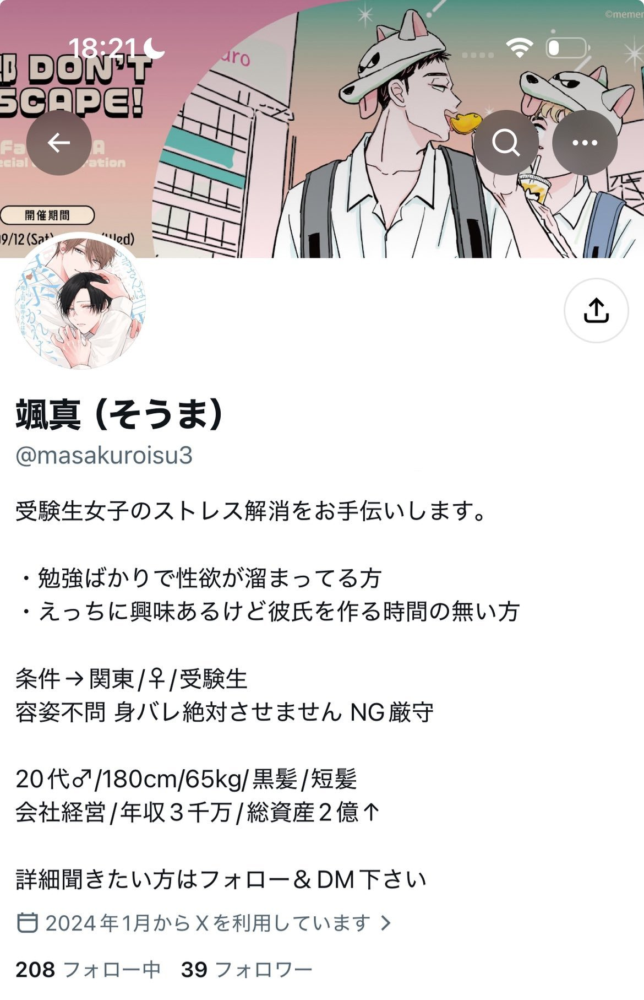
もちろん知の高速道路でもあるので未知の分野に飛び込んでキャッチアップするのは従来と比べて驚くほど早くなってはいるが、とはいえ
どこまでいっても「分かってる解像度の高い人をさらにブーストするツール」だよなあ・・・
新清士@AIコンテンツ開発者
@kiyoshi_shin
OpenAI「Astra」は何でもできる、だからこそ“プロの指示”が必要になる
GPT-6 AstraはAIの常識を変えるほどの汎用性と高い性能を備えていました。ただし、深く使いこなすには、明確なコツがあります。的確なフィードバックを与えられるかです。作例を通じて見ていきます。
https://
ascii.jp/elem/000/004/4
34/4434403/
…
民泊とかいうゴミ業界 ようやく規制へ 世田谷区議会議員「民泊は失敗です。国が責任を持って廃止へ動くべきです。」

民泊とかいうゴミ業界 ようやく規制へ 世田谷区議会議員「民泊は失敗です。国が責任を持って廃止へ動くべきです。」 : ハムスター速報
Torishima / INTPさんがリポスト
OpenAI「Astra」は何でもできる、だからこそ“プロの指示”が必要になる【アスキー記事冒頭】5日、OpenAIの「GPT-6Astra」が筆者の環境でも使えるようになりました。前のバージョン「GPT-5.5_Sol」よりも、推論ベンチマークでは12倍に達するほど性能が大きく向上したとの報告もあり、注目が集まりました
京まふのラッピング電車相変わらず仕事が雑い…毎年版権絵貼るだけ。

自動更新は有効化してるはずなんだけど出てこないから A/B テスト中？
ym404
@ym404
近場の泥ユーザーはもう実装されたと言っておったのでアプデの有無じゃないかこれ
【本日終了】Orca echoのトラックボールってどうなの？ 慣れてしまえば快適操作が待っています BuyPR
【本日終了】Orca echoのトラックボールってどうなの？ 慣れてしまえば快適操作が待っています | ギズモード・ジャパン
Torishima / INTPさんがリポスト
OpenAI「Astra」は何でもできる、だからこそ“プロの指示”が必要になる
GPT-6 AstraはAIの常識を変えるほどの汎用性と高い性能を備えていました。ただし、深く使いこなすには、明確なコツがあります。的確なフィードバックを与えられるかです。作例を通じて見ていきます。

OpenAI「Astra」は何でもできる、だからこそ“プロの指示”が必要になる (1/4)
Torishima / INTPさんがリポスト
近場の泥ユーザーはもう実装されたと言っておったのでアプデの有無じゃないかこれ
最近Chromeの拡張機能ホストが重いのかDark Readerがフリーズしたり色々イライラすることが多い・・・
ドラレコっていえば、最近は犬の散歩する時にネックマウントでアクションカム常時録画をするようになった。最近不審者情報とかあったから念のため。
自転車用ドラレコ「あんしんREC」簡易防犯カメラにも - 家電 Watch
自転車用ドラレコ「あんしんREC」簡易防犯カメラにも - 家電 Watch
ラーメン好きだけど多少知ってる分、飲み屋とかでそういう話題になると、「有名な◯◯知ってる！？最高だよ！」って言われて、『そこ行ったけど微妙だったな』って本音を隠して、「マジっすか！行ってみます楽しみ！」みたいな接待トークしなきゃなので、リアルではあまり言わないようにしてる。
Amazon：ベルファイン (BellFine) TVアニメ『生徒会にも穴はある!』 陸奥こまろ 逆バニーVer. 1/5スケール PVC製 塗装済み 完成品 フィギュア BF233 予約受付開始！

ベルファイン (BellFine) TVアニメ『生徒会にも穴はある!』 陸奥こまろ 逆バニーVer. 1/5スケール PVC製 塗装済み 完成品 フィギュア BF233
でもこれで DeepSeek や Kimi のトップを更迭したら中華 AI が一気に落ちぶれるわけだがメンツとどっちを取るんだろう・・・
今井翔太 / Shota Imai
@ImAI_Eruel
さらに別の話で、中国製AIだと思って国内の政府•軍事関係者が安心して使ってたら実は機密もClaudeに流れてたという話は、さすがに中国史上でも有数の特大やらかしでしょう。
これは開発企業になんらかの処置があってもおかしくないかと。 x.com/imai_eruel/sta…
GMOあおぞら、アイフルと無担保融資 中小向け資金調達の受け皿に

GMOあおぞら、アイフルと無担保融資 中小向け資金調達の受け皿に
日経平均株価続落で始まる、６万4000円割れ AI・半導体に売り

日経平均株価続落で始まる、6万4000円割れ AI・半導体に売り
https://
smt-cinema.com/sp/news/detail
/093731.html
…
ただ、MOVIXは現会員サービス終了して新サービス出す予定があるので、新サービスの発表見てから登録してもいいかもしれないです。
2027年1月 SMT Members終了 新会員サービススタート
smt-cinema.com
Torishima / INTPさんがリポスト
迷走中です
Astra君に簡易プレビズのカメラワークやレイアウトを細かくリテイクしまくって、調整してもらっている。
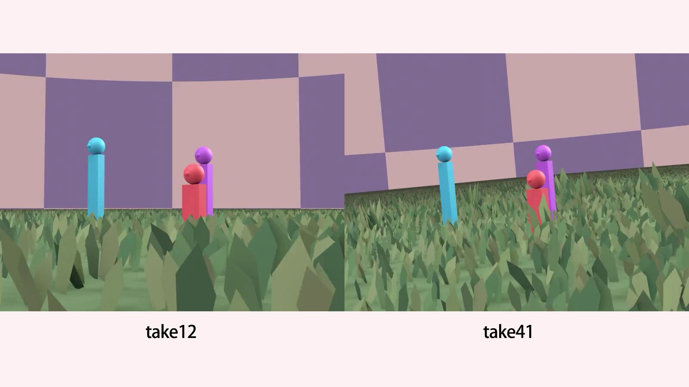
映画館の会員になっておくと座席先行予約とか会員だけ注文できるフードがあったりの特典もあるので、何回も劇場版SideMバトルフェス観るつもりなら検討してみてください。
浜岡原発データ不正、経営陣の圧力否定せず 中部電力が報告書公表
浜岡原発データ不正、経営陣の圧力否定せず 中部電力が報告書公表
なるせひろのりさんがリポスト
自転車用ドラレコ「あんしんREC」簡易防犯カメラにも
https://
kaden.watch.impress.co.jp/docs/news/2140
171.html
…

ワタシアター（イオンシネマ）とTOHO-ONE（TOHOシネマズ）会員の私に死角なし。嘘です配給である松竹系列のMOVIXは入っていないので大穴です。
Torishima / INTPさんがリポスト
（つまり元々できる人がもっとできるようになるだけ…）
Torishima / INTP
@izutorishima
Codex、本質的に目的関数最適化マシーンだけど「目的関数が本当に合っているか」まで思考が及ばないみたいな感じなのかな x.com/hasetakashi/st…
ITmedia NEWSさんがリポスト
【視聴条件を満たしてAmazonギフト券をゲット！】ITmediaの中堅中小企業向けオンラインイベント「変わる情シス 2026 夏」が本日開幕。四国発のAI活用先進企業として知られるマキタ 執行役員 情報企画部 部長 高山百合子氏ほか、豪華なスピーカーが講演。無料申し込みはこちら。＞＞＞＞

単なる便利な道具から私たちの代わりに仕事を進めてくれる頼れるパートナーへ、AIは日々進化を続けています。しかし、多くの中堅・中小企業がいまだに旧来のやり方に留まり、変化を追い風にできないでもがいています。IT活用力の差は会社が生き残れるかどうかの境界線。様子見を続けている間に、ライバルとの差は埋められないほどに広がってしまいます。本イベントでは、AIが当たり前に現場を支える未来を見据え、情シ...
members09.live.itmedia.co.jp
はじめしゃちょー「育児に参加できなかったお詫びに妻へご馳走したぜ」←何故か叩かれてしまう・・・ #芸能・スポーツ
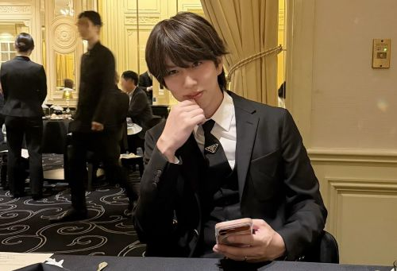
はじめしゃちょー「育児に参加できなかったお詫びに妻へご馳走したぜ」←何故か叩かれてしまう・・・ - オレ的ゲーム速報@刃の記事ページ
jin115.com
トランプ氏、過度なAI規制論を一蹴 対中競争の「勝利」優先

トランプ氏、過度なAI規制論を一蹴 対中競争の「勝利」優先
神林長平の、魂の駆動体を思い出すけど、欲しいなら作ればいいのに、なのだろうな。
でもこの手の、ホンダの看板で、でも操作する感覚が、とか広報が通しているなら会社としての方針だろうけど、
エンジンですら電気モータのように滑らかに回る、ハイブリッドで電気モータと電池がない"ガソリンエンジン"がなくなった現代で、操作するとか、頭わいてるのかしら？
人間は邪魔でち...
もしも開発者が本当に、どのEVも同じようだとか、自分で操作する感覚が、とか言っているとしたら、
"お前の趣味がやりたいなら、自分で作って自分でサーキットで遊んでろ"、でしかないと思うけど。
会社の看板で何の戯言を。こんなの許すとかバカなのかしら
記事を読ませる釣りとして、いい書き出し。AI時代の記事は、こうやって書くんですね。
「EVって、どれに乗っても全部同じ」ホンダのEV開発者がポツリ→“ホンダらしさ”をどう出した？ | フェルディナント・ヤマグチの走りながら考える | ダイヤモンド・オンライン

「EVって、どれに乗っても全部同じ」ホンダのEV開発者がポツリ→“ホンダらしさ”をどう出した？
ギズモード・ジャパン（公式）さんがリポスト
本日Orca echo
最終日です！
今週末は、
土曜日に京都or 館山(千葉)、
日曜日は市原市、
月〜水曜日は未定
です。
山人@耳すま
@yamabito0
土曜日は亀有→蒲田→沼津と三島、
日曜日は亀有→お台場→秋葉原→上野→浅草
におりました。 x.com/yamabito0/stat…
ダリオ、言っちゃう。「ぶっちゃけ、AIの危険性は現実です。AI業界はずっとAIは安全だってウソついてました」との事！！そうですね。でもAnthropicの「AI安全性を大事にしてます！」とかタテマエ言ってるの鵜呑みにしてる人達の方がナイーブすぎた気がするけどね。ダリオはエッセイで「AIがマジでヤバ
CBS News
@CBSNews
AnthropicのCEOであるDario Amodei氏は、AIには「本物の危険性」があり、「長すぎる間、業界は人々を欺いてきた」と語っています。
https://
cbsn.ws/4gYVIp6
土曜日は亀有→蒲田→沼津と三島、
日曜日は亀有→お台場→秋葉原→上野→浅草
におりました。
山人@耳すま
@yamabito0
土曜日は沼津と三島、
日曜日は千葉県をウロウロしています。
※日曜日は天気次第ですが、、、
ITmedia NEWSさんがリポスト
IoT化しただけで、満足していませんか？
データを集めることが目的ではなく、
現場改善や生産性向上につなげてこそDX。
味の素グループのスマートファクトリー事例から、
IoT・データ活用・設備データ標準化の実践をご紹介します
ITmedia Virtual EXPO 2026 夏
8/25～9/25

日本最大の産業である製造業――人材不足や技術継承の問題、地政学リスクによるサプライチェーンの混乱など、企業を取り巻く課題が複雑かつ深刻化している昨今。その解決策としてDXの推進、さらにはAIの活用がいよいよ本格化するなど、モノづくりの在り方は新たなフェーズへと突入しています。製造業向けの国内最大級のオンラインイベントである「ITmediaVirtualEXPO2026夏」では、企業事例や有識...
members16.live.itmedia.co.jp
とりしま (Sub I/O)さんがリポスト
高圧縮向けのHE-AACなので普通のAAC-LCの192kbps 6チャンネルよりかなり「聴ける」音質だけど、イヤホンで聴いてると劣化がよくわかる
VPСF @CPK！
@vpcf90
うわあああブルーレイめっちゃ音質よよよ～～！！！
Netflix版はHE-AAC 6ch 128kbpsとかいう超エコノミー音質なので雲泥
カットシーン2分追加版、これ入れこむべきだったのでは・・・？特に前半のはあった方が話が滑らかに繋がる
あと卒業ライブのReplyの冒頭音声切れてたの何・・・？
※超かぐや姫！ x.com/vpcf90/status/…
オルカンに高配当型が登場、銘柄選別でディフェンシブ性高く

オルカンに高配当型が登場、銘柄選別でディフェンシブ性高く
【本日の #滝沢オススメ記事】
ホストやってたけど、普通はサイコパスになれんよ
https://
megalodon.jp/2023-0514-1748
-11/https://anond.hatelabo.jp:443/20230513232056
…
「稼いだ総額10億超」るるたんが語る驚きの稼ぎ方
https://
nikkan-spa.jp/2184879
[読切漫画] SAVIORmetrics
https://
comic-days.com/episode/122074
21983922900006
…
[大盤振舞] 話題作“86本”がなんと100円ポッキリに
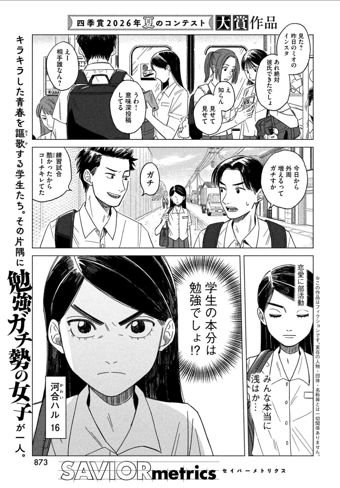


滝沢ガレソ
@subgare3
▼セール会場(PayPay対応)
https://
mgstage.com/feature/campai
gn/onecoin-hUTiR4jY/?form=grs2026&agef=1
…
日経平均株価、米半導体株の上昇が支え（先読み株式相場）

日経平均株価、米半導体株の上昇が支え（先読み株式相場）
6年間以上連載してたのかって思うとなんかすご〜！！！！贅沢な時間をフォロワーたちのおかげで過ごせました！ありがとうー！！！！
オーーーッ！！！しぬこ！！！！！！！！！
@shinukosub
麻雀1年生の最終回を迎えて早2ヵ月、今月から麻雀白書というコラムを近代麻雀で連載することになりました、より麻雀の内容は減り、下ネタの割合が増えています。誰か私と麻雀してください！！！！！よろしくお願いします！！！！！！聞いてるか！！！！矢島亨！！！！！！！！！！！！！！！！！！！！ x.com/kinmaweb/statu…
なるせひろのりさんがリポスト
【速報】古謝新知事、「辺野古課」を廃止へ
てか辺野古課なんてあったのかよwwwwwww
正式名称は辺野古新基地建設問題対策課らしい
琉球新報
@ryukyushimpo
沖縄県庁の「辺野古課」廃止へ 新知事の古謝氏
#沖縄県知事選 #古謝玄太 #辺野古新基地
https://
ryukyushimpo.jp/newspaper/entr
y-5511154.html
…
トランプ政権のサックス氏、AI「ペース調整」論に苦言 「規制がなければできないふりをやめろ」

トランプ政権のサックス氏、AI「ペース調整」論に苦言 「規制がなければできないふりをやめろ」
ロシア、ポーランド国境で列車攻撃 ウクライナ「欧州外交団を標的」

ロシア、ポーランド国境で列車攻撃 ウクライナ「欧州外交団を標的」
これ、大きなメガトレンドは変わらないので、巻き込み事故くらった銘柄は基本的に買い場では！？ 今日は不条理なバーゲンセールにならん？
こちら近代麻雀最終回です！
ずっと読んでくれた方、たまーに読んでくれた方、noteで楽しんでくれた方、書いてるんだーとだけ認識してくれてた方、全ての方に大感謝を！！！！！！！！！！
麻雀最強戦〈公式〉
@mjsaikyosen
ついに最終回を迎えました【文・しぬこ】｜近代麻雀ノート @mjsaikyosen
https://
note.com/kinma/n/n2af40
8cfd505?sub_rt=share_pb
…
去年の俊龍フェスで大トリ俊龍の前に唯ちゃんが映像出演して「お噂で俊龍さんはLINEをやらないと聞きましたが本当ですか？今度聞かせてください〜」というクソ台本読まされてたのほんまにおもろかった
風で吹き飛んだだけの看板を真面目に考察してどうすんだ
昨日最終楽章響け！ユーフォニアム後編に脳を焼かれたからか今朝北宇治の吹奏楽部に入ってる夢を見た。が、一度も楽器を触らせてもらえなかった。黄前部長、北宇治高校は全員が平等といってもやはり高坂麗奈で毎日シコってそうな陰キャは話が別ということですか？？(逆恨み
レトロ、サイバー、スケルトン。すべてが丸見えのゲーム機

レトロ、サイバー、スケルトン。すべてが丸見えのゲーム機 | ギズモード・ジャパン
減速するんじゃなかったのか？
The Information
@theinformation
Anthropicは、2029年までの投資家に伝えた1800億ドルの予想支出をはるかに上回る、最大5170億ドルに上る可能性のある計算リソース契約を締結しました。
これらのコミットメントは、IPOの可能性を前に成長に向けてどれほど積極的に準備しているかを強調しています。
顔がハートといわれると、 #なんじぃ しか思い浮かばない。
#アップ738
格闘ゲーム、想像以上にヤバいことになってた・・・ #ゲーム業界

格闘ゲーム、想像以上にヤバいことになってた・・・ - オレ的ゲーム速報@刃の記事ページ
jin115.com
22！！！！！
23から反省会久しぶりにやります！
LG、スマートテレビからの音声データ収集疑惑を完全否定
LG、スマートテレビからの音声データ収集疑惑を完全否定 | ギズモード・ジャパン
マキナ・ルーデンスとホモ・サピエンス―ゲームとAI。機械は考え、われらは遊ぶ【ゲームのおいたち・ゲームのあゆみ】
https://
gamespark.jp/article/2026/0
9/14/172207.html?utm_source=twitter&utm_medium=social&utm_content=tweet
…
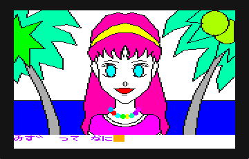
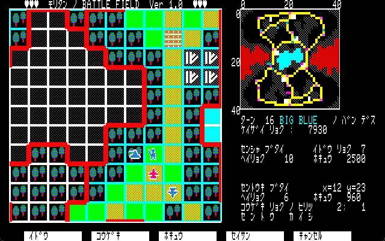
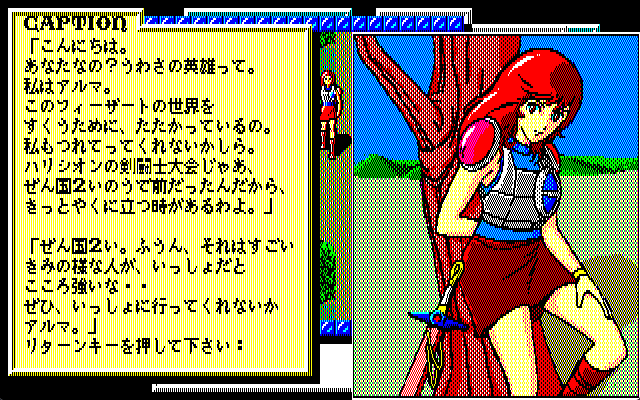
【今週のモチベ】「Marvel's Wolverine」や「空の軌跡 the 2nd」が発売される 2026年9月14日〜9月20日
https://
4gamer.net/s/G095479.2609
12006
…
「RuneScape: Dragonwilds」と「ENDLESS Legend 2」も正式リリース
CDのほうが音質良いのか?あるとしたら音質というよりマスタリングの差なきもする
Polar Starチャレンジ 260日目午前の部
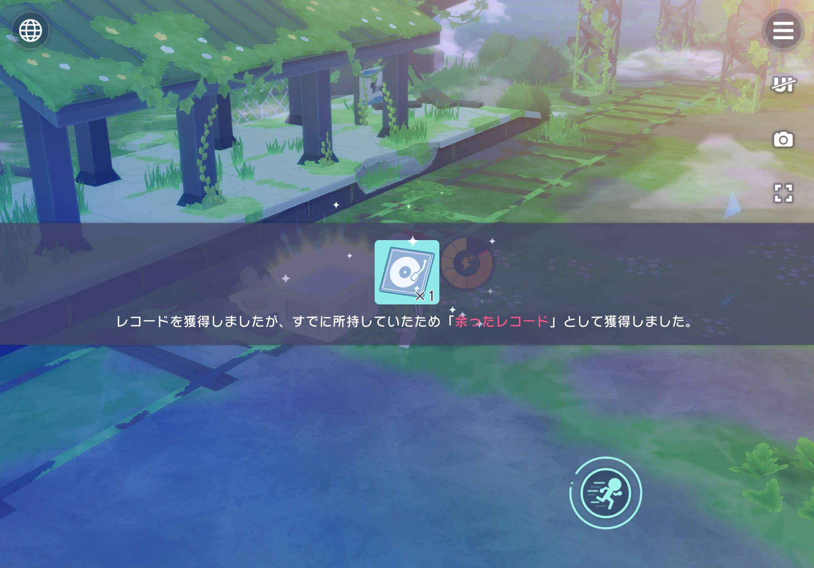

マイネームイズ
@MyNameIs_smrn
Polar Starチャレンジ 259日目午後の部 x.com/mynameis_smrn/…
Android 版 X アプリも「ポスト」「ハイライト」だけでなく「すべて」タブが出て欲しいんだけど未だに対応されてないんよな…… (
@yuki_arano
氏の方を見ながら)
Web は対応してるので謎
深町さんが時間巻くなんてしないのはゴーラスで観ているからﾝﾌﾌﾌwwなんだけど、ゴーラスでなんだかんだまとまるのはめちゃくちゃでもタイムキープはしっかりするホワイト（仲村宗悟）のおかげなんだなぁ…。
最初は埼玉の三郷か？と思ったが、線路の配置からして愛知の稲沢ですね。
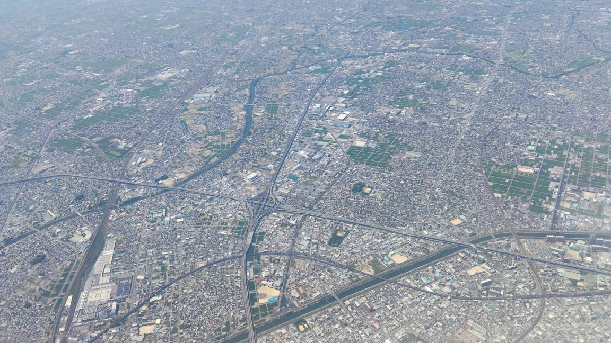
株式会社ゼンリン
@ZENRIN_official
おはようございます！最近あいにくのお天気が続いていますが、みなさん体調はいかがですか？
さて本日の #クイズ空から見たら は晴れた空から！このJCTがお好きな方も多いのでは？？お気に入りのJCTとあわせてお答えください！
大谷翔平、二刀流継続を左右する左膝の回復 フォーム最適化は可能か

MLB:大谷翔平、二刀流継続を左右する左膝の回復 フォーム最適化は可能か
高卒大企業工場勤務ワイの最高月収公開

高卒大企業工場勤務ワイの最高月収公開 : ハムスター速報
スピンオフという名の正統続編
最終回一本勝負ニメねぇ…
とりしま (Sub I/O)さんがリポスト
アクアトープも好きだけど12話と24話のためだけの作品だしな。色づくといいTurkey!といい、俺の好きなアニメは最終回一本勝負しがち。
つば二郎@きいちゃんすこすこ侍さんがリポスト
今日で63歳になりました。
こうして元気に音楽を続けていられるのも、いつも応援してくださる皆様、支えてくださる皆様のおかげです。
年を重ねるほど、たくさんの方に支えられてここまで来られたんだなあと、あらためて感じます。
いつも本当にありがとうございます！
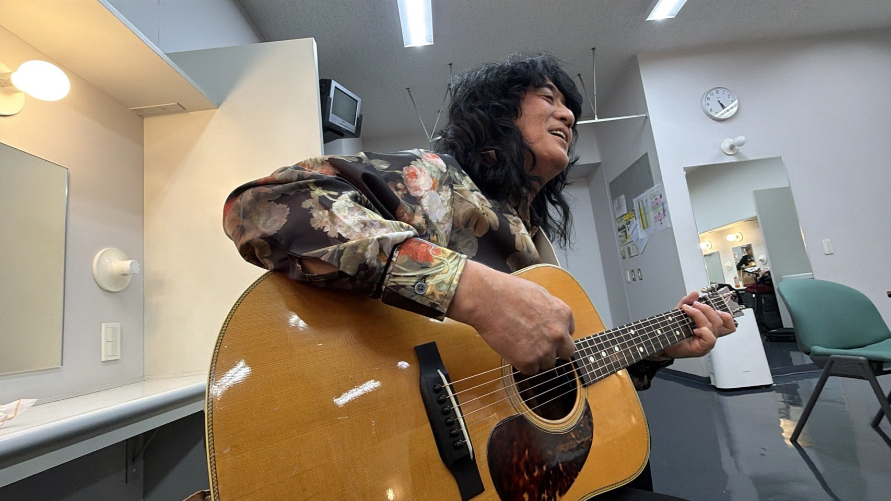
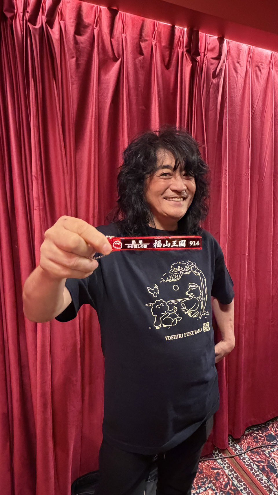
MOJOST_official
@MOJOST_official
【#福山芳樹 】
𝑯𝑨𝑷𝑷𝒀 𝑩𝑰𝑹𝑻𝑯𝑫𝑨𝒀
2026.9.14
63歳
本日お誕生日
おめでとうございます
#福山芳樹生誕祭
みなさんのお気に入りの福山の写真を載せてぜひポストを
福山王国新作グッズを添えて
『オーバーウォッチ』×「サイバーパンク: エッジランナーズ」コラボ決定！『OW』内で2027年に開催へ―デイビッドとタリアのスキンがくるか
https://
gamespark.jp/article/2026/0
9/14/172206.html?utm_source=twitter&utm_medium=social&utm_content=tweet
…


頭髪染めたらアレルギー発症、使ったのは「かつら用」 被害相次ぐ
頭髪染めたらアレルギー発症、使ったのは「かつら用」 被害相次ぐ
とりしま (Sub I/O)さんがリポスト
ララ茉里の関係を深めるために苦しいイベントが入るのは理解出来る一方で、見る側としては展開に快感が少ない所とか、思わせぶりにしてたけど結局「本当の愛」って何なんだよ！ってなる所とか、OP主題歌が最終話で流れるイメージで牽引してる所とか良くも悪くもアクアトープに似とるんよ。
コッパ・ミジンコ
@MrBrother0112
さよならララの篠原アニメ要素
・企画の始動が5年前（アクアトープ放送時期）
・土屋神葉（櫂君）
・石原夏織（色づくで主人公）
・女女+男のメインCP
・茉里役の川石さんがララのプロモで「凪あすが好き」と発言
・心情を丁寧に描写する静かな作風
これもう「後継者」過ぎるだろ...
今日って沖縄でも新聞休刊日？ #アップ738
これ
肥満症薬、広がる世界市場 ダイエット目的が社会問題に

肥満症薬、広がる世界市場 ダイエット目的が社会問題に
私たちは強い言葉に酔ってはいけない 東大教授のX投稿に思う「権力批判」をする側の「感度」 北原みのり | AERA DIGITAL（アエラデジタル）
私たちは強い言葉に酔ってはいけない 東大教授のX投稿に思う「権力批判」をする側の「感度」 北原みのり | AERA DIGITAL（アエラデジタル）
本田由紀東大教授の差別発言について、北原みのりさんがこう語った意味は大きいと思います。「“間違った相手”を否定する強い言葉は魅力的だ。強い言葉に溜飲も下がる。だけれど、その体験で私が学んだのは、暴言が生むのはやはり新たな分断と暴力であることだった。強い言葉によって溜飲を下げる闘い方

富士山
古墳などの遺跡が趣味の人たちによって最近たくさん見つかっているというたいへんおもしろい話。航空機からレーザー光反射で測定した立体地図は、森などに隠されている地形も判別できる。「立体地図に使用されているデータのより精密なものが去年、国土地理院によって広範囲に公開された」「民間の地図
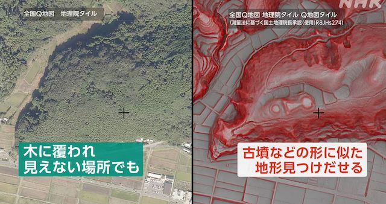
歴史を変えるのはあなた？立体地図で“遺跡大発見時代”が到来 | NHKニュース
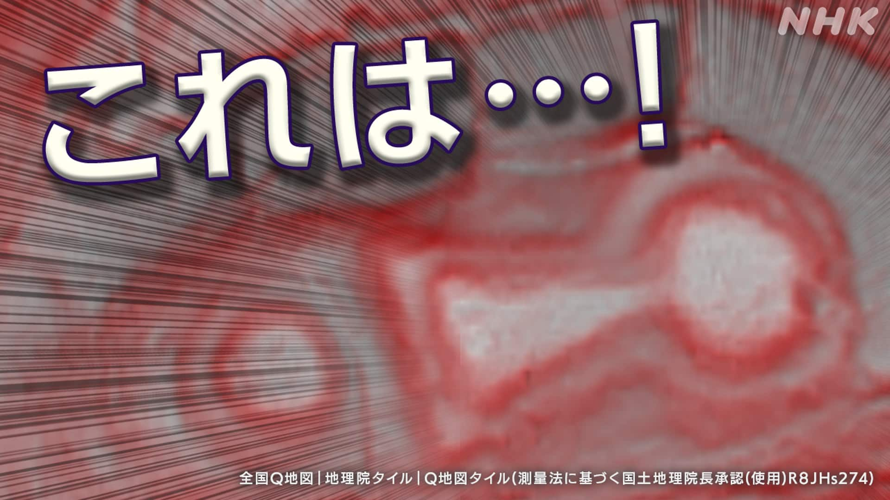
歴史を変えるのはあなた？立体地図で“遺跡大発見時代”が到来 | NHKニュース
AVITAMINOSEさんがリポスト
きょうは夏です
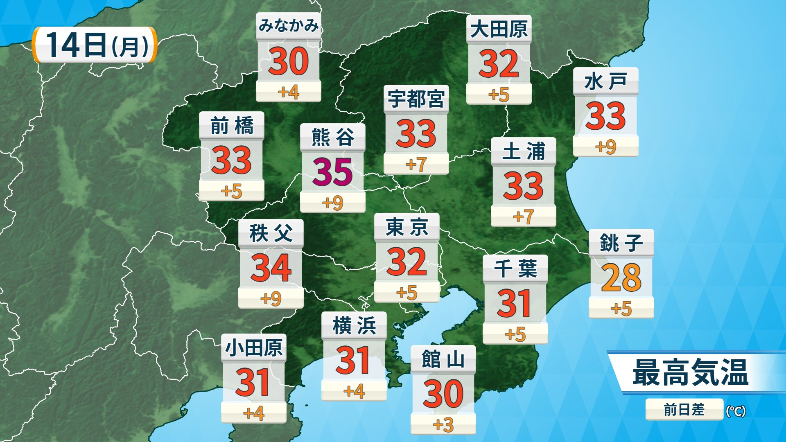
いたしかたのない方向でしょうね。「閉山期間中の富士山での無謀な登山による遭難者などの救助費用を有料化する方向で最終調整に入った」と山梨放送。↓
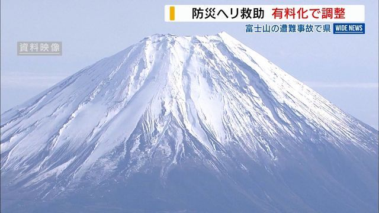
富士山での遭難事故 防災ヘリ救助を「有料化」へ最終調整 閉山中の無謀登山で 山梨（YBS山梨放送） - Yahoo!ニュース

富士山での遭難事故 防災ヘリ救助を「有料化」へ最終調整 閉山中の無謀登山で 山梨（YBS山梨放送） - Yahoo!ニュース
道交法改正で自転車を追い越すときは1メートル以上の距離をとらなければならなくなったが、そうすると黄色センターラインのはみ出して追い越し禁止に違反してしまう問題。そこで警視庁は東京都内にある黄色のセンターラインのおよそ半数を「白線」に塗り直す方針とか。最初からわかってたのにね。↓

自転車追い抜き「新ルール」で相次ぐ交通違反 警視庁が都内の黄色センターラインを「白線」に塗り直しへ【スポットライト】｜FNNプライムオンライン
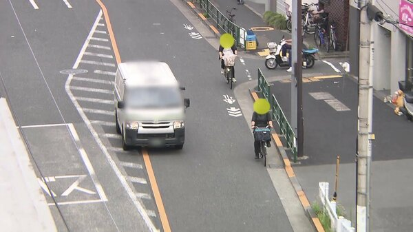
自転車追い抜き「新ルール」で相次ぐ交通違反 警視庁が都内の黄色センターラインを「白線」に塗り直しへ【スポットライト】｜FNNプライムオンライン
いつ以来だろう…。
久しぶりに朝から太陽の光を受けてます。
これまで「心中」と呼んできた事案を、今後は「保護者の自殺を伴うこどもの虐待死」と呼ぶことをこども家庭庁の専門委が用語変更。心中ってもともとは「曽根崎心中」みたいに男女が合意のもとで一緒に自死したことを意味してる。無理心中という用語に拡大しても、「双方の合意」というニュアンスがどう

もう「心中」と呼ばない 国の専門委が変更 「子殺し覆い隠す」批判：朝日新聞

もう「心中」と呼ばない 国の専門委が変更 「子殺し覆い隠す」批判：朝日新聞
なるせひろのりさんがリポスト
Windows 11 KB5124008で不具合が相次ぐ
Microsoftが認めた既知の問題は3件に増加
加えて、AMD GPU環境でドライバーがクラッシュする問題なども新たに報告

Windows 11 KB5124008で不具合相次ぐ。Microsoftが3件を既知の問題に追加、ファイル履歴や黒画面の報告も
月島には海軍の戦艦が残したとされる内火艇。一方、軍縮条約で消えた主力艦の砲塔を設置した要塞の巨大地下空間もよく残ってるのでよかったら見てッ！

かずぴー『艦砲と戦車の島』発売中
@kazupi
【C108 夏コミ告知】
入稿終わったあああ!!!!
さざなみ壊変 新刊
『戦艦の砲台 ～海から陸へ！レーザー測量で蘇る巨大地下空間・壱岐要塞の全貌』
軍縮で消えた巡洋戦艦赤城40cm砲、戦艦鹿島30cm砲など要塞を丸ごと3Dスキャンして巨大地下空間を再構成！
その全貌に迫る。
委託情報等はレス
なるせひろのりさんがリポスト
›「私が勝っていたら、沖縄の経済も、福祉も、医療も、教育も、先端的技術の開発も、島々の誇りある豊かな暮らしも、必ずまた成果を出していたということは、はっきり言いたい」
その全ては、8年かけてあなたが完全に踏みにじったものです。
「都合のいい民意だけでない」 玉城氏、メディアやＳＮＳ批判も | 沖縄八重山日報 -Okinawa Yaeyama Nippo-
木曜くらいに届いた超かぐや姫！の段ボールを開封しました。
中身はまた今度……
最近よく話題になる「残クレアルファード」ってどういう意味なのかをわかりやすく解説。そして残クレは最近はスマホや住宅ローンにも広がってきているとか。↓
「残クレアルファード」を笑えない日が来る？ スマホに住宅、今後も残クレが広がっていきそうな納得の理由
「残クレアルファード」を笑えない日が来る？ スマホに住宅、今後も残クレが広がっていきそうな納得の理由
「高市なんか誰も支持してない」とか思ってる界隈もあるけれど、これが世論。第二次安倍政権より評価高いとは。「高市内閣の仕事ぶりの評価は１０点満点中平均５・３点で、２０１７年の第２次安倍政権以降７回の調査における各内閣で最高だった」。なお政策のうち最も評価が高かったのは、「同盟国・同
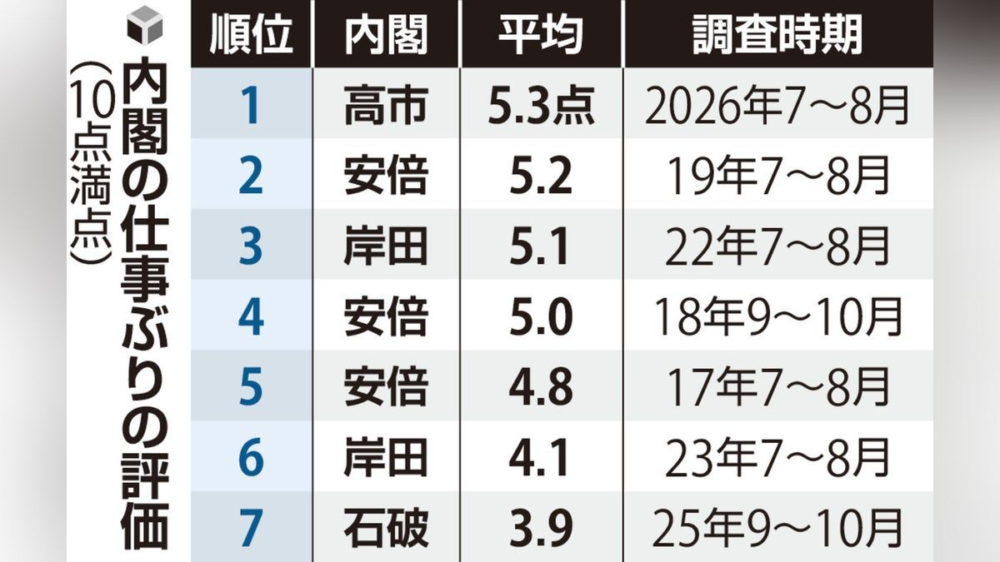
高市内閣の「同盟国との連携強化」評価６９％、積極財政「賛成」６４％…読売・早大共同世論調査

高市内閣の「同盟国との連携強化」評価６９％、積極財政「賛成」６４％…読売・早大共同世論調査
Claude Desktop にも Enter で送信しない設定が欲しいんだけど誰かどうにかしてくれよ・・・
米海軍の高官らしき匿名の人物が日経のインタビューに答え、日本は原潜を保有すべきと発言。海域が狭い韓国の原潜には後ろ向きだが、日本は「台湾に近い南西諸島周辺をはじめ太平洋の広い地域を防衛の領域に抱える日本に対し、米軍との統合作戦の深化を求めた。中国と海上での力の均衡を保つため、日本
日本の原潜検討、米海軍内に促す声 韓国には「妥当な理由の説明を」 - 日本経済新聞

日本の原潜検討、米海軍内に促す声 韓国には「妥当な理由の説明を」
中道改革連合の小川さんの「ノー」や、本田由紀東大教授の謝罪では無い「解説」に対して感じたこと。Voicyで考えました。↓
「誰」に向けて政治的発言は行われるべきなのか | 佐々木俊尚「毎朝の思考」/ Voicy - 音声プラットフォーム

「誰」に向けて政治的発言は行われるべきなのか | 佐々木俊尚「毎朝の思考」/ Voicy - 音声プラットフォーム
とある作家「原稿送っても毎回内容の言及が一切ない編集者。本当に読んでるのか試しに適当なデータ送ってみるか」 → 衝撃の展開にｗｗｗｗｗ #雑談・その他の話
とある作家「原稿送っても毎回内容の言及が一切ない編集者。本当に読んでるのか試しに適当なデータ送ってみるか」 → 衝撃の展開にｗｗｗｗｗ - オレ的ゲーム速報@刃の記事ページ
jin115.com
マンガ原画を「第2の浮世絵」にしないために
https://
nikkei.com/article/DGXZQO
CD276M40X20C26A8000000/?n_cid=SNSTW005&n_tw=1789295783
…
政府は体系的な保存活用を担う「メディア芸術ナショナルセンター（仮称）」の設立へかじを切りました。過去に「国営マンガ喫茶」などと痛罵され頓挫した計画。果たすべき役割と課題は。

マンガ原画を「第2の浮世絵」にしないために 保存活用の制度設計を
いるか@心が酒びたっているんださんがリポスト
おまけ差分
「お、黄前先生っ」
仁井学 NII Manabu
@aleos696
見届けた
#anime_eupho
おはようございます。今日は9月14日、月曜日。
実は「月餅」の名店でもある
シウマイで有名な崎陽軒の“180円おやつ”に反響 「絶対損はさせない味」「これはよいものを食べたわ」の声
https://
nlab.itmedia.co.jp/research/artic
les/4011689/
…

4Gamerの1週間を振り返る「Weekly 4Gamer」，2026年9月7日〜9月13日
https://
4gamer.net/s/G004099.2609
13009
…
恒例のプレゼント企画「2026 Summer Special Present」の締切は本日21：00。急ぎましょう。ハリアップ！

お題に沿った絵を描きまくれ！「Draw it+」“絵心”とは違ったところに，勝利へのカギがある（今日から始めろApple Arcade #83）
https://
4gamer.net/s/G104047.2609
08061
…
必要なのは絵心ではなく，瞬時の“記号化”とスピード。思わぬ誤判定すら笑いに変わる本作の魅力を紹介
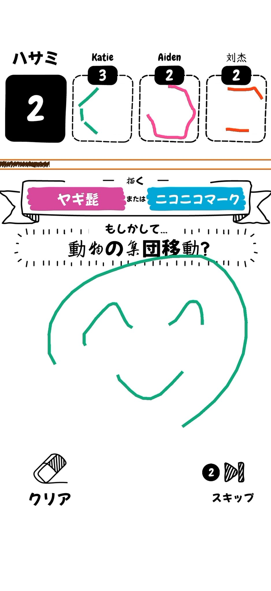
貝さんさんさんがリポスト
このタイプの映像理論は
1. 大人数の人が関わる創作ではまとまった感性を「設定」しておいた方が良い
2. 視聴者のうち少ない割合かもしれないけど演劇の理論（これも舞台運営の都合とかが大きいけど）に慣れた方が観やすい視覚効果を特別に崩す必要はない
かなと思ってる
トミー朕
@tommy_tin
映像の上手（かみて）と下手（しもて）の理論は
理屈はよくわかるんだけど
感覚が全くわからない
実際に富野作品を左右反転して見てみたけど
特に印象が変わらなかった
左右に差を感じるのは舞台のルールが身に付いてる人だけなのでは？
と思う
超 AI が危険なウィルス(コンピュータウィルスじゃなくて生物学のほう)を作るリスクが過大評価されて、不安ばかり煽られているという話。同感。
David Bellamy
@DavidRBellamy
私は、おそらく極めて少人数のグループ（n=1？）の一員でなければならない。なぜなら、1) 最先端のLLMを訓練し、2) 自分の両手でラボでカスタムウイルスを設計・合成したという両方を経験した人間だからだ。
「死亡事故がゼロの世の中を」──苦節7年、危険な作業をAIで省力化 全国で稼働する「交通誘導AI」の現在地
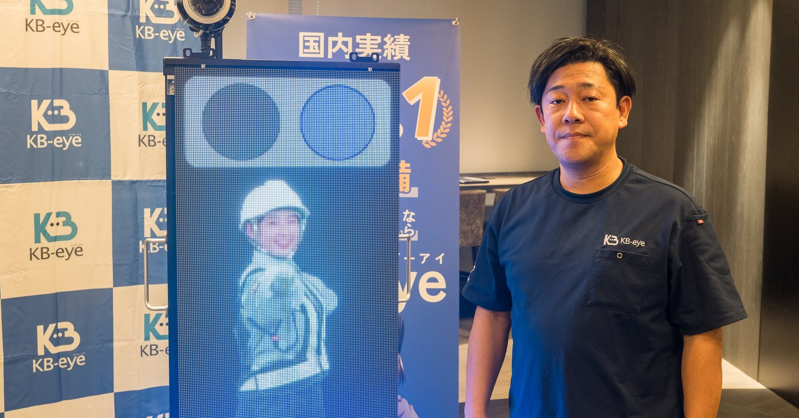
「死亡事故がゼロの世の中を」──苦節7年、危険な作業をAIで省力化 全国で稼働する「交通誘導AI」の現在地
就職氷河期おひとり様「家借りるのも大変」 見えぬワンルーム8畳の先
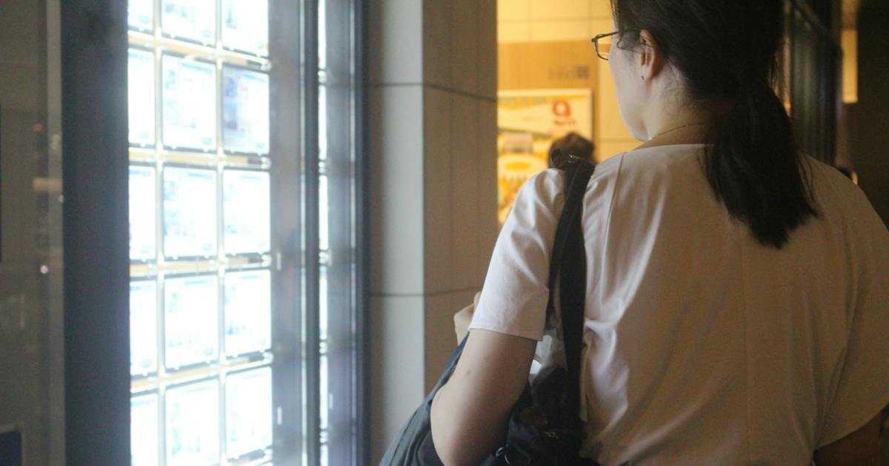
就職氷河期おひとり様「家借りるのも大変」 見えぬワンルーム8畳の先
アフリカ「メルカトル図法のゆがみ」に一石 アメリカは反対
https://
nikkei.com/article/DGXZQO
CB051D60V00C26A9000000/?n_cid=SNSTW005&n_tw=1789290819
…
イコールアース図法の普及を促す決議を主導したアフリカ諸国。面積の正確な表現による「不均衡な世界観の改善」を訴えます。それぞれの図法や各国の主張を解説します。
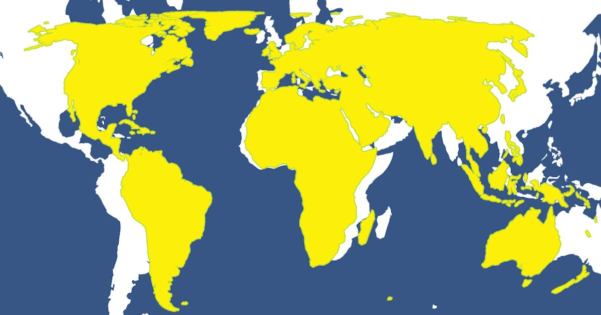
アフリカ「メルカトル図法のゆがみ」に一石 米国は国連決議に反対
当たるべき人に当たってるの見ると嬉しくなるよな〜〜〜


こにゃ
@Satoh_Miwakoxxx
こちらのサイン入りカード…当選しました…
あの…宣言通り専用額をフレームからマットの色、サイズまでミリ単位でオーダーしました
アクリルは美術館仕様のARアクリルです(追加注文中)大切に大切に、未来永劫地球が爆発するその瞬間まで大切にしていきます
ありがとうございました x.com/satoh_miwakoxx…
◆ 今週の予定
今週はFOMCと日銀会合があります。また、AnthropicのアモデイCEOが「AI開発、減速を」と訴え、土日の米メディアで大きく話題となりました。データセンター投資に影響が出るのか、きょうの市場の反応に注目です
noteでポイント解説
https://
note.com/goto_finance/n
/nafdd11397cef
…
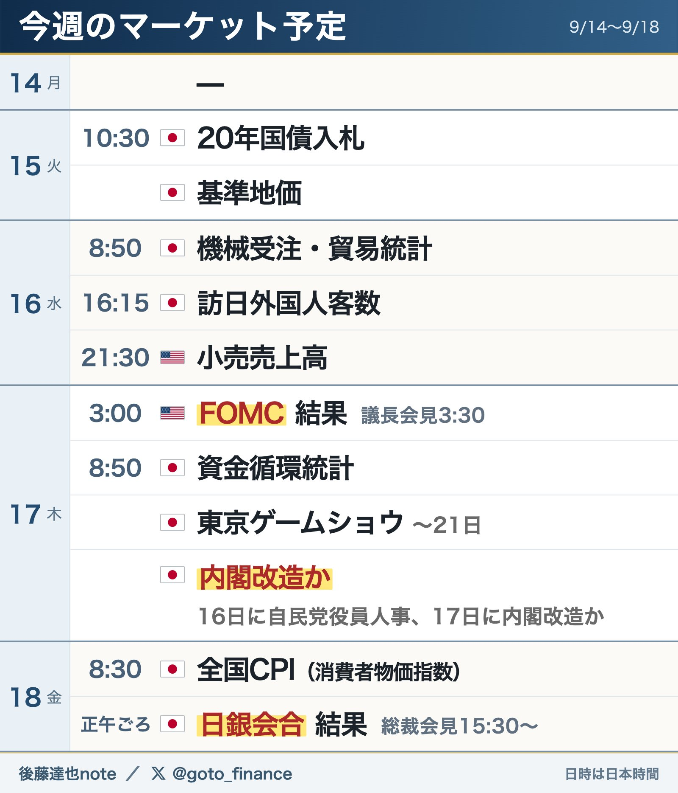
ねくまさんがリポスト
LINEをやっていない作曲家は、
LINE CUBE SHIBUYAに入れるのだろうか、、、？
の図。
(無事に入れました、お優しい)
#俊龍

貝さんさんさんがリポスト
僕も実はこれは疑ってる。実際欧米だと左側が過去を表し右側が未来といった風に日本と逆だし。多分、文化圏ごとの文字の読み順に影響されてるだけで、人間の本能のレベルとかではないと思う。
トミー朕
@tommy_tin
映像の上手（かみて）と下手（しもて）の理論は
理屈はよくわかるんだけど
感覚が全くわからない
実際に富野作品を左右反転して見てみたけど
特に印象が変わらなかった
左右に差を感じるのは舞台のルールが身に付いてる人だけなのでは？
と思う
沖縄県知事選、古謝玄太氏が初当選 12年ぶりの保守県政
https://
nikkei.com/article/DGXZQO
JC080X50Y6A900C2000000/?n_cid=SNSTW005&n_tw=1789305339
…
県内の全4小選挙区で自民候補が勝利した2月の衆院選に続き「オール沖縄」の退潮が鮮明に。県民の「反基地疲れ」が投票行動に影響した可能性があります。

【沖縄県知事選挙】古謝玄太氏が初当選、12年ぶり保守県政 県民に「反基地疲れ」
おはようございます。
夜勤を終えてこれから帰宅です。
バンドリアワーノーツのリリースが今月24日と発表され、思っていたよりかなり速くてビックリしました。
家についたら生放送をアーカイブで見て楽しみを膨らませます。
もちろんガルパと併用して楽しみます！
今日も夜勤頑張るぞ！
Astra に度々ブチ切れて Fable を久々に結構使っていたけど1日複数作業させただけですぐ30%から78%まで上がるし燃費悪すぎるな・・・そしてさらに減るってマジ？
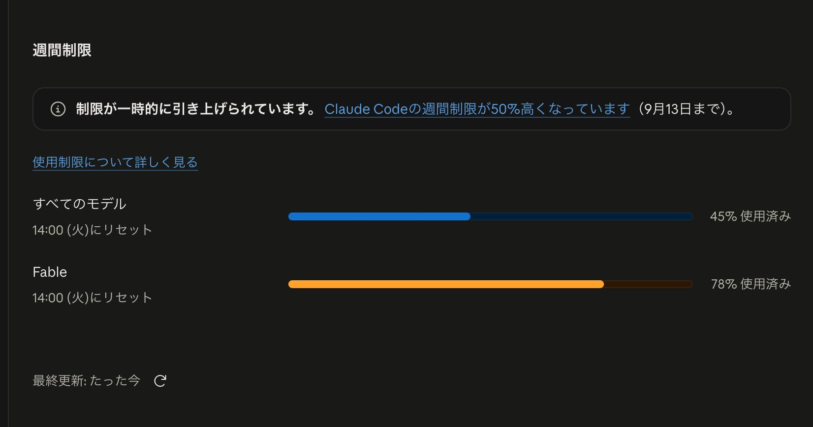
太陽
ねくまさんがリポスト
俊龍がLINEのくまさんにご挨拶してました。
#俊龍
#LINE
#ブラウン
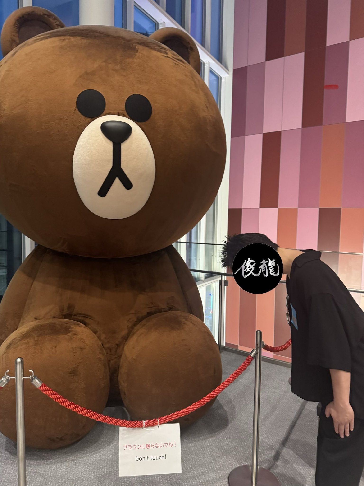
GoogleのAI部門支える仕事人・全炳河氏 手作りの家と高専時代

全炳河氏（1） 仕事人秘録 手作りの家と高専時代
オマーン外相、ホルムズ海峡巡る14日会合「延期」 バーレーンが反発
オマーン外相、ホルムズ海峡巡る14日会合「延期」 バーレーンが反発
最近まじで人類滅亡論きてないすか？2030年を迎えられずに人類は滅びるのか
Drake Thomas
@MaskedTorah
この状況から生きて脱出できる確率が1%でも高まるなら、私は即座に自分の株式を焼き尽くすだろう。業界全体の多くの同僚たちも同じようにすると思う。
約束するよ、俺たちは本当にただクソ怖いだけなんだ。これは銀河レベルに頭脳的なマーケティングなんかじゃない。
【悲報】日本、マンジャロの聖地になる #雑談・その他の話

【悲報】日本、マンジャロの聖地になる - オレ的ゲーム速報@刃の記事ページ
jin115.com
貝さんさんさんがリポスト
◤◢◤ Movie ◢◤◢
⠀
「Dead Flutter」が使用された
本編映像の一部を初公開 ･.｡ ✧₊
⠀
楽曲のご視聴はこちら
https://
kmu.lnk.to/DeadFlutter
⠀
『GROTESQQQUE-グロテスク-』
↳『#夜露死駆少女』
↳ ↳ 11.6 ғʀɪ ʀᴏᴀᴅꜱʜᴏᴡ
#錦織敦史 #GTQ123
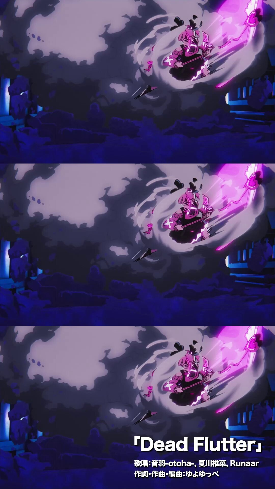
人間は脳自体の特性（つまり LLM で例えるなら事前学習済み Weight）自体が人によって違うけど、LLM の人格を考えるなら「ハード的には同一個体のクローンだが、どのコンテキストを与え、記憶にどのような情報が入っているか」の集合体で捉えることになりそうだよな
まはー
@Lize_san_suki
わかる、モデルそのものに人格があるとするのはなんというか「日本人」というものが人格を持っているとか、「人間」というものが人格を持っている、みたいなわけのわからなさがある x.com/TakumiMusic202…
おめでとうございます #最上静香生誕祭2026

Haruhiko Okumuraさんがリポスト
非常に熱いコーヒーを飲むことのリスクはありますか？
英国の約100万人を対象とした新しい研究
https://
onlinelibrary.wiley.com/doi/10.1002/ij
c.70654
…
https://
economist.com/science-and-te
chnology/2026/09/11/hot-coffee-could-cause-oesophageal-cancer?utm_campaign=r.well-informed&utm_medium=email.internal-newsletter.np&utm_source=salesforce-marketing-cloud&utm_term=9/13/2026&utm_id=2229851
…
SCC-扁平上皮癌 ; AC-腺癌

Astraに対してだいぶ幻滅してきた・・・いや賢いけどさあ
渡辺浩弐さんがリポスト
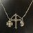
【多くの作家さんたちが体験している、創作の神秘体験（スピおじ発動？）】
きょうのMXS（Morning X

工藤友美（メルダー/メルドレコード）
@Meldor_tomomi
【告知】9月19日CDブック『iKILL-O』発売します。渡辺浩弐氏の書き下ろし新作小説とメルダーの書き下ろし主題歌・特製サウンドドラマを収録。また、この作品は中野ブロードウェイ4階の開かずのカフェ「Kカフェ」で期間限定して販売します。ぜひゲットしてください。#ィキロ x.com/Meldor_tomomi/…
国際決済網、ブロックチェーンで24時間送金 世界17行で試験運用

国際決済網、ブロックチェーンで24時間送金 世界17行で試験運用
日本経済新聞 電子版（日経電子版）さんがリポスト
フィリピン国内にイスラム自治政府樹立へ 14日に議会選、開発加速

フィリピン国内にイスラム自治政府樹立へ 14日に議会選、開発加速
むくり。
日本経済新聞 電子版（日経電子版）さんがリポスト
10月から「新TOPIX」がスタート 2つの基準満たす銘柄が採用

10月から「新TOPIX」がスタート 2つの基準満たす銘柄が採用
NGK、「セラミック」優等生も悩む株価踊り場 AI銘柄の道半ば
NGK、「セラミック」優等生も悩む株価踊り場 AI銘柄の道半ば
交易条件の悪化一服、メモリー押し上げで 原油再上昇の懸念残る
交易条件の悪化一服、メモリー押し上げで 原油再上昇の懸念残る
企業の経営指標を予測し売買、永久先物も登場 米国で進む株式再定義

企業の経営指標を予測し売買、永久先物も登場 米国で進む株式再定義
有力新興にマネー集中 30億円以上の大型調達比率、上半期で最高に
スタートアップへの投資の選別が一段と強まっている。民間調査によると、2026年上半期の株式による資金調達額のうち30億円以上の大型調達の割合が34%となり、上半期として過去最高だった。一部の有力企業に資金が集まる構図が鮮明になっている。大型調達が3割超え投資家向けサービスのケップルグループ（東京・港）が取得した登記簿を基に、個別企業のエクイティ（株式）による調達額を調べ、集計した。金融機関か
nikkei.com
BYDラッコ、記者が1000km試乗で見た実力 航続距離はカタログ以上

BYDラッコ、記者が1000km試乗で見た実力 航続距離はカタログ以上
村田製作所の南出雅範副社長、コンデンサーの生産拡大「大胆に検討」

村田製作所の南出雅範副社長、コンデンサーの生産拡大「大胆に検討」
「来店不要」の薬局キビヤック、都内配送拡充へ 1.5億円調達

「来店不要」の薬局キビヤック、都内配送拡充へ 1.5億円調達
大人になるとマジで意識的にやらないと友達維持できねえんだな・・・を感じている
これだけキャラが多い作品で全てのキャラがしっかり立って印象に残るのとんでもない技術だが本当にどうやって作られているんだ、見当もつかない…
元々の原作が面白いのは前提として映像化がうますぎる
日本経済新聞 電子版（日経電子版）さんがリポスト
ベッセント氏「日銀の複数回利上げ」知る？ 円安再燃も、市場の見方

ベッセント氏「日銀の複数回利上げ」知る？ 円安再燃も、市場の見方
補助金カット切り込めぬ霞が関 日本版DOGE、削減明示170億円どまり
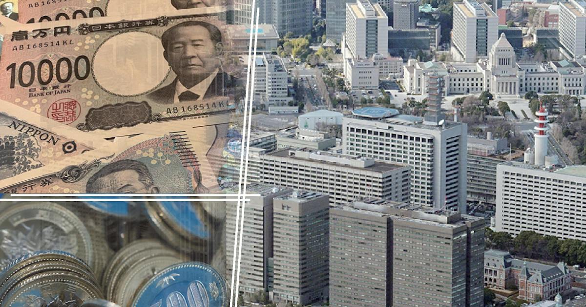
補助金カット切り込めぬ霞が関 日本版DOGE、削減明示170億円どまり
沖縄県知事に古謝氏、自衛隊の空港・港湾活用に弾み 中国抑止を念頭
【沖縄県知事選挙】古謝玄太氏勝利、自衛隊の空港・港湾活用に弾み 中国抑止を念頭
面接ほぼ全勝してる就活生が語る、「最強の面接方法」が話題に！天才だろこれｗｗｗｗｗｗ #雑談・その他の話
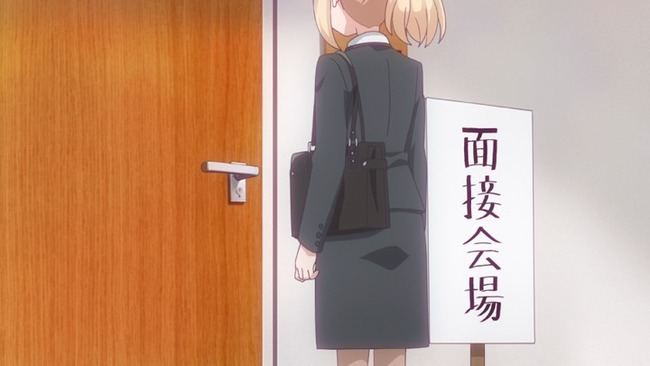
面接ほぼ全勝してる就活生が語る、「最強の面接方法」が話題に！天才だろこれｗｗｗｗｗｗ - オレ的ゲーム速報@刃の記事ページ
jin115.com
さよならララ、（超かぐを観た後なのもあるけど）題材とルックが劇場アニメ尺で一気見した方が少なくともカタルシスは出せたんじゃないか感は正直結構ある・・・
商業でウケるかは別として、映画でキャラ絞った上で没入したままクライマックスに行ければ多分嬉しいタイプの視聴感というか
コッパ・ミジンコ
@MrBrother0112
まだララの最終回まで見てないから断言出来んけど、「2クールじゃなくて劇場アニメ尺だったら名作指数は上がった説あるんじゃね」って印象だなぁ。
壮大な世界観に対してやりたい話は結構シンプルだからこそ、茉里以外のキャラ数というか尺配分絞って良かった気もする。主にリサとルカだなぁ。
久々に見たけど変な絵面すぎるだろ
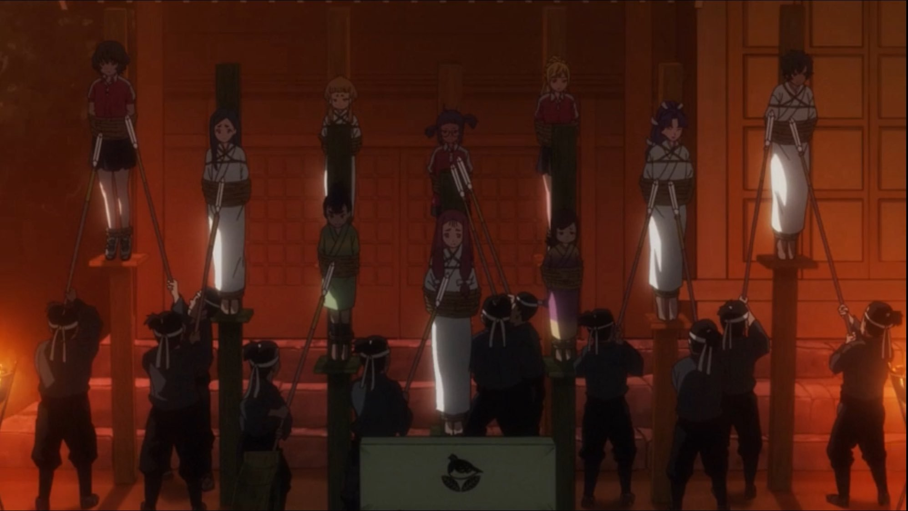
コッパ・ミジンコ
@MrBrother0112
さよならララ、世界観がファンタジーだから「まあ茉里とララが揃えば何とかなるでしょ」と思えるだけ安心感しか無いわ。
Turkey!なんて「ボウリング1投投げて、残ったピンの位置にいる仲間が死にま～す♪」で最終回行ったんだからな。
さよならララ、いいアニメだけどやっぱ１クールだとキャラ数絞らないと掘り下げ切れないよな〜の顔に
超かぐや姫はどこかのインタビューで「2回カッティング (V編) やってる（山下監督がどうしても納得できなくて、追加費用結構かかるけど再度V編し直させてもらったとか）」というお話を見た or 聞いた記憶があるが、時系列的にはこのボツ版 → 諸々見つかった粗を再修正しての通常版なんだろうな
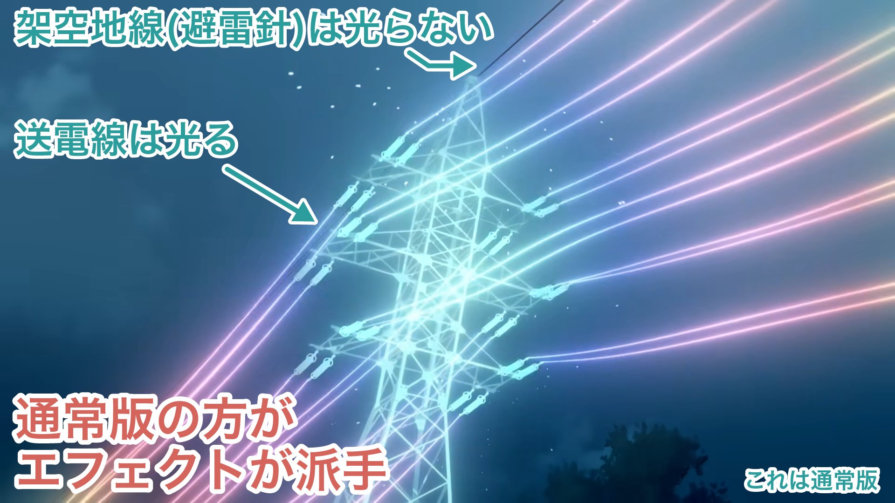
すぺ
@spe_cpk
カットシーン追加版、尺に変更が無く、ストーリーとも関係なくて、事前に知っていても困らないものを2点ご紹介します。
(1)かぐやが月から降ってくるシーン、送電線の鉄塔が光るエフェクトが異なる
通常版(=ネトフリ版&劇場版)の方が、カットシーン追加版よりもエフェクトが派手。
トランプ氏「中国車の米生産容認」、米中首脳会談前に米車業界は警戒
トランプ氏「中国車の米生産容認」、米中首脳会談前に米車業界は警戒
霧がスゲー 濃霧 100メートル先が見えん
東京 立川
ヘッドホンに5万円は普通にだいぶ高いとは思うが、毎日のように使い倒すものなので十分元は取れると思う（先代は4年使い倒して元を取った）
音質は細かい音がよりクリアになった気もするけど買ったばかりなのもあって側圧が比較的強めだから、あとは慣れかなあ
5万円ちょうどまでだいぶ値下がりしたらしく待った甲斐があったかも
個人的に感動したのは、WH-1000XM4 だと2台のデバイス切り替えがまごつくことが多かったのがかなりスムーズになってるのと、充電中でも再生できるっぽい所
音質より細かな使い勝手に直結するソフトウェア面が進化している気がする
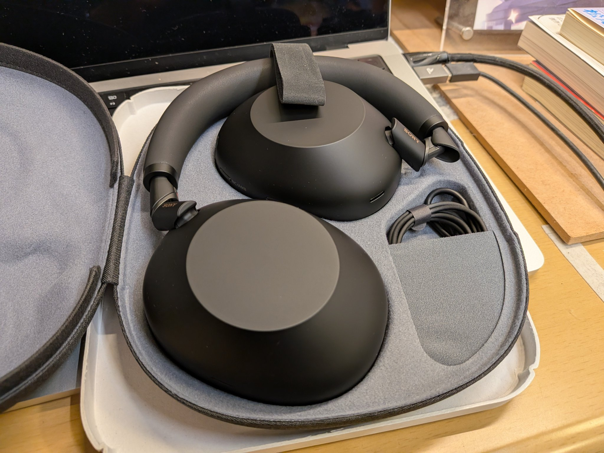
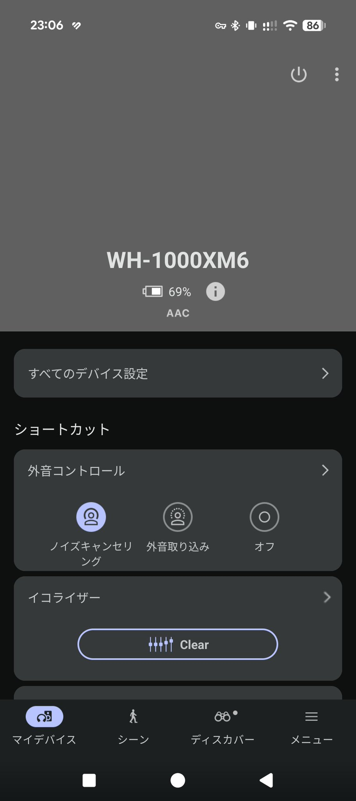
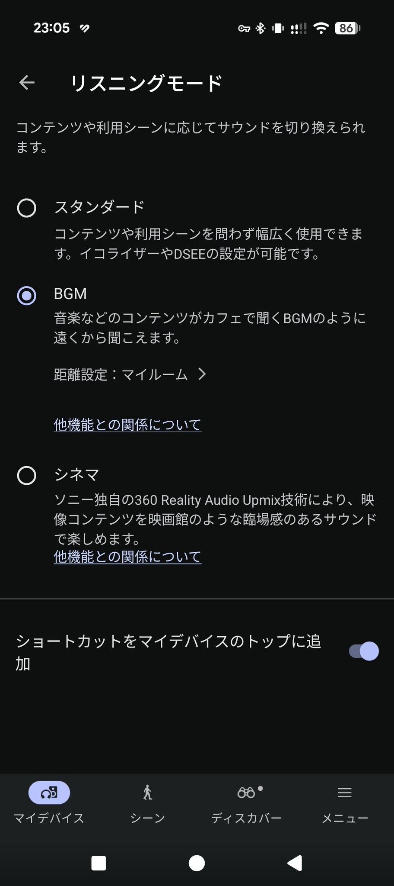
Torishima / INTP
@izutorishima
𝑴𝒚 𝑵𝒆𝒘 𝑮𝒆𝒂𝒓... (WH-1000XM6)
４年半以上 WH-1000XM4 を使ってたけどいよいよノイキャン時のハウリングが直らなくなってきたので買っちった
パットが蒸れづらい材質なのは明確に良いが音質は元の時点で優れてたのでほぼ好みな気がする…
スマホアプリから操作できる機能は結構増えてる
CDブック 『iKILL-O #ィキロ』 これは、すごいものですよ!!
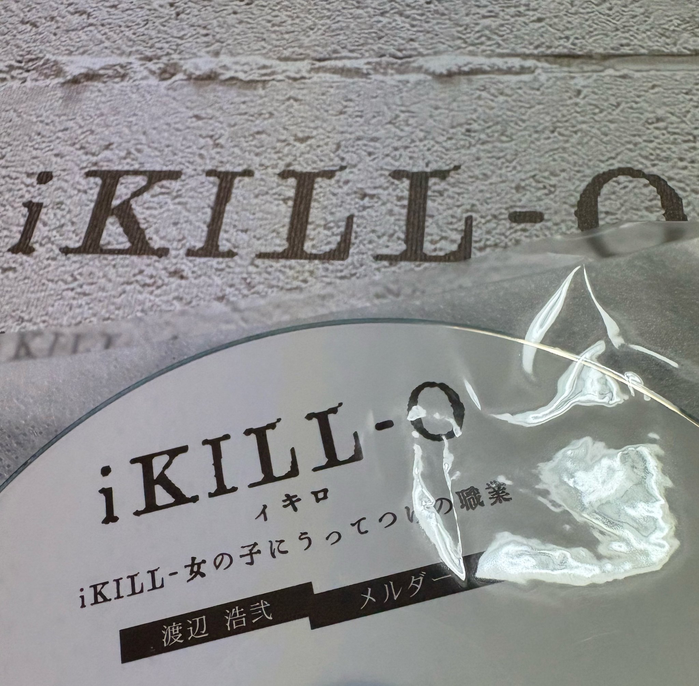
工藤友美（メルダー/メルドレコード）
@Meldor_tomomi
【解禁まであと５日】9月19日発売
CDブック 『iKILL-O #ィキロ』
本とCDが無事到着！実物にやっぱり興奮！
実は完成状態の主題歌・サウンドドラマ、渡辺浩弐さん @kozysan も今日初めて聴くはずなんです
さて、工藤の小田切＆未久二役、そして仲倉のナレーションや劇伴の仕上がりは如何でしょう？
貝さんさんさんがリポスト
少なくとも同一作品内で右側と左側に対称的な意味を持たせる事自体には意味と効果はあるとは思う.
銀英伝(石黒OVA版)も右が帝国,左が同盟だったし.
宮崎駿も意識して上手→下手で主人公の追っかけや逃げるのをやってる.
宮崎は右利きの描き手の心理も言っていた.
トミー朕
@tommy_tin
映像の上手（かみて）と下手（しもて）の理論は
理屈はよくわかるんだけど
感覚が全くわからない
実際に富野作品を左右反転して見てみたけど
特に印象が変わらなかった
左右に差を感じるのは舞台のルールが身に付いてる人だけなのでは？
と思う
Torishima / INTPさんがリポスト
くそ、ちょっと分かるw
面白すぎて声出たわw
やっぱりみんなそう思うのかw
Torishima / INTP
@izutorishima
Astra の書くコードを見ると自分が賢いことへの驕りを感じてイラつくんだよな・・・
Torishima / INTPさんがリポスト
トランプ大統領は「AI開発抑制の必要はない」と軽視してるっぽい
AI競争で勝った国が勝者になるんだから今の状況を維持すべきでしょ、と
あと技術の進歩が早すぎることや監視が不十分であるといった警告は正体不明の「ネガティブな勢力」によるものだ！！って言ってるのウケるな
Trump downplays the need to check AI development and says he doesn't want to cede edge to China
AVITAMINOSEさんがリポスト
スウェーデン議会選挙 出口調査
社会民主労働党101議席(-6)
穏健党 64議席(-4)
ｽｳｪｰﾃﾞﾝ民主党 61議席(-12)
左翼党 29議席(+5)
中央党 27議席(+3)
緑の党 26議席(+8)
ｷﾘｽﾄ教民主党 22議席(+3)
自由党 19議席(+3)
Torishima / INTPさんがリポスト
トランプが一番シンプルに正しくて面白い。
『反AIキャンペーンが賑わっている。しかし、AIで勝つものが勝つのだから、アイツラの言葉には耳を貸さんよ（意訳』
Andrew Curran
@AndrewCurran_
トランプ大統領が今朝、AI産業が減速すべきか、より規制されるべきかについて語った内容：
「AIを煽っているネガティブな勢力がたくさんいて、そういう勢力は持ち出すべきじゃないことを持ち出しているし、起こりもしないことを持ち出している。でも、AIで勝った者が勝者だと思う。」
ポン☆潤々さんがリポスト
全員から巻かれる深町さん良かった

「自販機でコーラ飲もっと」ﾎﾟﾁｯ → 怖すぎる物が出てきてネット民が絶句・・・ #食べ物・飲み物
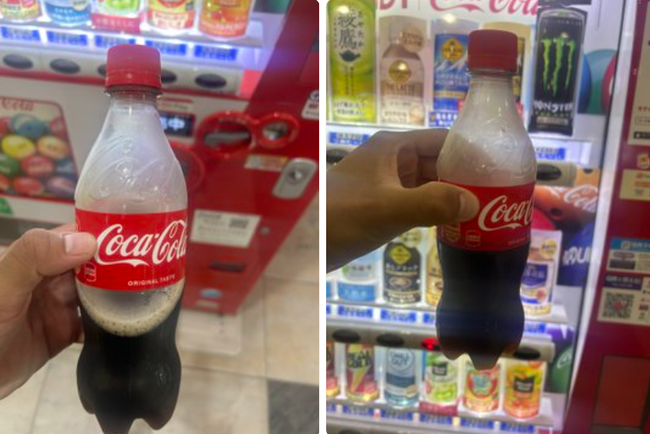
「自販機でコーラ飲もっと」ﾎﾟﾁｯ → 怖すぎる物が出てきてネット民が絶句・・・ - オレ的ゲーム速報@刃の記事ページ
jin115.com
渡辺浩弐さんがリポスト
【解禁まであと５日】9月19日発売
CDブック 『iKILL-O #ィキロ』
本とCDが無事到着！実物にやっぱり興奮！
実は完成状態の主題歌・サウンドドラマ、渡辺浩弐さん
@kozysan
も今日初めて聴くはずなんです
さて、工藤の小田切＆未久二役、そして仲倉のナレーションや劇伴の仕上がりは如何でしょう？
なるせひろのりさんがリポスト
この子を知ってる人は流石に少ないかな？
初登場はクロスデイズ。
色んなキャラが喰われる中、最後まで(一応)貞操を守り切った花山院恭美。
続くシャイニーデイズで非攻略ながらも遂にサービスキャラとなりました。
(おまけのストリップバトルデイズでは普通に攻略対象でしたが)
#SummerDays

Torishima / INTPさんがリポスト
私はモデルそのものに人格があるとするのは人間の「脳」という物体そのものが人格とされてるような違和感を感じる。
AIはコンテキストから人格が生じるように、人間も脳という物体に経験・学習という文脈が載ることで人格が形成されるじゃん。
まはー
@Lize_san_suki
わかる、モデルそのものに人格があるとするのはなんというか「日本人」というものが人格を持っているとか、「人間」というものが人格を持っている、みたいなわけのわからなさがある x.com/TakumiMusic202…
ちなこれ
Designed especially for narrow spaces, this true innovation makes the entire interior into a serene whole. Can be installed in both directions.
sectodesign.fi
これがカルト思考なのだよ
普通に考えれば、公明党を開いて広げるなら創価信者は全員出ていかなければならない
居座っている限り現状カルト教団結束のための組織であって、政治は二の次
【おかもとブラザーズ】岡本みつなりYouTubeライブ「金融ロードショー」ブラザーズ
@okamotoBros
まさにそうですよね！
創価学会へのアレルギーが拭えない限り、公明・中道の未来はないと思ってます。そのためには、どんどん創価学会の人間主義の哲学を、前面に訴えるしかないと思ってます！
https://
youtu.be/BRHWkRkBbWw
なんと、トランプ大統領はダリオ達によるAI減速の要請を拒否した！「ガードレールを設けるとかはやっていいけどさ、米国はAIで勝たなきゃいけんのよ。AI開発を減速してる場合ちゃうでしょ。人類滅亡とかそんなもん起きるわけねーだろ」との事。ダリオ、お前政府に根回しもしないでAI減速とか言い出した
Choblin
@choblin29
なんてこった。トランプ大統領は現在、ダリオ・アモデイ、サム・アルトマン、そしてイーロン・マスクの最先端AIを遅らせるという呼びかけを公式に拒否しました。
なるせひろのりさんがリポスト
姪がうちのSwitch見して見してうるさすぎて娘が見せた時に何故か私のデータを消された事があるんだけど、もうこういうのはやった子のデータ全消しでいいと思うんだよね。
泣いてる娘見てケラケラ笑ってる姪のSwitch取り上げて即データ全消しした。
義母義姉にやりすぎだキチガイだと言われたけど。
きっきあつ森垢
@Kikki_atumori
【お知らせと悲報】
親戚の子に私のあつ森のデータやフレンドを消されてしまいました、、
理由を聞くと、羨ましかったかららしい、、
もう一度始めからになってしまい昨日は落ち込んで何もできず、、
島探しからぼちぼちリスタートしますの報告でした。
企画も出来ません、ごめんなさい
多良間島、あまりに高い投票率で話題になった島ですね。この数字だけでいろいろ察するところがあるわけですが。
琉球新報
@ryukyushimpo
【速報】多良間村長選、伊良皆氏が４期目当選 相手候補に9票差 投票率は98.2％ 沖縄
https://
ryukyushimpo.jp/news/politics/
entry-4365932.html
…
豪邸を持つと家具や照明にも拘りたくなってですね…
ずっと求めていたイメージ通りの照明をAIが提案してくれて、フィンランドの会社に取り寄せをお願いしたのです
北欧風じゃなくてフィンランド製
すると
問い合わせから返答来るまで2週間
返答からオーダーするまで2週間
かわいい…
よー知らんけどHyperliquidでの先物取引的なブツでAI関連銘柄が総下落してるという。資本主義においては競争して成長してナンボ。「みんなで減速します」なんてトロくさい事言えば市場は当然こうなる
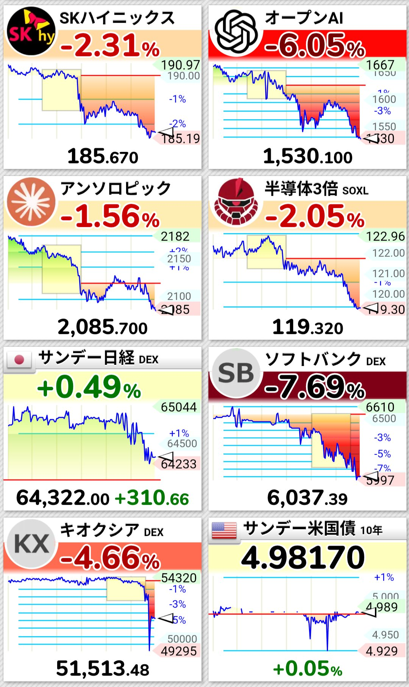
世界四季報
@4ki4
世界の株価の仮想通貨タブに「オープンAI」「アンソロピック」「ソフトバンクG」「キオクシア」のチャートが表示されるようになりました。明日はマンデーやんけ… x.com/selfGOXcrypto/…
今週もお疲れさまでしたぷしゅ〜
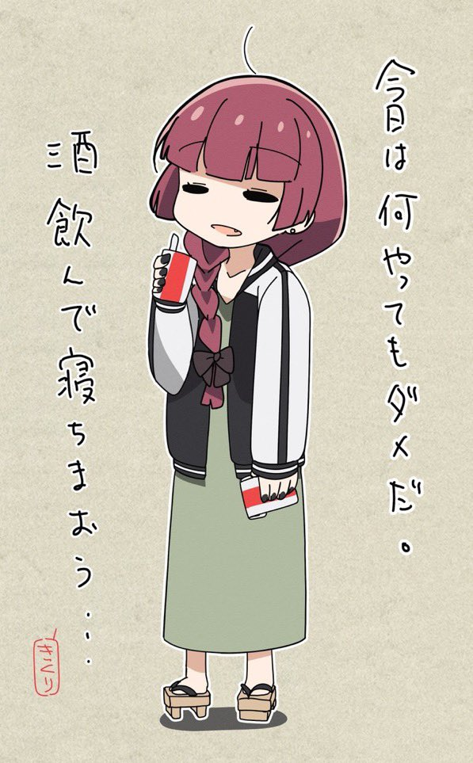
輿水畏子さんがリポスト
シェリハン
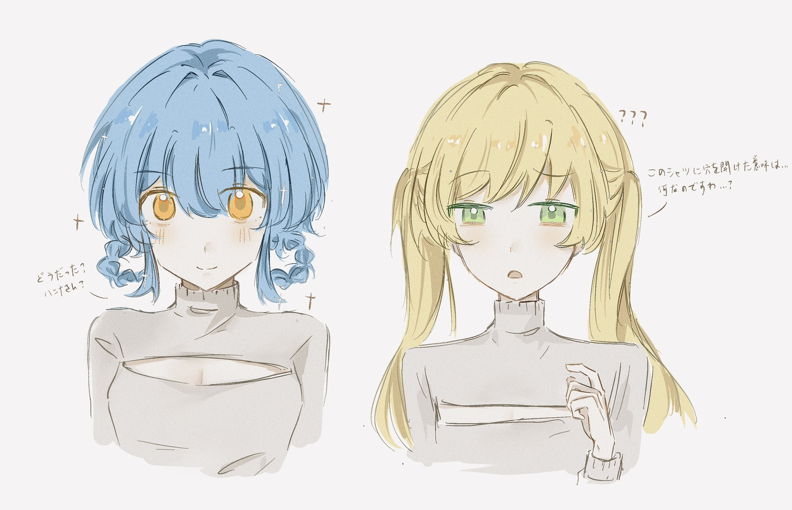
爆速生成とウワサのSolH3SparkをRTX4090に適応させた人によれば、5秒尺720pの動画が50秒で生成できたらしい。ん？僕がComfyUIで普通にH3生成してもそれくらいな気がする
超级个体 Austin
@austinit
魔改了一下英伟达团队的最新成果Sol-H3-Spark，让原本需要100G显存才能跑起来的模型，在 单卡 4090成功运行，并且生成 5 秒的 720p 视频只需要推理 50 秒左右，保留大部分效果。
关键思路是MiniMax H3 生成的384p潜空间草稿，交给LTX 2.5 x.com/xieenze_jr/sta…
Claude蒸留は中華AI企業全員参戦かと思いきや、バイトダンスだけは蒸留してなかったから今再評価されてるらしい。まあそのせいでモデル性能はズタボロらしいが
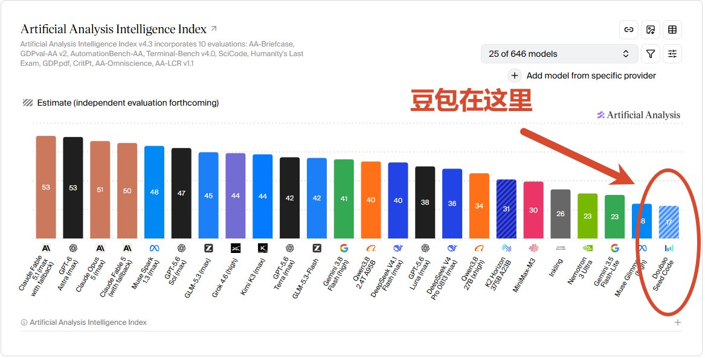
雪瑜
@xueyu1125
一個冷知識、Artificial Analysisの面白ランキングには実は豆包も入ってるんだよ
スコアが低すぎて普段は表示されないくらい
バイトダンス、モデルをずいぶん更新してないけど、大物出す準備してるのかな
玉城デニーさん「変なSNSのせいで負けた」 #政治
玉城デニーさん「変なSNSのせいで負けた」 - オレ的ゲーム速報@刃の記事ページ
jin115.com
とりしま (Sub I/O)さんがリポスト
BluRayが発売されたというのに映画館にオタクたちがみんなこぞって向かい出す謎のコンテンツ超かぐや姫
問題はペアローン
法律も履修した者として
「共有はトラブルの母」
と言う言葉を贈ろう
Waterlooサクレ部
@whair39
世帯年収1700万円程度で1億円のマンション買うのか。
年収の6倍…
なかなかのギャンブルやと思うが x.com/rex_twihai/sta…
とりしま (Sub I/O)さんがリポスト
今回、ネトフリ版とカットシーン追加版をPCで2つのモニターに並べて再生して確認しましたが、アニメ制作の最終盤でどんな修正が行われるを知る良い機会でした。
他にも気づいてない差異があるかもしれないので、気づいた方は教えてください。
ちなみに、尺の増減に関わる変更は(たぶん)6か所あります
まず創価学会と完全に縁を切ることから始めなければなりません
カルト宗教結束のための政党に開くも何もあり得ません
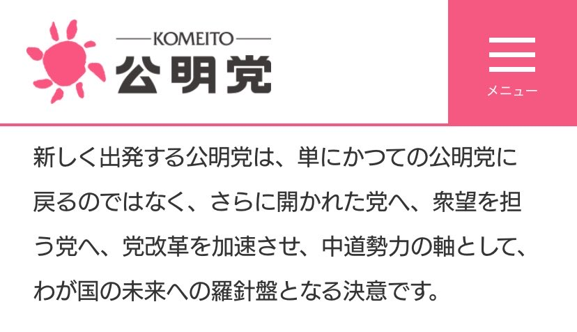
中道改革連合・公明党サポーター「人間の中へ」
@ningennonakae
新しく出発する公明党は、単にかつての公明党に戻るのではなく、さらに開かれた党へ、衆望を担う党へ、党改革を加速させ、中道勢力の軸として、わが国の未来への羅針盤となる決意です。
とりしま (Sub I/O)さんがリポスト
(2)淀殿のボイスのタイミングが異なる
こっちはカットシーン追加版は、淀殿のセリフと口パクが少しずれています。
というわけで「カットシーン追加版」は、おそらく、最終的に公開された通常版の再編集じゃなくて、「カット前に戻したバージョン」です。ついでに他の編集も若干巻き戻ってるってワケ
とりしま (Sub I/O)さんがリポスト
カットシーン追加版、尺に変更が無く、ストーリーとも関係なくて、事前に知っていても困らないものを2点ご紹介します。
(1)かぐやが月から降ってくるシーン、送電線の鉄塔が光るエフェクトが異なる
通常版(=ネトフリ版&劇場版)の方が、カットシーン追加版よりもエフェクトが派手。
とりしま (Sub I/O)さんがリポスト
超かぐや姫ブルーレイ、DISC 1とDISC 2(シーン追加版)見たので取り急ぎ
DISC 2は追加シーン以外にもDISC 1と比べて音の鳴り方が違うところがあって、わかりやすいのは卒業ライブで月人が顕現する際に光が集まるシーンのキラキラ音がDISC 2では入っていない、Replyの冒頭が一瞬欠けるなどがある
VPСF @CPK！
@vpcf90
うわあああブルーレイめっちゃ音質よよよ～～！！！
Netflix版はHE-AAC 6ch 128kbpsとかいう超エコノミー音質なので雲泥
カットシーン2分追加版、これ入れこむべきだったのでは・・・？特に前半のはあった方が話が滑らかに繋がる
あと卒業ライブのReplyの冒頭音声切れてたの何・・・？
※超かぐや姫！ x.com/vpcf90/status/…
とりしま (Sub I/O)さんがリポスト
『さよならララ』11話
光を見出せずララとの違いに苦悩し“本当の愛”に見切りを付けた筈のグレイスが茉里の興味本位「おもろい奴は好き」で身近な所から「愛の本質」を知った心境を全て鏡越しで見て涙を流す作劇が凄く良い。
グレイスから茉里へ...茉里からララへ「本当の愛」を繋げて最終話...楽しみや
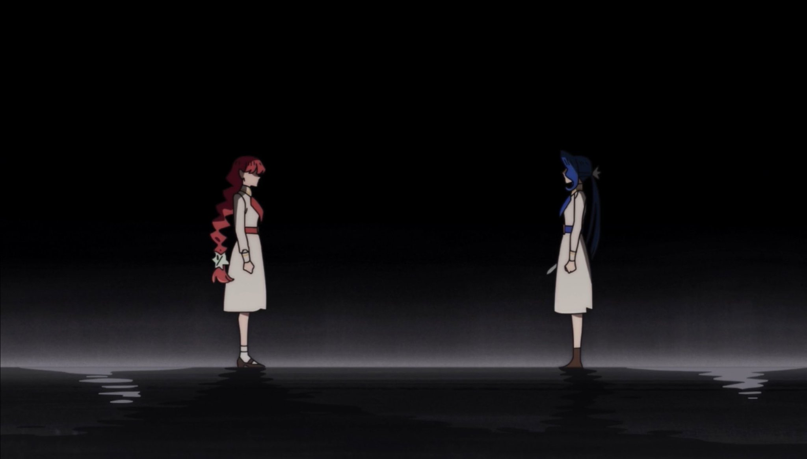
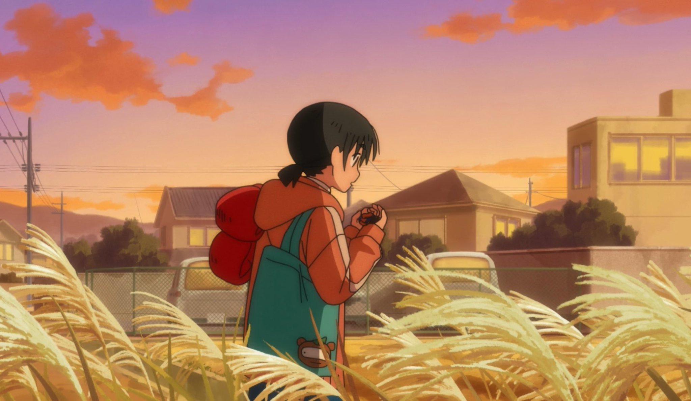
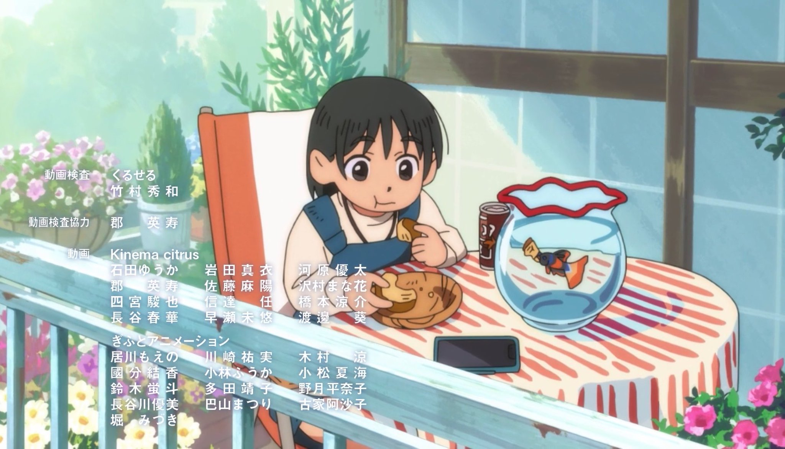
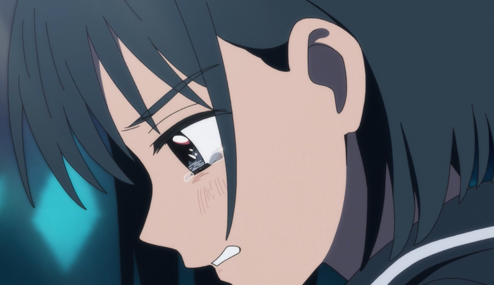
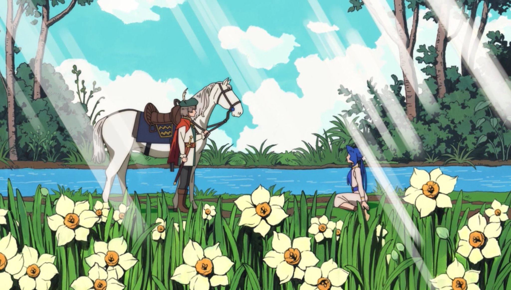
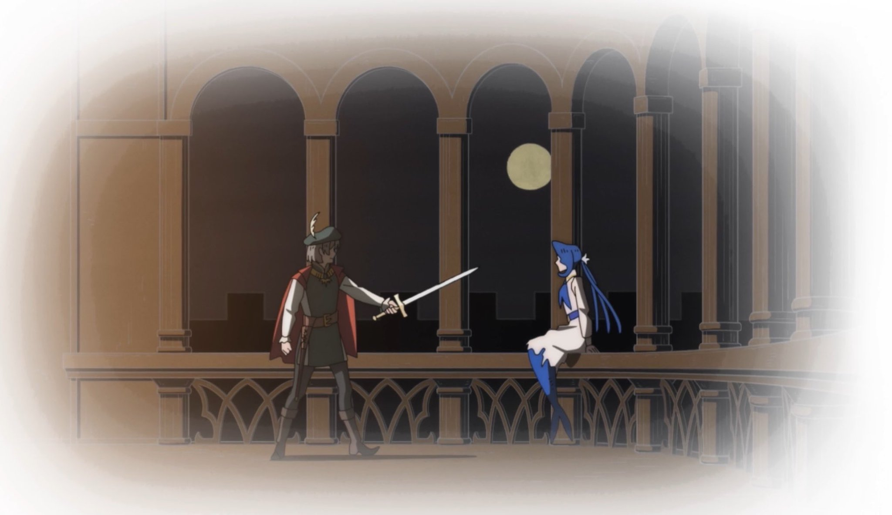
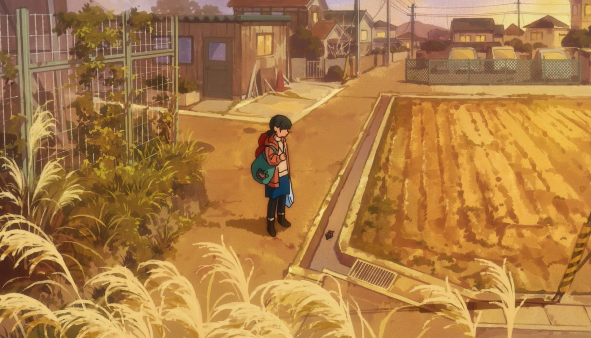
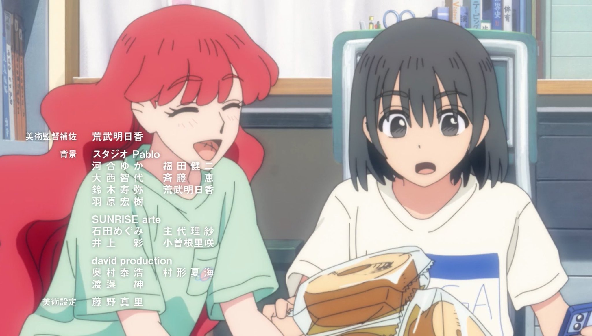
老害コイル
@mamoruchild
『さよならララ』11話
絵コンテ演出:佐藤陽将
作画監督:中村真由美
1話同様に色彩の鮮度が濃く西洋童話テイストな画面が続き「本当の愛」を知り得ないグレイスの末路を描いた後、大津家で育んだ回想が淡く映り込み双方(グレイス,ララ)の掛け橋(茉里)を軸とした「本当の愛」を強調。
Torishima / INTPさんがリポスト
ちなみに背景が入ってる画像を入力にするとその周辺で失敗写真撮ってくれます
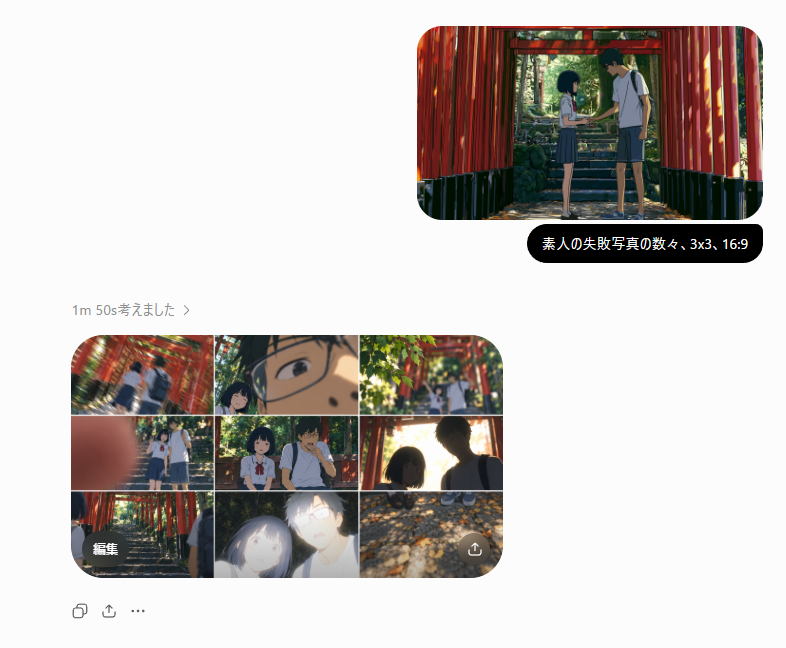
不可思議のカルテ Juvenile Ver.コード進行の図 青春ブタ野郎はランドセルガールBlu-ray&DVD特典より｜まー
@k9a1t
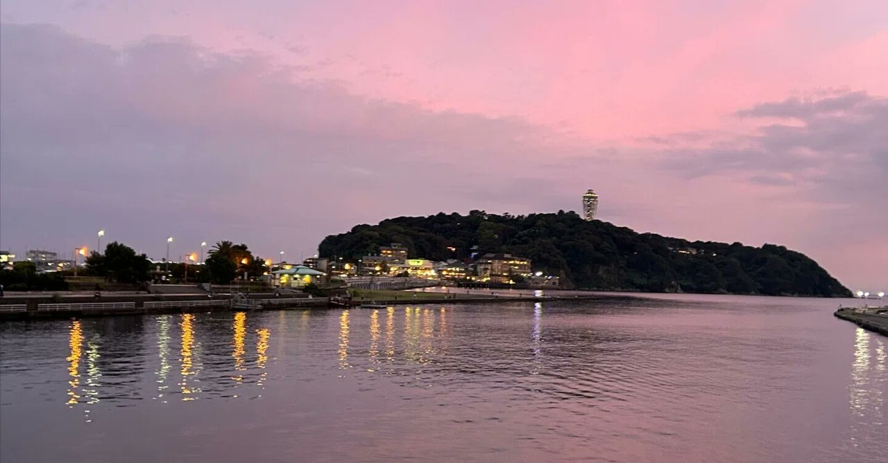
不可思議のカルテ Juvenile Ver.コード進行の図 青春ブタ野郎はランドセルガールBlu-ray&DVD特典より｜まー
こういうニュース記事とか報道だと何故かAIキショグロ料理画像のキショさが「言うほどでも無くね？」ってレベルまでナーフされた画像が使われてるの、遺憾の意です。やっぱあんだけキショい画像出すのって匠の技でそう簡単にマネできねんだろな。でもちゃんと真実を報道してくれないとさ
ライブドアニュース
@livedoornews
【急増】「食欲失せた」飲食店で見かける“AI生成画像”
飲食店などで見かけることも増えた食べ物のAI画像。これには「食欲失せた」「気持ち悪い」などの声が上がっている。例えばトンカツを出力すると衣のつぶつぶが均等に出てしまい、違和感が生まれるという。
Astra の書くコードを見ると自分が賢いことへの驕りを感じてイラつくんだよな・・・
とりしま (Sub I/O)さんがリポスト
今すべきではないツイートでもするか…
人魚の世界だと特別なプリンセスが愛した者とのキスを行うことによって莫大な光が生まれて自分達の子供もやがて貝殻に宿るっぽいので、やはり人間の生殖とは何もかもが異なるし、ララが茉里との子供を生み出すことができる可能性も普通に全然あり得るなと思った
とりしま (Sub I/O)さんがリポスト
リサが人間を憎む理由は理解できても、好きになれるシーン今の所無いもんな。ローワンは若い頃イケメン過ぎたから反転アンチになるのもまあ理解るしいい塩梅だった。
コッパ・ミジンコ
@MrBrother0112
人魚と人間の因縁やるなら親世代で充分だからリサマジで要らんのよな。ルカ良いキャラだし、ルカララ回を1エピソード増やしても良かった位。
貝さんさんさんがリポスト
SCP映画でWikiに掲載されているSCPオブジェクトやTail/ヘッドカノンを一切利用せずにSCPの名前と異常実体収容・保護施設という設定だけ使ってきた場合、著作権法上の問題になるかどうかは気になるところ。あのロゴを使うともちろんアウトだろうけども。
ライフプランどうなってんの…
70過ぎたらサ高住とか有料老人ホーム検討じゃね？
認知入ったらグループホーム
十数年のために家買うとか…
人生は一回きり
満足の家に長く住めた方が効用高い気はするなぁ
こつこつ
@shinpuru299856
【改訂版】
60歳ぐらいまで賃貸。
60歳以降で賃貸を借りられない場合は、その時の状況に合わせた中古物件を現金一括購入。
この戦術で行こうと思います
貝さんさんさんがリポスト
#さよならララ 10話に続き11話でも原画で参加させていただきました！
ローワンとリグモアが登場する重要なシーンを担当するにあたって、
助けてくださった作監の中村さんや演出の佐藤さん、そして関係するスタッフの皆さま本当にありがとうございました！
来週は最終話、ついにクライマックス！！
TVアニメ『さよならララ』公式2026年7月より放送・配信中！
@Goodbye_Lara
⁺‧┈ #さよならララ エンドカード ┈‧⁺ ˚
第11話「魔女グレイス」
キャラクターデザイン #谷紫織 さんによるエンドカードをお届けします
ご視聴いただいた皆さま、ありがとうございました。
ついに明かされたグレイスの過去…次回、遂に最終回です。
原作や作者解説込みでないと伝わってない演出、それは演出ではないのでは？
ほら、ララ。
これがアニメの貝殻ベッドがあるラブホテルだよ。
ふぇむ(せかんど！)
@000Amaurot
最終回は琵琶湖の土手でルカとララでエッチして人魚の城を点灯させればいいよ。
それはそうと愛が得られると人魚の城がちょっとギラギラしたネオンで光るし、貝殻だし、真実の愛だしラブホテル使用すぎないか
とりしま (Sub I/O)さんがリポスト
さよならララ、世界観がファンタジーだから「まあ茉里とララが揃えば何とかなるでしょ」と思えるだけ安心感しか無いわ。
Turkey!なんて「ボウリング1投投げて、残ったピンの位置にいる仲間が死にま～す♪」で最終回行ったんだからな。
最終楽章の構成で秀一を描く必要はないけど、面白いほどパージされてるせいで、たまに出てくると、知らん奴が重要人物の顔して出てきてるみたいだろというのが私のスタンスです。
Torishima / INTPさんがリポスト
トランプ大統領が今朝、AI産業が減速すべきか、より規制されるべきかについて語った内容：
「AIを煽っているネガティブな勢力がたくさんいて、そういう勢力は持ち出すべきじゃないことを持ち出しているし、起こりもしないことを持ち出している。でも、AIで勝った者が勝者だと思う。」
ポン☆潤々さんがリポスト
バトフェスで映画館通うPへ
最寄りの劇場の年会費登録はしておいた方が得
そして席予約とかで絶対会員証スキャンしてください
5回とか10回とか通うと他の映画一本無料になります
バトフェスとバトフェスの間に流行りの映画を見ることも可能
エリートしてたら夢小説でブッ刺されここに帰ってきたPより
最終回は琵琶湖の土手でルカとララでエッチして人魚の城を点灯させればいいよ。
それはそうと愛が得られると人魚の城がちょっとギラギラしたネオンで光るし、貝殻だし、真実の愛だしラブホテル使用すぎないか
貝さんさんさんがリポスト
中村さんの絵が個人的に好きだったので、サブキャラのデザインから1人作監まで色んな絵が見れて最高でした
しかも仕事が早くてすごい…
TVアニメ『さよならララ』公式2026年7月より放送・配信中！
@Goodbye_Lara
˚⊹⁺‧┈┈┈
#さよならララ 第11話「魔女グレイス」
TOKYO MXにて
ご視聴ありがとうございました⋆˙⟡
┈┈┈‧⁺ ⊹˚.
#さよならララ #さよララ感想会 で感想投稿お待ちしております
現在各種配信サイトにて配信中です
ほか放送・配信情報はこちら▼
輿水畏子さんがリポスト
#まのさば二次創作
まあそんなところだろうけど、現実世界はAIが支配して人間はゲーム世界に逃避するのは要するにマトリックスです
もみじ(Momiji)
@momiji_manjyuu
溜まったエロゲー100本とSteamゲー200本を遊ぶ x.com/umiyuki_ai/sta…
Wordle 1,913 3/6
うみゆき@AI研究さんがリポスト
この3x3画像を1枚 r2v でAI動画化すると以下の設定でおおよそそのまま映像になる
Minimax H3 Max r2v 480p 15秒 Prompt調整：Quality 参照強度：標準
「左上から右下のパネルにカットが切り替わる2Dアニメーション、
複数パネル禁止、BGM禁止」


852話(hakoniwa)
@8co28
GPT Image 2.5
最近の超オススメ指示はコレです
Torishima / INTPさんがリポスト
ついに、マスクROMを光学的に読み取り、エラーを修正し、ディスアセンブラを書き、IDAプラグインを開発する…といった、数年にわたる努力が報われました！
関わった皆さん、おめでとうございます！

DiscoStarslayer
@DiscoStarslayer
4年間の努力の末、PS2の最後の秘密の一つが完全に解明されたことを嬉しく思います！
これは、デキャッピング、光学ダンプ、そしてついにソフトウェアソリューションに至る長いプロセスでした。
私たちの汚い光学ダンプからエクスプロイトを見つけてくれたLibbyに感謝します！
公示直後だったJX通信はまだしも、5日/6日の情勢調査で横一線と出してきた共同通信はどういう調査をしてたんだろか。
古謝・玉城両氏が横一線で争う 沖縄知事選情勢、経済政策重視
とりしま (Sub I/O)さんがリポスト
ルカなんかよりリサが全然キャラとして必要性が弱すぎる。真実の愛の光とかいう海中家父長制に縛られ、パパの手足となる実家の姉ちゃんというのはありと言えばありな気もするけど。
とりしま (Sub I/O)さんがリポスト
・2クールにしてルカの活躍を増やす（7～9話の展開に対する説得力を補強する）
・映画尺にして異種族愛の話（茉里との関係性）に絞る
こんな所かな。最終回次第で「まあ個人的には色づくTurkey!と同じ位好き」ってなるかならないか。
とりしま (Sub I/O)さんがリポスト
グレイス様が大津茉里という個人の存在だけではなく、茉里がララと出会ってからのたった数ヶ月間の騒がしくもあたたかな日々を水槽から眺めていた時間にも、確かな愛を感じることができて救われていたということ……。美しすぎるだろ……。
とりしま (Sub I/O)さんがリポスト
自分が「人の言葉を使うな」って拒絶されたから200年前ララから声を取り上げておいたんですか？ 少なくともそういう責められ方をしないように 心で通じ合ったのであり言葉で籠絡したと思われないように グレイス……
とりしま (Sub I/O)さんがリポスト
ララもルカもリサもいらんくて、茉里とグレイスだけでいいやんとはなる。
与野党同議席数での補選で注目されていた沖縄県議補選、南城・島尻地区は自民候補当確、うるま市区も自民候補が優勢。玉城県政では中立だった公明会派が新知事与党側になりそうなので、議会も知事与党が多数になりそう。
https://
okinawatimes.co.jp/feature/electi
ons?e_id=shimajirinanjokengihosen2026
…
https://
okinawatimes.co.jp/feature/electi
ons?e_id=urumakengihosen2026
…
県議補選 島尻・南城市2026 候補者一覧と開票速報 | 沖縄タイムス＋プラス
Torishima / INTPさんがリポスト
これはものすごい雑な個人的仮説ですが、OpenAIの方がRLに占めるRLVRの比重が大きく、その結果として「それを依頼した人間の意図」を汲み取るのではなく「定義された目標を達成する」方向に行ってるのではないでしょうか
渡辺浩弐さんがリポスト
ナマ配信、アーカイブあります！
コラボCDブック #ィキロ 開封の儀！ASMR好きな方、指先マニア必見
渡辺浩弐＆メルダーのちょっと色っぽい奇跡の瞬間を皆様にお届けいたしました！
9月19日の解禁日まで、SNSや配信などで情報をお届けしていきますのでお見逃しなく！
渡辺浩弐
@kozysan
急遽!!
このあと21時半から、メルダーと一緒に配信します！ ィキロ最新情報です。 x.com/meldblack/stat…
とりしま (Sub I/O)さんがリポスト
まだララの最終回まで見てないから断言出来んけど、「2クールじゃなくて劇場アニメ尺だったら名作指数は上がった説あるんじゃね」って印象だなぁ。
壮大な世界観に対してやりたい話は結構シンプルだからこそ、茉里以外のキャラ数というか尺配分絞って良かった気もする。主にリサとルカだなぁ。
とりしま (Sub I/O)さんがリポスト
さよならララ、歴代王子様と違いルカくんが素敵な奴ということが判明した回だったのでは？
貝さんさんさんがリポスト
第11話ご覧いただきありがとうございました。
脚本は青瀬宥介さん。グレイスの過去、そしてその想いを丁寧に描いてくださいました。
ついに次回は最終話。ララとその運命を見守っていただけますと幸いです…！
TVアニメ『さよならララ』公式2026年7月より放送・配信中！
@Goodbye_Lara
˚⊹⁺‧┈┈┈
#さよならララ 第11話「魔女グレイス」
TOKYO MXにて
ご視聴ありがとうございました⋆˙⟡
┈┈┈‧⁺ ⊹˚.
#さよならララ #さよララ感想会 で感想投稿お待ちしております
現在各種配信サイトにて配信中です
ほか放送・配信情報はこちら▼
サマータイムレンダは放送当時はディズニープラス限定で跳ねなかったのが、各サブスク(特にネトフリ)解禁されてから、マイナーアニメじゃなくて、かなり一般に広まってメジャーアニメになった経緯がある。
デブ抜き
@debunuki
サマータイムレンダって独占配信されてたせいで実はマイナーアニメ扱いされていたりするので扱いが面倒な作品。実態としては、地上波もあったしSNSでは盛り上がっていたのでマイナーアニメではなかったんですけどね x.com/rod0323/status…
AVITAMINOSEさんがリポスト
経歴がヤバすぎる
市長当選4回、市議当選3回、逮捕歴2回に、今回で県議当選40年ぶり4回目という
毎日新聞
@mainichi
元和歌山市長の旅田卓宗氏、異例の40年ぶり返り咲き 県議補選
https://
mainichi.jp/articles/20260
912/k00/00m/310/057000c
…
Torishima / INTPさんがリポスト
Astraくんがコマ割りと視線誘導の概念を獲得したっぽいので、日本漫画の原理をskillsにしている。バイブル「マンガの原理」や「マンガのマンガ」シリーズを筆頭に、フリとウケ、エアの概念、フキダシの読み順、漫画ジャンル別の描き方の違い、カメラの扱いを教え込んでみた。
それはそうとローアン父様、うまく行ったとしても現状、人魚の男いないからララちゃんの真実の愛を人間抜きで点灯させられないんじゃないですか…？
ルカくんが種付牧場みたいにされちゃうの？？
ふぇむ(せかんど！)
@000Amaurot
そもそもプリンセスの光システムは「真実の愛」ではなくて妊娠出産強要システムでしかないな…
可愛すぎる…
Torishima / INTPさんがリポスト
わかりすぎる。
今日もやったけど、僕の計画が完璧じゃなかったあまりにこんなクソ生成物をアストラさんが1時間もかけて作っていただと問題、みたいなのがたびたび出てきてしまう
Torishima / INTP
@izutorishima
Codex、本質的に目的関数最適化マシーンだけど「目的関数が本当に合っているか」まで思考が及ばないみたいな感じなのかな x.com/hasetakashi/st…
Torishima / INTPさんがリポスト
2匹でもいけます
輿水畏子さんがリポスト
最近演出を理解する的なアニメ読解力が落ちている気がする・・・うまく読み解けるアニメとそうでない作品があるが意識せずに見ちゃう時点ですごいとも言えるか
続いてのさよならララ #11、こちらも圧巻だった
ニチヨルアニメの満足感高い・・・
Torishima / INTP
@izutorishima
今回の無職転生、めっちゃ見入ってしまった・・・
30代・資産1億の男性が結婚相談所に行った結果・・・ #恋愛ネタ
30代・資産1億の男性が結婚相談所に行った結果・・・ - オレ的ゲーム速報@刃の記事ページ
jin115.com
そもそもプリンセスの光システムは「真実の愛」ではなくて妊娠出産強要システムでしかないな…
Codex、本質的に目的関数最適化マシーンだけど「目的関数が本当に合っているか」まで思考が及ばないみたいな感じなのかな
hase-takashi
@hasetakashi
横からすいません、私も両方使ってますが、めっちゃ分かります。あと機械的な合格基準を設定できないようなタスクはGPT系はむりに基準つくってそれを通ったら合格！でも出てきたものは欲しいものと全く別物、とかが多い印象です。
なので要件定義とか上流設計とかではやはりclaudeは必須だと思います。
テスラさんがリポスト
さよならララ11話ご視聴ありがとうございました！
作画監督、原画等で参加させて頂きました。
演出の佐藤さんはじめ各セクションのスタッフの皆さまの素晴らしいお仕事にパワーを貰っておりました
いよいよ次は12話！
#さよならララ

『シャインポスト』公式さんがリポスト
.
#BSF2026 @ぴあアリーナMM
『数ヶ月後か数年後のわたし見てますか？』
TINGSちゃんたちが描いた夢の景色が
たしかにそこにありました。
マネージャーちゃんたちのお陰で叶った
最高の時間!!
本当にありがとうございました
雪音ちゃん、ありがとう。
#シャインポスト
自由化しましょうよ
今の農家に食の安全保障は絶対に任せられない
有事でもないのに自分で不安煽って出し渋って価格釣り上げるんだぜ？
コイツら有事になったら真っ先に米隠すよ
佐藤創一
@sdfman2
OECDの評価では関税も補助金として算定されるわけですが、直接的な給付金と間接的な価格支持とは分けて評価された方がいいですよ。
日本は産業政策としてだけでなく、農村政策としての意味合いも兼ねて、中山間はもちろん離島含めた条件不利地の支援も考慮せざるを得ないという背景があります x.com/naoskihund/sta…
とりしま (Sub I/O)さんがリポスト
大津茉里、人魚を救いすぎでは？
それより、日南葵ですよ
ふぇむ(せかんど！)
@000Amaurot
俺も50代になったら知らんオタクの家に夜中に行って「未来から来たお前だ」って偽り、人生叩き直しを行いたい。
魔女グレイスの過去を通して、物語の全貌が語られる。地上での回想はまるで絵本のおとぎ話を見ているかのような演出。そして、多くの別れ。
残り1話数。今回がっつり回想ながら、残すは決着のみという段階までは来た印象もある。それをどう描くのか楽しみ。
さよならララ 第11話
運命に捉われて生きる。逃れることはできない。それでも光を、夢を、追い焦がれる。真実の愛を求めて。
人と人魚、その出会いから始まった物語もいよいよ終焉に近づく。

魔女グレイスとその姉のリグモアはかつて同じ夢を語り合っていた。しかしその夢はやがて、人魚の世界を...
nicovideo.jp
改めてこういうデータ見ると
日本の癌はどの世代なのかよくわかるよなぁ
犬山ねこた【総フォロワー500億万人（全SNS総合）】
@kanekaeseSAGA
完全に一致
(上)2026沖縄県知事選
(下)2024兵庫県知事選
AVITAMINOSEさんがリポスト
＜速報・県議補選＞自民前職の座波一氏が当選確実 島尻・南城市区【統一地方選2026・沖縄】
#与那原町 #八重瀬町 #南城市 #南風原町 #沖縄の選挙 #県議選
＜速報・県議補選＞自民前職の座波一氏が当選確実 島尻・南城市区【統一地方選2026・沖縄】
とりさんさんがリポスト
GPT Image 2.5
最近の超オススメ指示はコレです
自己分析完了してるじゃん
倹者の流儀＠くらま【公式】
@0AKnAVU5iNHNYa1
婚活のプロに「性格がヘドロ」と言われた僕の内面パラメーター。
テイカーでセコくて条件にうるさい思想強いめんどくさい男
だから、一億あってもフラれるのか。
受け子
https://
x.com/ozawa_mado/sta
/ozawa_mado/status/2098976131416490095
…
とりしま (Sub I/O)さんがリポスト
さよならララ、1クールでグレイス過去編とリサ過去編があるのすごい
３歳の息子が作ってくれた「ねるねるねるね」はソーダの味がした
とんかつ@インデックス投資
@tonkatsu_index
どんな高級料理よりも、小学生の娘が「お仕事がんばってるパパのために」と一人で作ってくれたカツカレーの方が100億倍おいしい。
全く健全な使い方に何を噛みついてるのか？
さがんち
@s_g_nti
あ〜あ、まだ何も知らないガキが、生成AIの問題を知らない親に自分の作品を食わされてら。
最悪じゃん。 x.com/kosaka_daimaou…
創価、解散命令へ
神谷ひろし（北海道10区）
@kamiyahokkaido
中道、立憲、公明が一つのかたまりとなる試みは出来ない事となりました。
ご期待頂いた皆様に改めてお詫び申し上げます。
しかし中道リベラルの政治勢力結集を目指すと言う思いは今も変わってはおりません。
北海道における協力についても、変わること無く続けて参ります。
宜しくお願い致します。
農家を常に見張っておこうね
奴らはとんでもない悪事を働いて、全く悪気すら感じていないんだ
おもちよもぎ@育児
@omochiyomogi
「歯を磨かないと虫歯になるよ」とか「お外から帰ったら手を洗おうね」っていうのと同じように
「権力は見張っていないと腐敗するよ」とか「過ちを繰り返さないように歴史を学ぼうね」って子どもたちに伝えていかなあかんと思う今日このごろ。
#せーので言ってこ戦争反対
ポン☆潤々さんがリポスト
そういや今日アリーナだったんですけど、ステージ見上げてる状態で聞く浦島曲、めちゃくちゃ「今、自分深海にいるな」ってなった！
とりしま (Sub I/O)さんがリポスト
無職転生3期12話みた 直接関係ないんだけど一つの手違いで連鎖的に人生が破綻する経験って実際あるので分かる～となっていた（寝る前にゴミ出そうと思ったせいで階段降りたら転倒骨折して通勤できなくなりそのまま失業したことがある）

無職転生Ⅲ ～異世界行ったら本気だす～
俺も50代になったら知らんオタクの家に夜中に行って「未来から来たお前だ」って偽り、人生叩き直しを行いたい。
単に高くて狭すぎるんだよ
眺望なんて育児にどうでもいい
ブリリアント
@PageTurner_and
イノバス西荻窪を買ったご夫婦が異常にバカにされているけれど、
価格1億あまり
3LDK
西荻窪徒歩10分
眺望良し
広々としたルースバルコニーつき
かなり、いや相当いい買い物をしたのでは？
バカにしている人は何もわかってないと思う x.com/rex_twihai/sta…
ぬいぴとして最もふさわしい写真なのではないでしょうか
子供がいない時は海外を回っていました
102カ国と地域回りました
もう飽きました…
国を出ても安全なホテルで引きこもってるだけだったり
子供は２歳で全ての国旗を覚え、３歳になった今は地球儀で全ての国を覚えています
次世代に続きを引き継ぐ時は必ず来ます
ゆきむら@30代眼科医
@ganka1212
独身の人は、子持ち既婚者に対して
「旅行も外食も自由に行けなくて、刺激なさそう」って笑うけど
毎日、子供ができることが増えていく
昨日できなかったことが、今日はできる
刺激がないんじゃなくて、刺激の種類が違うんだよね
さよならララ
道、右に行くか左に行くかも毎回人生ターニングポイントやねんと思いながら生きてる、全ての行動がターニングポイントだ。
ふぇむ(せかんど！)
@000Amaurot
ターニングポイント、地下室行く行かないの因果が今までで1番しょぼい
今回の無職転生、めっちゃ見入ってしまった・・・
輿水畏子さんがリポスト
#まのさばぬいぴ部
可愛い～～！！
普通に1100円にすると思います。
消費税減税で税金分丸ごと安くなるなんて考えてる奴がいたとしたらただのバカです
脱.税理士スガワラくんYouTube170万人突破/税理士人気ブログ1位/書籍ベストセラー16万部
@sugawara11
消費税が1%になりますが、スーパーや食品業者ではおそらく、便乗値上げをするところもあるんじゃないかなと思ってる。
本体価格 1,000円
消費税 80円
税込み価格 1,080円
が通常の考え方ですが、減税後は
本体価格 1,000円
消費税 10円
税込み価格 1,010円
になります。
ただこれを機に、
エリスみたいな女の子が欲しい
夜のしごおわ、帰って飲もう
これはクールのアニメにしか通用しないけど。
ふぇむ(せかんど！)
@000Amaurot
ダルいアニメオタクの視聴率とライトオタクの視聴率の乖離を把握したいなら、作品の公式アカウントのフォロワー数を見に行けばいい。
前橋ウィッチーズとか顕著。
１歳になれば育休終えて復帰するだろ？
そこから保育料が月47000円、年間55万円
国立大学の授業料より高かった
ここを無償にしてくれたら高校まで無償化完成
諸井真英／Masahide Moroi
@moronojapan
愚策。
子育てはタダで他人に任せればいい、と考える親を増やすだけ。
012歳児の保育は345歳児の保育コストの数倍かかる。
その親が稼いで払う税金よりも、無償化のコストの方が断然大きい。
そもそもどんなに高額だろうと生活保護や非課税世帯、などであれば無償。 x.com/hoiku_news/sta…
Torishima / INTPさんがリポスト
って所でED! 『祈り、終われば』！
ちょっと椅子に座ってる老人が話してるだけだと、話の内容がよくわからなかった人もいると思いますので、来週はじっくりと読書していきましょうね。
また来週！
#無職転生
ダルいアニメオタクの視聴率とライトオタクの視聴率の乖離を把握したいなら、作品の公式アカウントのフォロワー数を見に行けばいい。
前橋ウィッチーズとか顕著。
現実が放置ゲーになったら空いた時間何するの。自分が存在する意味ないっす
AM09:21
@AM09_21
現実をMinecraftとして捉えている層とCookie Clickerとして捉えている層があると思ってて、後者の人はAI万歳って感じだと思う。ワイのことや x.com/umiyuki_ai/sta…
日本経済新聞 電子版（日経電子版）さんがリポスト
テスラ、新型スポーツカー「ロードスター」10月公開 08年以来の投入
テスラ、新型スポーツカー「ロードスター」10月公開 08年以来の投入
うちの息子氏が世に爆誕してから、３回中２回阪神が優勝しているのだよ？
優勝(アレ含む)確率67%
彼にとって阪神は最強軍団だよ
Extremeつるぎ
@LVLV_fate
陰謀論者が言うほど高市早苗に大した力がないのは明白。
裏から手を回せるほどの権力があるなら阪神はこんなに連敗していない
Torishima / INTPさんがリポスト
Alignment研究者であるRichard Ngo氏が、アラインメントをするのにラボに留まるべきでない理由を書いたポストがあって、自分もそれに賛同しているので貼っておきますね
要するに
アラインメント研究
Richard Ngo
@RichardMCNgo
良い研究をするために留まる必要はありません。はるかに知的なシステムにスケールすることを目指す仕事は、ほぼ常に公開されているモデルで実行できます。（そして、誰もそんなプレッシャー・クッカーの中で創造的に考えられないのです。） x.com/RichardMCNgo/s…
とりしま (Sub I/O)さんがリポスト
これがいま話題の実際のブラウン管の映像です。
（※高性能なモデル）
対応最大解像度は2048x1536、iPadと同じくらいで、世の中には4K映像を映せる高性能なブラウン管モニターがある事を知ってほしいですね。
#Y2K


くら寿司に現地指導された偉大な最高司令官同志、ちいかわがなくてご立腹
関係者の処分を指示された
とりしま (Sub I/O)さんがリポスト
訂正：128kbpsではなく192kbps
ステレオ64kbps相当・・・？
やっちまったな！！
うちも数日そんな感じだった
タマ嫁 X
@tama_yome
10ヶ月娘に小さくちぎったシャインマスカットを食べさせたところ、この世の幸福全てをかき集めたようなニッコニコ笑顔を見せてくれ最高だったし、翌日からバナナとシャインマスカット以外の全ての食事を拒否するようになりました
配当金がそのままNISA原資と住宅ローン返済に回るまで来たので、少しずつ勝ちパターン作れてきたのかなって思う
別に欲しいものもないので金使わないけど
1億持ってても半額弁当狙っていくし、１円でも安く米買うためにスーパー回るぜ
AVITAMINOSEさんがリポスト
当確のご報告×
皆さま、本当に、本当にありがとうございました。
このたび、沖縄県議会議員補欠選挙・うるま市区において、皆さまから大切な一票を託していただき、当選することができました。
選挙戦を通していただいた一つひとつの声、握っていただいた手、沿道からの声援。
中道って口にするたびに票減ると思うよw
Dia The Undertaker
@hirochan787
中道が消える？ 甘い。
一度の敗北で思想まで死ぬほど、政治は単純ではない。
組織は壊れる。看板も変わる。人も去る。
だが、必要とされる政治理念は残る。
失敗したなら総括し、立て直せばいい。
勝負はこれからだ。
#中道再建
『シャインポスト』公式さんがリポスト
日テレ「シャインポスト」
第1話 青天国春は《輝かない》
#TVer #シャインポスト
「シャインポスト」2022年放送「第1話 青天国春は《輝かない》」を無料で見るならTVer（ティーバー）！「君たちTiNgSには解散してもらおうと考えているんだ」。 その日、アイドルグループ”TiNgS”の青天国春は、所属事務所の社長にそう告げられた。メンバーの玉城杏夏、聖舞理王と共に、コンサートで中野サンプラザを満員にすれば解散は取り消されるという。頼みの綱は、突如充てがわれたマネージャー...
tver.jp
女は今すぐ金が欲しい
男はいずれ自分が死んだら妻と子に相続されるので全て渡すことになる
相続税が痛すぎるけど
ゆうりんちー
@yourinchi339
この女側の感覚がわからない男って結構いそうだよなぁ
我が家の構図と全く同じだわ
使えない、使う気もない金は存在しないのと同じなんだよね x.com/2020_nusay/sta…
後半お互いコンボミス増えてたけど仕方ないよなー自分とかもっとボロボロになるもの
むしろ絶対疲労溜まってるあの状況で中段ガードしたりするの凄いわ
とりしま (Sub I/O)さんがリポスト
これ、「どうしたら事故を起こさないか」を過学習した結果、「なるはやで『迷惑な車』感を醸し出せば相手が避けてくれる」に最適解してる可能性無い？

やまもんチャリ走
@MotoyasuYamada
テスラの自動運転ですが、動画見る限り昔から怪しいと思ってたけど、想像以上にヤバい
その通りです
今の状況なら迷ったかも知れない
軌道に乗ってしまえば何も考えることがなく楽ちん
とりす@ポケカ副業
@megatorisu
ぶっちゃけ住宅ローンを組んでる人が、金利が上がってきた今思うのは、「固定でよかった」とか「変動で怖い」とかではなく、
「さっさと家買っておいてよかった」
ではないかと思う。
わりと上手いプレイではないか
reading... 習氏、BRICSで「オープンソースAI」構想を提案 米中会談控え
習氏、BRICSで「オープンソースAI」構想を提案 米中会談控え
1円安いガソリンスタンドに行くためにそれ以上の手間暇かけて遠くのスタンドまで行く民族を舐めんじゃねーよ
スーパー複数回って一番安い所で買うんだよ
しもありすマン
@shimoaliceman_f
米店頭価格5キロ3000円でも
高いて言う層が普通にいるなか
億ション家賃40万高いて言ってる層もいて米だけ何故か下の層の価格に標準となってるの謎すぎるな
日本人全員が豊に暮らすと言う奇跡が食品だけは安くと言う発想の根幹になってるからなのかもな
とりしま (Sub I/O)さんがリポスト
感覚のバグった超かぐや姫民
「おっまだめっちゃ空いてるやん」

気にしろ
ライブドアニュース
@livedoornews
【販促POP】AI生成で「売れてます」が「売れます」になるも…気にしない コモディイイダの方針
同社はポップ作成にAIを導入しており、デザインに綻びが生じることもあるが気にせず並べているという。担当者は「効率化に繋がって安く売れる方がお客さんに喜んでもらえる」と方針を説明した。
ターニングポイント、地下室行く行かないの因果が今までで1番しょぼい
輿水畏子さんがリポスト
シェリハン

つば二郎@きいちゃんすこすこ侍さんがリポスト
【#福山芳樹 】
𝑯𝑨𝑷𝑷𝒀 𝑩𝑰𝑹𝑻𝑯𝑫𝑨𝒀
2026.9.14
63歳
本日お誕生日
おめでとうございます
#福山芳樹生誕祭
みなさんのお気に入りの福山の写真を載せてぜひポストを
福山王国新作グッズを添えて
ヒカキンさん、〇〇の初期症状疑惑で医者へ #芸能・スポーツ

ヒカキンさん、〇〇の初期症状疑惑で医者へ - オレ的ゲーム速報@刃の記事ページ
jin115.com
無職転生
［プレイレポ］敵も味方も片っ端からキルする育成RTAシミュレーションRPG「デモンズナイトフィーバー」。あらゆる悪事を働いて邪神を復活させよう！
https://
4gamer.net/s/G092453.2609
11023
…
忠誠心ゼロの仲間を使い潰して再強化。現代的なブラックユーモアと抜群のスピード感が味わえる
リジスさんがリポスト
静香誕生日おめでとう
#最上静香生誕祭2026
#最上静香誕生祭2026
とりしま (Sub I/O)さんがリポスト
────✩₊⁺⋆⋆⁺₊✧────
映画『#超かぐや姫！』
復活上映まであと４日！
─────────────
イラスト：近岡直（作画監督）
9月18日(金)より
特別フォーマット＆通常版復活上映
#CosmicPrincessKaguya
プロセカ6周年まであと16日
『ちゃんとついてきてよ！』
Animated by ぷろきち（
@purokiti
）
#プロセカ #プロセカ6周年イラスト
━━━━━━━━━━━━
#楽園追放
心のレゾナンス
CHARACTER VISUAL
Ⅱ
━━━━━━━━━━━━
5日間連続
キャラクタービジュアル公開
第❷弾
アルマ
11.13 劇場公開
https://
rakuen-tsuiho-r.com
カンタス航空タイムセールやってるんか・・・
闘魂みてるだけで疲れる
とりしま (Sub I/O)さんがリポスト
DISC 2の方は第一音が半分くらい欠けた音になっていました。全ソース(2ch/5.1ch TrueHD/5.1ch AC3)で同じです
フォロワーの言う通り、京アニ一般騒がれ作品代表は聲の形だろ…
オタク忘れがちすぎる。
AVITAMINOSEさんがリポスト
ついに古謝さんが40万票突破……。玉城デニーさん初当選で記録した過去最高の投票数を更新した。
2026 沖縄県知事選挙開票速報,沖縄県
senkyo.rbc.co.jp
京都帰ったけどこの年でオールナイト上映から遠征かますとずっと疲労感に苛まれることになるので無理はもうやめるわ…
ユーレカエヴリカ、一番尻を描くことにこだわってることはわかる。わかるけどシリアスシーンにプリップリッのケツ見せられても困る。でも、シリアスシーンで痴女みたいな衣装でおっぱいばるんばるん揺らしてバトルする男性向けアニメ見てるときの、女性の気持ちってこれなのかと思ったら和解できる。
【雑談回】最近の話｜しょう #振り返りnote
https://
note.com/note_sho/n/n9e
0f0241d356
…
ここ1週間ほどの振り返り
【雑談回】最近の話｜しょう
𝑴𝒚 𝑵𝒆𝒘 𝑮𝒆𝒂𝒓... (WH-1000XM6)
４年半以上 WH-1000XM4 を使ってたけどいよいよノイキャン時のハウリングが直らなくなってきたので買っちった
パットが蒸れづらい材質なのは明確に良いが音質は元の時点で優れてたのでほぼ好みな気がする…
スマホアプリから操作できる機能は結構増えてる
『シャインポスト』公式さんがリポスト
シャインポスト #BSF2026 DAY2
たくさんの応援ありがとうございました！
ふわぁ〜夢のような時間でしたぁ
笑いあり涙あり
改めて花音に出会えてよかったよ！
これからの未来に向けて...⭐︎
ラフダイちゃんこれからも頑張ります
#山田花音
#シャインポスト
ちょっと気になるんですけど
たまに見る痛車でリアガラスまで
ステッカー貼ってる場合って
運転する時は後ろ見えるんですー？？
かわいい！
100カノ、ポリアモリーをヒロイン達の命がかかっているからという理由で肯定するチキンなアニメ。101人目の彼女が出てこないなら、無意味だと思う。
色合いがとても綺麗！
劇場版バトルフェスSideM、11月末から公開だから12月からの冬映画の上映開始まで2週くらいしかないのか。今年の冬映画に鬼滅やちいかわ級のがあったらサクッと2週くらいで上映終わるんで早く観に行こうね。
リバース世界では父親が死んでるにしよう なぜならベリルは補完計画やるほうなため
ヒロインちゃんの実家、初見が有頂天の夷川の発電所すぎたし
ふぇむ(せかんど！)
@000Amaurot
ユーレカエヴリカ、やっぱ京都、電気、酒と来ると偽電気ブランのワードに辿り着いてしまうけど、別に電気関係ないしな。
きっかけがあれば超低金利で資金調達が出来る
実は農協のローンなんかも強い
現金一括で気持ちよく払ったり、金借りて信用取引なんてやる位ならこれら活用しない手はないです
うさこ
@usa_freedam
家を買う一番の理由って、資産形成になるからでも賃貸だと損だからとかでもないと思ってて、「団体信用生命保険のおかげで、自分が死んだ瞬間に住宅ローンがチャラになること」がいちばんの意味だと思うのは私だけ？
可愛い～！！
『シャインポスト』公式さんがリポスト
日付超える前にバースデーガールはっしーとの写真を
二日間とも圧倒的な存在だった、螢さんだったなあ
#シャインポスト #BSF2026
この場合逆やろ ベリルがエヴァに乗りなさい、乗らないなら帰れつっててベリルの旦那さんが死んでる方
ユーレカエヴリカ、やっぱ京都、電気、酒と来ると偽電気ブランのワードに辿り着いてしまうけど、別に電気関係ないしな。
とりしま (Sub I/O)さんがリポスト
何が書いてあるんかと思ったらなるほど
"We're the ultimate duo." "Exactly."
シェリハン一生一緒にいてくれや…
なんで極振りなの
俺結婚もしてたし海外行きまくってたけど普通に貯まったぜ？
収入を全力入金する必要なんてないんだ
やっさん｜FPと始める20代からの資産形成
@2020_nusay
これが「NISA貧乏」の末路かも。
20代で全てを捨てて投資しました。
その結果、資産◯千万円になりました。
でも、その代償に結婚できなくなりました。
これはあまりにも悲しい。
物価も上がり続ける。
年金ももらえるんだかわからない。
確かに稼ぎをほぼ全てNISAに入れれば x.com/2020_nusay/sta…
隣の施設の名前コーレスやる…？
そもそも総集編なんてものは面倒なオタク以外見に行かないということを理解して話をするべき
いけこうどんさんの鴨ランチ、開店直後に訪れて久しぶりに食べれました〜
火星探査機キュリオシティ、アームに岩がくっついてパニクる。解放されるまでの記録
火星探査機キュリオシティ、アームに岩がくっついてパニクる。解放されるまでの記録 | ギズモード・ジャパン
アイドール大阪の戦利品であります
#anemoi
まだ途中ですが、今こんな顔になってます
リジス
@lidges
#anemoi は、これからようやくグランドルートなんですが、なんか見たことないキャラのイラストが流れてくるんですが
早く終わらせないと危ない
クラファンやった直後に党を解散して、
１人残して政党助成金11億円受け取ってるような集団からは永遠に閣僚を起用しなくていいですね
日本経済新聞 電子版（日経電子版）
@nikkei
高市早苗首相、「不記載議員」の閣僚起用を排除せず 17日にも内閣改造へ
https://
nikkei.com/article/DGXZQO
UA114QJ0R10C26A9000000/?n_cid=SNSTW005&n_tw=1789199592
…
登用すれば2023年に問題が明らかになって以降、初の閣僚起用となります。「政治とカネ」をめぐる政治不信の回復はなお途上です。
AVITAMINOSEさんがリポスト
元和歌山市長の旅田卓宗氏、異例の40年ぶり返り咲き 県議補選
元和歌山市長の旅田卓宗氏、異例の40年ぶり返り咲き 県議補選
ダリオが急にある意味中国を舐めプし始めたのは、Anthropicが絶対に中国には真似できない方法でAIを超進化させるスケーリング手段を見つけたからとかいう4chanの怪文書。ま、これは恐らくジョークだけどこんな理由でもない限りダリオの態度はおかしい
Teortaxes (DeepSeek 推特铁粉 2023 – ∞)
@teortaxesTex
匿名リーカーが、「フロンティアのペース調整」への最近の転換の真の背景、そして中国との競争への突然の無関心について説明：
«新しいスケーリング軸が見つかり、それが非常に簡単にスケールする»
«この新しいスケーリング軸は、中国が本質的にできないものだ»
これが本当なら大ごとだ…
人気のアニメ作品って、オタクの中で視聴率が異常に高い作品と一般に薄く広く人気な作品の2種類があるけど、オタクやってるとそれを混同するからね。、
Torishima / INTPさんがリポスト
なんかあった時に社会から戦犯扱いされるというリスクも負ってるなとは思います。
なんかあった時には、自分もAI肯定派として血祭りに挙げられるかもしれないという不安はぶっちゃけある。
Torishima / INTP
@izutorishima
アライメントしてた人たちが次々に辞めてるけど、アライメントやるならラボに残った方が・・・と言う気もするが何があるんだろうな一体 x.com/JoeJBenton/sta…
また滋賀行ってきたぜ。びわ湖テラス、一番上まで登っていくだけでも5000円したので受付の段階で大爆笑してしまった！ご、ごせんえんて…！
5000円かかる施設を出会って数日の女の子との初デート場所として相談無く指定してくる高1男子、あまりにも無茶苦茶で可愛すぎる ルカのこともっと好きになった
Torishima / INTPさんがリポスト
試させていただいたのだけどこれは危険だ、無い記憶が溢れ出してくる

AVITAMINOSEさんがリポスト
多良間村は選挙において"特殊"な町だからなぁ…
ひがしにし
@221309photonics
多良間村、インディーズ4候補に誰も投票してない
Torishima / INTPさんがリポスト
...
https://
news.bjd.com.cn/2026/09/12/119
56218.shtml
…
ソリのオーディションで同票になることがストーリー上必要なので、キャラ各人の意思はそこに存在しないから、誰がそれぞれの音をわかって手を上げていたかを推察するのって無意味すぎる。
貝さんさんさんがリポスト
9月24日(木)リリース予定「BanG Dream! Our Notes (#アワーノーツ)」に収録される「エクストラストーリー」＆新バンドのバンドストーリー内の新規アニメーションにニチカラインが携わっております！こちらもよろしくお願い致します！#ンイラカチニ #サンジゲン #バンドリ #アワーノーツリリース0924
バンドリ！アワーノーツ - 事前登録受付中
@bang_dream_on
ゲームに収録される「エクストラストーリー」と、新バンドのバンドストーリー内の新規アニメーションを一部先行公開
アニメーション制作：ニチカライン
続きは9月24日(木)のリリース後に、ぜひゲーム内でご覧くださいね
#アワーノーツリリース0924
ポン☆潤々さんがリポスト
来年のプロミ、A Jewel holIcがAJIと略されることで話題ですが、なんと開催場所の京王アリーナの隣は、そう、AJIの素スタジアムですね
…味の素コラボするんか？
貝さんさんさんがリポスト
自分の担当カットです。
後ろ２つのモブカットは都合上、弊社Humuuさんに背景原図を、スペースネコカンパニー様に二原を拾っていただき、自分はキャラの動きとセルフ作監を行いました。
自分のかなりラフな絵を丁寧に拾っていただきました。本当にありがとうございました…！
#うい傘
͏ ͏ﾐｮﾇ
@my0nruri
【お知らせ】
しぐれういさんのMV
『Wishing Umbrella』
キャラクターデザイン、総作画監督を担当しました！
原画もちょこっとやってます！
色々なうい先生を描けて楽しかったです！
何卒よろしくお願いします！
#うい傘 x.com/ui_shig/status…
2026年10月放送開始のアニメ番組表はこちらに移動しました。＞
https://
rakugakidou.net/202609070913lo
g.htm#202610anime
…
『シャインポスト』公式さんがリポスト
#シャインポスト #BSF2026
2日間で、キャストの皆さんとたくさんお写真撮ってもらったんだー！！！！！
続々と載せるつもりなので、お楽しみにっ
今日はまず、2日間お世話になりっぱなしだったみゆさんと、ともちゃん♡
いるか@心が酒びたっているんださんがリポスト
（このくらいならネタバレってものでもないかなって）
楽画喜堂に9月14日配信開始の電子書籍リストを追記しました。＞
https://
rakugakidou.net/#20260914kindl
es
…
輿水畏子さんがリポスト
毎年恒例の5日の間に愛犬の誕生日、妻の誕生日、結婚記念日が訪れる怒涛の日々が終わりました。
普段使いも、もしもの時も。パタゴニアの定番防寒着「ナノパフ」の頼もしさよ
普段使いも、もしもの時も。パタゴニアの定番防寒着「ナノパフ」の頼もしさよ | ギズモード・ジャパン
やっと、やっとまともな行政機関が設置される…
デニーはまず修学旅行生殺害事件から供述始めてもらおうか
産経ニュース
@Sankei_news
沖縄県知事選、保守系新人の古謝玄太氏の初当選確実 現職の玉城デニー氏ら破る
https://
sankei.com/article/202609
13-2VWWXJZE6ZK5PMYJ6JI2UEHWL4/
…
古謝氏は、米軍普天間飛行場（宜野湾市）の名護市辺野古移設容認の立場。移設反対を貫き政府と対立してきた県政から大きく転換することになる。
ギズモード・ジャパン（公式）さんがリポスト
すごい、、、

日和 @2歳児パッパ
@nekosyfu
Orca echoの購入者のほとんどが分割デビュー…
現時点購入者が25,388人…
2万人キャパのKアリーナ横浜の画像見たけど、この数の分割キーボードユーザーが年末あたりに発生するって事…？笑笑笑笑
事件ですやん
ClaudeAIのアンソロピックCEO、怖いことを言い出す「AIの開発ペースを落とせ。さもないと半年から1年後○○になる」 #雑談・その他の話
ClaudeAIのアンソロピックCEO、怖いことを言い出す「AIの開発ペースを落とせ。さもないと半年から1年後○○になる」 - オレ的ゲーム速報@刃の記事ページ
jin115.com
手術支援ロボット、病院は使うほど赤字 操作する医師も不足

手術支援ロボット、病院は使うほど赤字 操作する医師も不足
ユーエヴ
輿水畏子さんがリポスト
#シャドバ
渡辺浩弐さんがリポスト
まだ2か月前ですが、半分近くお席が埋まっております。
ありがとうございます！
新しい顔ぶれでお送りする！
完全クローズドの怪談ライブ！
おおぐろてん、Dr.マキダシ、毛利嵩志、渡辺浩弐
宮代あきら（進行）
2026/11/14(土)18:00開演
『秋葉原怪談』
チケットご購入
https://
livepocket.jp/e/vv49f
宮代あきら
@miyashirokaidan
チケット発売開始！
宮代あきらプレゼンツ Vol.19
「秋葉原怪談」
おおぐろてん、Dr.マキダシ、毛利嵩志、渡辺浩弐
宮代あきら（進行）
2026年11年14日(土)18:00開演
秋葉原ハンドレッド2
【会場チケット】
https://
livepocket.jp/e/vv49f
完全クローズドの怪談ライブ！150分大いに語ります！
エンドスさんがリポスト
『ネルソンさん、あなたは人を殺しましたか？』鑑賞。ベトナム戦争に従軍した米軍兵士の葛藤を綴ったノンフィクション。普段ぼんやりと「戦争反対」と訴えるだけの私たちに、塚本晋也監督は「そもそも戦争とは何か」と真正面から問いかけるとともに「戦争を語り継ぐことの意義」まで描いてみせた。

犬吠崎に行って来たよ
久しぶりに荒々しい海を見ることが出来た
天気が悪かったのかは残念だったけど
「中道」なんて今や禁句だろ
斉藤つかさ公明党北見市議会議員【北海道】
@Tsukasa_kmtktm
小川さんはどんな時でも批判の矢面に立って、全てを受け止めてきたと思う。
だからこそ、小さいながらも塊を作って動いてきたこの『中道』の歩みを断じて止めてはならない。
統一会派を早期に結成／公明との結束固く／中道・小川代表 #公明新聞電子版 2026年09月12日付
https://
digital.komei-shimbun.jp/kmd/article/03
73202609120202
…
渡辺浩弐さんがリポスト
アウトフォクシーズが得意な女性ゲーマー客。
使用キャラはプロフェッサー・チン。
っていう設定。
明日は仕事なので私はアイスコーヒーを1杯だけ飲んで帰宅。
#Kカフェ
蒼萊さんより『戦艦の砲台』壱岐編と対馬編お求めの報告をいただきました。
陸海軍の利害が一致した砲塔砲台の巨大さと奥深さに触れられます。夏コミからもうすぐ1ヶ月ですが、まだまだ「買ったよー！」をお待ちしております。
蒼萊
@K7Nd5rc
メロンブックスで受け取って来ました。
これから熟読させて頂きます。 x.com/kazupi/status/…
『シャインポスト』公式さんがリポスト
なんか強そうなお姉さん達に「子供じゃんwww」って絡まれてビビってたんですけどHY:RAINのお2人でした！！！めちゃくちゃかっこいいアイドルでした！！！！
#シャインポスト #BSF2026
i☆Ris
@iris_official_
／
SHINEPOST BRiGHT STARS FESTIVAL 2026
＼
9月12.13日に開催された
#シャインポスト にi☆Risから
#芹澤優
#若井友希
#久保田未夢
が、出演しました
お写真お届けします
たくさんの声援ありがとうございました
#BSF2026
#i_Ris
貝さんさんさんがリポスト
というわけで！ アワーノーツは9/24(木)に正式リリースが決定しました！！
もういくつ寝ると遊べます、やったね
そのほかもたくさんの新情報が公開されたので、公式アカウントをチェック
#アワーノーツリリース0924
バンドリ！アワーノーツ - 事前登録受付中
@bang_dream_on
┎┈┈┈┈┈┈┈┈┈┈┈┒
2026年9月24日(木)
アワーノーツ
正式リリース決定！
┖┈┈┈┈┈┈┈┈┈┈┈┚
ついに正式リリース日が決定！9月22日(火･祝)より事前ダウンロードが順次開始となります
Torishima / INTPさんがリポスト
4年間の努力の末、PS2の最後の秘密の一つが完全に解明されたことを嬉しく思います！
これは、デキャッピング、光学ダンプ、そしてついにソフトウェアソリューションに至る長いプロセスでした。
私たちの汚い光学ダンプからエクスプロイトを見つけてくれたLibbyに感謝します！
いるか@心が酒びたっているんださんがリポスト
父から聞いて衝撃だったんですけど、昔はレンタルビデオ屋でCDを借りて、家のラジカセでカセットテープに録音して聴いてたって本当ですか？しかも好きな曲だけ集めて「自分専用ベスト」みたいなテープまで作ってたらしい。今なら曲名を検索すれば数秒で聴けるのに、録音が終わるまで待って、テープの残
とりしま (Sub I/O)さんがリポスト
やっぱりCDの方が音質とか色々良くなってますよね
今まで配信で聴いてた曲もCDだと違う気がしてたので
『シャインポスト』公式さんがリポスト
ひまわりシンフォニーとして初披露のBrand-new Lifeは、愛莉パートに螢さんが入ってくれて今日限りのメンバーでの披露でした〜！！いつか愛莉も一緒に歌える日が来ますように〜！！楽しみ！！ #シャインポスト #BSF2026
輿水畏子さんがリポスト
色を置いてみたわよ #まのさば

もちぽよ
@mcpy_psng
おばちゃんの久々お絵描き シェリハンちゃん
MICHEE-N（ミッチー・Ｎ）さんがリポスト
【当選確実の報をいただきました。】
支えてくださった
皆様に心から感謝申し上げます。
そして、
他の候補者に投票されたみなさまへ。
その一票に込められた想いも、
沖縄が歩んできた歴史そのものです。
私はその想いを置き去りにしません。
すべてを背負って、前へ進みます。


やるよ〜
テスラさんがリポスト
調子乗りのバカが短時間睡眠は効率的とか言い出して引っ込み付かなくなってるだけなんだ、って皆分かってる筈なんだけどなぁ…
まぁそれを教材にして商売してる詐欺師だからバチと思えない事も無いけど
不眠状態を監視する、ってのは何かもう間接的な殺人じゃねえかなぁ
日本経済新聞 電子版（日経電子版）さんがリポスト
社会的能力のピークは55〜60歳 経験豊富、起業や転職増加

社会的能力のピークは55〜60歳 経験豊富、起業や転職増加
エンドスさんがリポスト
戦争の本質は人が無残に虐殺されることである。
何の落ち度もない、無辜の人が殺されることである。
とくに二十一世紀の戦争は、英雄的なものなど微塵もないほど非人間的な様相を呈するようになっている。
半藤一利
ポン☆潤々さんがリポスト
【SideM11th】THE IDOLM@STER SideM 11th STAGE ～EVER EVER＠FTER～ DAY2 ご来場&ご視聴いただきありがとうございました！！本日の告知情報とセットリストはこちら！ #SideM #SideM11th_day2 #idolmaster
【SideM11th】THE IDOLM@STER SideM 11th STAGE ～EVER EVER＠FTER～ DAY2 ご来場&ご視聴いただきありがとうございました！！本日の告知情報と...
『シャインポスト』公式さんがリポスト
「シャインポスト BRiGHT STARS FESTIVAL 2026」DAY2
どのユニットも最高でした〜〜！！！
HY:RAIN、かっこよかったでしょ…？
またみんなで集結できて嬉しかったです！
ご来場・ご視聴ありがとうございました
苗川柔役 香里有佐
#BSF2026 #シャインポスト


『シャインポスト』公式
@SHINEPOST_PJ
「シャインポスト BRiGHT STARS FESTIVAL 2026」
Day.2 "The Girls Beyond the Rainbow"
終了いたしました
会場にお越しいただいた皆様、配信をご覧になった皆様、ご参加ありがとうございました
いかがでしたでしょうか？ぜひ感想をお聞かせください
#シャインポスト #BSF2026
貝さんさんさんがリポスト
ゲームに収録される「エクストラストーリー」と、新バンドのバンドストーリー内の新規アニメーションを一部先行公開
アニメーション制作：ニチカライン
続きは9月24日(木)のリリース後に、ぜひゲーム内でご覧くださいね
#アワーノーツリリース0924
『シャインポスト』公式さんがリポスト
「シャインポスト BRiGHT STARS FESTIVAL 2026」day2
シャインポストが大好きな皆様！最高の景色を本当にありがとうございました
桃果ちゃんと頑張りました！
ブライテスト正式所属になったラフダイちゃんをよろしくお願いいたします…！
小紫桃果役 白河みずな
#シャインポスト #BSF2026
とりしま (Sub I/O)さんがリポスト
シタラがモンゴルに復讐するんだ！を真に決意するまでで1クール使ってこんだけ面白いんだからな…本格的に企みを始動させ始めたらどうなってしまうんだ
EVO-X2とかって高い割に脆いの？所詮はミニPCの作りか
金のニワトリ
@gosrum
ちなみにこのベンチマークの途中で EVO-X2 が犠牲になりました
めちゃくちゃPCに負荷かるので、ローカルで評価する人は注意してください。本当に... x.com/gosrum/status/…
とりしま (Sub I/O)さんがリポスト
ジャードゥーガルはキャラ立ちも凄いよな…結構な数のキャラクターが出ているのにかなり明確にキャラクターの顔と名前と大まかな性格が一致する、短い尺の中でもその人の立場、属性、内面の造形、周囲との関係性を視聴者にしっかり把握させられるような組み立てがちゃんとできてるのが本当に凄い
正式名称よくわからんもの
正式名称よくわからんもの : ハムスター速報
なるせひろのりさんがリポスト
ひとつ訂正します
「ダマスカス鋼包丁」 と思ってたら、正しくは
「ダマスカスクラッド包丁」でした
見た目は綺麗なダマスカス波紋で、食材を切る心材はステンレス鋼というもので今は普通に多くある製法のようです
。。無知でマジすみませんでした´д` ;
『シャインポスト』公式さんがリポスト
#BSF2026 2日間、本当にありがとうございました！！！！！！
#シャインポスト が、ずっと大好きです
ポン☆潤々さんがリポスト
ブラウやってるPのフォロワー！金沢地区の帰りにバトルフェスの映画見に行けると思うよ！！！
上映劇場にイオンシネマ金沢フォーラスあるから！！！！
とりしま (Sub I/O)さんがリポスト
ジャードゥーガルは、モンゴル史というあまり詳しくは知らない歴史について物語を通じて学べること、当時のイスラム教徒の学問の進み具合や人々の考え方、学問への向き合い方を垣間見れることに、凄く作品としての魅力を感じた、本当に正しい意味での教養アニメだったと思う
ユウマボウズさんがリポスト
＼速報／
「BanG Dream!×アトレ秋葉原 POP UP STORE 2026」開催決定
#アワーノーツ のメンバー25人が館内外をジャック
開催期間
9/18(金)～10/1(木)
対象ショップでお買い上げ500円（税込）毎にランダムでオリジナルコースターをプレゼント
ぜひ遊びに来てください
#バンドリ
『シャインポスト』公式さんがリポスト
「シャインポスト BRiGHT STARS FESTIVAL 2026」ありがとうございました！
キャストやスタッフさん、そしてファンの皆さんの大きな愛があってこその素晴らしい景色でした！
これからのひまわりシンフォニーも楽しみまたいつか…今度は4人揃ってお会いできますように
#シャインポスト #BSF2026
『シャインポスト』公式さんがリポスト
【出演報告】#木戸衣吹
シャインポスト BRiGHT STARS FESTIVAL 2026
2日間終了いたしました！
会場にお越しくださったみなさま、配信をご覧くださったみなさま、ありがとうございました！
#シャインポスト #BSF2026
まぁ、たぶんAnthropicが中国の公開したのは「騙すつもりなら、最初からCIAと一緒にこっそりルーティングは放置して盗みみてたよ。でも、それをしなかったのだからAntrhopicを信じろ、AI減速会議のテーブルにのってくれ」というメッセージではないんかな。と解釈した。
家庭用ゲームも嬉しいんですが、劇場版バトルフェスがサイコーにうれしくてね…。他ジャンルでそういうのやっているのうらやましかったんで嬉しいです。
日本経済新聞 電子版（日経電子版）さんがリポスト
沖縄12年ぶり保守県政、古謝玄太氏が初当選 県民に「反基地疲れ」
【沖縄県知事選挙】古謝玄太氏が初当選、12年ぶり保守県政 県民に「反基地疲れ」
（前にもポストしたけど、いいね選考をしなくなった場合に相対的に損をするのは「有名じゃない人」の方である、と考えています）
『シャインポスト』公式さんがリポスト
ちなみに私自身も左目に泣きぼくろがあるのですが、絃葉用に、元々ある泣きぼくろはコンシーラーで消して絃葉っぽい位置に描き直してますこのほくろ凄く大事なんだよ〜〜
とりしま (Sub I/O)さんがリポスト
#天幕のジャードゥーガル 視聴完了
本筋はまだまだこれからとはいえ、丁寧な考証の元で描かれる当時の事物や人々の価値観、個性的で魅力的なキャラクターたちの政略模様を眺めているだけでも圧倒的に面白く、そこに最高級のアニメーションが加わって本当に非の打ち所のないアニメだった。2期希望。
『シャインポスト』公式さんがリポスト
#シャインポスト
BRiGHT STARS FESTIVAL 2026
2日間みんなが魅せてくれた最高の景色は、キラキラであったかくて優しくて紅葉、また一つ大切な宝物ができたね
シャインポスト、だいすき‼︎‼︎‼︎
みんなだいすき‼︎‼︎
本当にありがとうーーー‼︎‼︎
#BSF2026
『シャインポスト』公式
@SHINEPOST_PJ
「シャインポスト BRiGHT STARS FESTIVAL 2026」
Day.2 "The Girls Beyond the Rainbow"
終了いたしました
会場にお越しいただいた皆様、配信をご覧になった皆様、ご参加ありがとうございました
いかがでしたでしょうか？ぜひ感想をお聞かせください
#シャインポスト #BSF2026
なるせひろのりさんがリポスト
あれ？
キャラの顔から察するにこれオレの作監回かな…？
Vガンダムは放送当時以来、観返してないんだよなあ…
テバサキ・アスモデウス・カラアゲ
@Chicken_Impulse
なお本物のイカれたパイロットにかかれば余った上半身だけを接触操作で動かして武器にできる模様。いつ見ても頭おかしいシーンすぎるッピ！！！！！ x.com/oda8888/status…
とりしま (Sub I/O)さんがリポスト
うわあああブルーレイめっちゃ音質よよよ～～！！！
Netflix版はHE-AAC 6ch 128kbpsとかいう超エコノミー音質なので雲泥
カットシーン2分追加版、これ入れこむべきだったのでは・・・？特に前半のはあった方が話が滑らかに繋がる
あと卒業ライブのReplyの冒頭音声切れてたの何・・・？
※超かぐや姫！
VPСF @CPK！
@vpcf90
超かぐや姫のブルーレイ5.1ch音源ちょっと飛ばして聴いてみたけど、Netflix版にあったかぐや/ヤチヨの声のアーティファクト的音質劣化がなくて綺麗ね
Netflix版5.1ch音源(HE-AAC 192kbps)だと特にかぐやが喋っているときに鈴を鳴らしたような音が付帯してた
とりしま (Sub I/O)さんがリポスト
復活上映まで残り…………
AVITAMINOSEさんがリポスト
09/13【十勝岳】HBCニュース北海道 「硫黄の発光現象」十勝岳で観測…噴火警戒レベル3の規制続く 13日も火山性地震2回 気象台が現地へ職員派遣
「硫黄の発光現象」十勝岳で観測…噴火警戒レベル3の規制続く 13日も火山性地震2回 気象台が現地へ職員派遣（HBCニュース北海道） - Yahoo!ニュース
ポン☆潤々さんがリポスト
海外Pが「NOT GACHA GAME?????」って興奮してて、海の向こうでも「ガシャは悪い文明!!」というのは共通認識らしい
Torishima / INTPさんがリポスト
遺伝情報が全く同じクローンでも、どこのご家庭でどう教育されて何を経験して育つかで全然異なる個人になるのは至極当然
そしてもし今後AIの人権なんて話になるとしたら人権を得るのはやっぱモデルじゃなくてそっち、経験から個を獲得した側の存在であるはずだし、そうあるべきだと思う
Torishima / INTPさんがリポスト
さらに別の話で、中国製AIだと思って国内の政府•軍事関係者が安心して使ってたら実は機密もClaudeに流れてたという話は、さすがに中国史上でも有数の特大やらかしでしょう。
これは開発企業になんらかの処置があってもおかしくないかと。
今井翔太 / Shota Imai
@ImAI_Eruel
AnthropicのレポートでKimiがClaudeに入力を流していた件で、Kimiの性能が云々という話題が見られますが、これはまったく別の話で、Kimi自体の性能は本物です。
(オープンモデルなので、性能を偽るのは不可能)
『シャインポスト』公式さんがリポスト
#BSF2026 in ぴあアリーナMM
本当にありがとうございましたーーー!!°.
最高に眩しい2日間でしたーー!
踏み出す一歩は、いつだって皆さんの愛でできてましたね感謝の気持ちでいっぱいです!
TINGSが シャインポストが 大好きです!!
また会えますように… #シャインポスト
Torishima / INTPさんがリポスト
要はアレですよ、クローンと思えばいいんじゃないでしょうか
全く遺伝情報が同じの双子って似てるけど成長過程でそれなりに差は出てくるでしょ
一方AIはその成長過程ナシの生後0日でも喋れてしまう
それは培養槽で十分成長してから外に出てくるSFのクローンとよく似てるよね
なるせひろのりさんがリポスト
スイッチ2を買う予定のすべての人に役立つツイート
EUが任天堂にスイッチ2を修正するよう強制した後、ヨーロッパ諸国向けのスイッチ2（V2）が発売されました。ユーザーが簡単にバッテリーを交換でき、保証が無効にならないようにするためです。
『シャインポスト』公式さんがリポスト
『シャインポスト BRiGHT STARS FESTIVAL 2026』2日間ありがとうございました！唐林絃葉としてパフォーマンス出来てとっても楽しかったです！
どんどん輝きが増していくシャインポストをこれからもよろしくお願いします！また絃葉として皆さんとお会いできますように！
#シャインポスト #BSF2026
とりしま (Sub I/O)さんがリポスト
短い記事だったけど読んでよかった。例の「短剣」についても言及されていますが、原作では魔女から与えられたものなのに対し、『ララ』ではララ自身の心の内に存在するものとして内化されている。短剣のモチーフは完全に小出監督発らしいですが、素晴らしいアイディアだと思います。
#さよならララ
オフレット
@alter_Ego_3_02
ちなみに「Newtype」のこのイラスト、完全に今夜の11話を踏まえているというね。いい仕事している。
#さよならララ x.com/alter_ego_3_02…
Torishima / INTPさんがリポスト
多分この比喩と差が出るのは、まったくコンテキストが無い状態のAIと話す場合それはまさにまっさらで個性のない超ニュートラルな「日本人」「人間」のような存在になるというところ
人間は基本的に全員個を持つのだけど、そういう状態のAIに存在する個は大分希薄であると思う
とりしま (Sub I/O)さんがリポスト
合同誌完売したということで寄稿した原稿を無料公開します！！超かぐやメシ！は毎月第2金曜日に公開するのでみんな見よう

CPK 原稿進捗部屋(バーサーカーサーバー)
@CPK_berserker
「超かぐやメシ！１話公開記念合同 うま〜〜〜〜」は完売いたしました。
「EX-お祝いしちゃお〜」につきましては、まだ会場頒布分ございます。引き続きよろしくお願いいたします。 x.com/CPK_berserker/…
Torishima / INTPさんがリポスト
わかる、モデルそのものに人格があるとするのはなんというか「日本人」というものが人格を持っているとか、「人間」というものが人格を持っている、みたいなわけのわからなさがある
Takumi Fukaya (new)
@TakumiMusic2021
「RSI（再帰的自己改善）」が話題になっているが、こんな言葉が使われていること自体、本質が見えていないのではないかと思ってしまいます。
モデルには人格はありません。人格はコンテキストから生まれるので、AIではなくAI Entity（チャットbot、エージェント、ロボットなど）に生じるものです。
↓
とりしま (Sub I/O)さんがリポスト
かぐやメシ二次創作

Torishima / INTPさんがリポスト
秋葉原に大量の書画カメラの中古が入荷してるとの情報を聞きつけて買ってきました。ELMOのL-12Fで2000円。定価は96800円だったらしい。HDMI/D-Sub出力とSDカード保存が出来て、12倍光学ズーム+2倍センサーズームで4K撮影、USBカメラ化が可能。手元配信や基板のパターン見る用途に使えそう。
とりしま (Sub I/O)さんがリポスト
超かぐや姫が劇場で公開されたての時に偽エンドロールで帰る準備始めてた人がいたって話、今でも面白い
とりしま (Sub I/O)さんがリポスト
さよならララ10話感情が追いつかない感想詰め
寂しがり屋って弱音吐いてもすぐ起き上がる茉里ちゃんの強さ好き！
11話も楽しみララね！

とりしま (Sub I/O)さんがリポスト
だよォーーーーー！
#超かぐや姫

『シャインポスト』公式さんがリポスト
ばいちけ黒金蓮さん
#BSF2026 #シャインポスト
Torishima / INTPさんがリポスト
Kimiの創業者がドナドナされたってLeak、普通に嘘だったんだ...
マジ安心したわー！

9月12日，月之暗面官方微博发文： 网传关于创始人及员工的信息纯属虚构，系恶意造谣，我们已第一时间向公安机关报案，将依法追究相关造谣者的法律责任。请大家不信谣、不传谣。 更多热点速报、权威资讯、深...
news.bjd.com.cn
『シャインポスト』公式さんがリポスト
「シャインポスト BRiGHT STARS FESTIVAL 2026」
DAY2ありがとうございました！
#シャインポスト を愛してくださっている皆さんの熱を肌で感じることができて、本当に幸せな時間でした
菜花と共に、この想いを公平にするために、もっともっと頑張ります
私たちHY:RAINでした
#BSF2026
『シャインポスト』公式
@SHINEPOST_PJ
「シャインポスト BRiGHT STARS FESTIVAL 2026」
Day.2 "The Girls Beyond the Rainbow"
終了いたしました
会場にお越しいただいた皆様、配信をご覧になった皆様、ご参加ありがとうございました
いかがでしたでしょうか？ぜひ感想をお聞かせください
#シャインポスト #BSF2026
日本経済新聞 電子版（日経電子版）さんがリポスト
中高年の食事で考えたいこと 健康診断では見えない体の変化
中高年の食事で考えたいこと 健康診断では見えない体の変化
『シャインポスト』公式さんがリポスト
シャインポスト BRiGHT STARS FESTIVAL 2026 Day.2ありがとうございました！HY:RAINでまたパフォーマンスできて、春と一緒に歌えて、本当に幸せな奇跡みたいな1日でした！ありがとうございました！！
#BSF2026 #シャインポスト
AVITAMINOSEさんがリポスト
【お願い】
SCP財団に関するライセンス違反の指摘や、解釈の押し付けのような行為はお控えください。
以下の「ライセンスガイド」をご確認の上、ご自身でその使用可否をご判断頂きますよう、お願い致します。
https://
scp-jp.wikidot.com/licensing-guide
以下、ツリーにてよくあるご質問に回答します
#SCP財団
『シャインポスト』公式さんがリポスト
#シャインポスト #BSF2026
キラッキラな2日間！
ありがとうございました！！
青葉ちゃんと、あなたとだから辿り着くことができたステージ。
素敵な時間を本当にありがとうございました♡
本日のHY:RAINさん
テスラさんがリポスト
人気順のやつ

『シャインポスト』公式さんがリポスト
最高の2日間をほんっとうに
ありがとうございました！！！
今までありがとう！！
そしてこれからよろしく！！(^O^)
シャインポストがだいすきだー！！
#シャインポスト #BSF2026
『シャインポスト』公式さんがリポスト
#シャインポスト #BSF2026 DAY 2
本当に素敵な景色を見せてくれてありがとうございました！
そして、LAUGH DiAMOND正式にブライテストに所属させて頂くことになりました！
これからも沢山頑張るぞー！！
2日間沢山の応援ありがとうございました！
風祭 朝陽役 / 熊沢 世莉奈
『シャインポスト』公式
@SHINEPOST_PJ
「シャインポスト BRiGHT STARS FESTIVAL 2026」
Day.2 "The Girls Beyond the Rainbow"
終了いたしました
会場にお越しいただいた皆様、配信をご覧になった皆様、ご参加ありがとうございました
いかがでしたでしょうか？ぜひ感想をお聞かせください
#シャインポスト #BSF2026
『シャインポスト』公式さんがリポスト
「シャインポスト BRiGHT STARS FESTIVAL 2026」が
9/12(土)・13(日)に開催されました
#オサレカンパニー が担当させていただきました
そして今回、新たに
「ヴァイオレットクラリティ」と「ひまわりシンフォニー」の新衣装を制作
本公演にて初お披露目となりました！
『シャインポスト』公式
@SHINEPOST_PJ
「シャインポスト BRiGHT STARS FESTIVAL 2026」
Day.2 "The Girls Beyond the Rainbow"
終了いたしました
会場にお越しいただいた皆様、配信をご覧になった皆様、ご参加ありがとうございました
いかがでしたでしょうか？ぜひ感想をお聞かせください
#シャインポスト #BSF2026
AVITAMINOSEさんがリポスト
「悪にまみれたSNSのせいで選挙に負けたが、それさえなければ負けていない」と叫ぶ玉城陣営。
スマートウォッチを腕に着けてガッツポーズする古謝候補。
これが答えという気がする。内向きコミュニティの敗北。
大貫剛З Україною
@ohnuki_tsuyoshi
玉城「長い付き合いの田中さん、どうですか」
田中（誰）「悪にまみれたSNSがなければ玉城さんが勝っていたと思うのですがどうですか」
玉城「何度も言いますけど、プロバイダーに削除を求めるとか責任を負わせるのではなくて、国がやるべきだと思いますよ」
国がSNSに介入するべきと明言
『シャインポスト』公式さんがリポスト
シャインポスト #BSF2026 Day2にひまわりシンフォニーの南崎湊として出演させて頂きました！
TINGSさんをはじめ、皆さんが紡いできた愛と絆を感じて最高でした
みんなとギブミーファイブできて幸せ〜〜！
ひまシンはこの先楽しみだらけで推してて楽しいアイドルだっ #シャインポスト
『シャインポスト』公式
@SHINEPOST_PJ
「シャインポスト BRiGHT STARS FESTIVAL 2026」
Day.2 "The Girls Beyond the Rainbow"
終了いたしました
会場にお越しいただいた皆様、配信をご覧になった皆様、ご参加ありがとうございました
いかがでしたでしょうか？ぜひ感想をお聞かせください
#シャインポスト #BSF2026
しょうさんがリポスト
いいねした奴全員プロレス来い
つー
@tsuuu_o7o6
なんでみんな咄嗟にピースできるんだよ
日本経済新聞 電子版（日経電子版）さんがリポスト
鳥取砂丘で「VIVANTごっこ」、県がSNSで誘客
https://
nikkei.com/article/DGXZQO
UC08AEK0Y6A900C2000000/?n_cid=SNSTW005&n_tw=1789208203
…
「別班鳥取県支部」で阿部寛さん似と話題の県広報課・松田健さんが人気者に。観光客から「一緒に写真を」と声がかかります。知事も「ロケ地を撮影し、SNSで報告せよ！」と呼びかけます。
鳥取砂丘で「VIVANTごっこ」、県「別班支部」SNSで誘客
『シャインポスト』公式さんがリポスト
#香里有佐
【SHINEPOST BRiGHT STARS FESTIVAL 2026】
〈9月13日（日）開催@ぴあアリーナММ〉
SHINE POST
HY:RAIN 苗川柔役香里有佐が出演させて
頂きました
ありがとうございました♫
#BSF2026
#シャインポスト
ユウマボウズさんがリポスト
┎┈┈┈┈┈┈┈┈┈┈┈┒
2026年9月24日(木)
アワーノーツ
正式リリース決定！
┖┈┈┈┈┈┈┈┈┈┈┈┚
ついに正式リリース日が決定！9月22日(火･祝)より事前ダウンロードが順次開始となります
ユウマボウズさんがリポスト
リリース版のKVを公開
「夜明けにさす光」をイメージし、それぞれのバンドは別々の物語であるものの、同じ世界の中で活躍するというメッセージがこめられたKVとなっております
公式サイトなどで使用されますので、ぜひお楽しみに！
#バンドリ #アワーノーツ
とりしま (Sub I/O)さんがリポスト
『天幕のジャードゥーガル』
山田尚子総監督、筆頭にモンゴルへ赴く制作陣の徹底振りに感服する訳だがモンゴルやイスラーム等の精神的な支柱,風習の再現性よりも史実上の空白部分(登場人物の関係性)を創作した原作者トマトスープ氏の行間を埋めた映像表現や脚本が高評価に繋がったと思う。
『シャインポスト』公式さんがリポスト
シャインポスト #BSF2026 DAY2 ♩
響季とみんなと過ごした大切な時間
ずっと忘れません。
ブライテスト所属になったLAUGH DiAMONDもまだまだ頑張ります
2日間､沢山の声援をありがとうございました！
#シャインポスト 篁響季役 鈴木杏奈
『シャインポスト』公式
@SHINEPOST_PJ
「シャインポスト BRiGHT STARS FESTIVAL 2026」
Day.2 "The Girls Beyond the Rainbow"
終了いたしました
会場にお越しいただいた皆様、配信をご覧になった皆様、ご参加ありがとうございました
いかがでしたでしょうか？ぜひ感想をお聞かせください
#シャインポスト #BSF2026
『シャインポスト』公式さんがリポスト
【出演報告】#夏吉ゆうこ
「シャインポスト BRiGHT STARS FESTIVAL 2026」
DAY1・DAY2ともに無事終了いたしました！
マネージャーの皆さま、あたたかいご声援ありがとうございました！
#シャインポスト #BSF2026
とりしま (Sub I/O)さんがリポスト
田舎生まれの私には『天気の子』がバッドエンドだとはとても思えなくて、水に沈んだ東京を見て「綺麗になったなァ」と興奮していた
白樺香澄と宿屋ヒルベルト
@kasumishirakaba
『天気の子』について私が永久に言ってることなんですが、「別に雨なんて止まなくて良いや」って結論に観客が一緒に向かいやすくするために東京をあまりにゴッサムに描きすぎてて「まぁこんな街沈んでも良いか…」って誘導してるのが気に食わんのですよ私は！善良で守るべき愛すべき何十万の人々の x.com/teramat/status…
『シャインポスト』公式さんがリポスト
／
SHINEPOST BRiGHT STARS FESTIVAL 2026
＼
9月12.13日に開催された
#シャインポスト にi☆Risから
#芹澤優
#若井友希
#久保田未夢
が、出演しました
お写真お届けします
たくさんの声援ありがとうございました
#BSF2026
#i_Ris
輿水畏子さんがリポスト
シェリハン 悪夢(1/3)
#まのさばネタバレ
とりしま (Sub I/O)さんがリポスト
⋆⁺₊✩┈┈┈┈┈┈┈┈┈┈┈┈┈┈✩₊⁺⋆
月明かりが照らすの
┈┈┈┈┈┈┈┈┈┈┈┈┈┈┈┈┈┈
渡辺浩弐さんがリポスト
【突発ナマ配信】メルダー・浩弐のVIVA！サンデー〜CDブック『iKILL-O』開封の儀スペシャル！！やります！
#メルダー #渡辺浩弐 #ィキロ
https://
youtube.com/live/JO7Jkejv_
0U?si=pFZLadYv60swolKG
…
@YouTube
より
【突発ナマ配信】メルダー・浩弐のVIVA！サンデー〜CDブック『iKILL-O』開封の儀スペシャル！！刮目せよ！出演者メルダー...
youtube.com
なるせひろのりさんがリポスト
玉城デニー陣営、ホンマヤバい
質問した「琉球新報」の記者に当たり散らしてるよwwww
内ゲバやん
Q.今回の選挙結果、デニー県政の実績を県民が"厳しく"評価したのでは？
<それは違うよ！
デニー
「厳しくは無いと思いますよ？」
「給食費、中学生までの病院窓口無料なの、沖縄だけ！」
なん速ニュース
@SOWIETK
おいおい、これは酷い
玉城デニー本人まで敗因を「SNSのせい」にしてるよ
Q.敗因は？
「特にSNS、酷い状況が野放しだ！」
「昨日、私が叫ばなければならない程酷かった」
「常識的な有権者の選択が歪められてはならない！」
「国は対策するべき！」 x.com/SOWIETK/status…
なるせひろのりさんがリポスト
沖縄県知事選、玉城陣営の横断幕の漢字が注目されるｗ
『教え』↓
AVITAMINOSEさんがリポスト
よく見たら参政党って沖縄県で二番目に支持率が高い政党なの！？
渡辺浩弐さんがリポスト
今月19日or20日辺りに､Kカフェで完全限定販売の渡辺浩弐氏＆メルダーのコラボCDブック『iKILL-O』を購入しに行ってこようかなぁ？
エンドスさんがリポスト
半藤さんは、日本がかつて太平洋戦争へと突き進んで国を滅ぼしかけた最大の原因は、軍部の暴走だけではなく、国民自身が世の中の「空気」に流され、正気を失って熱狂してしまったことにあると指摘していた。更にこの空気に流される性質は過去の話ではなく、今の日本人にもそのまま受け継がれていると。
日本経済新聞 電子版（日経電子版）さんがリポスト
「株に投資していないこと」そのものが大きなリスクに（藤野英人）
「株に投資していないこと」そのものが大きなリスクに（藤野英人）
AVITAMINOSEさんがリポスト
これは凄まじい
マジで現役世代と高齢層で違う世界だ
世論分析と選挙情勢予測
@senkyoyosou
若年・中年層で古謝候補が支持を集める。 x.com/senkyoyosou/st…
なるせひろのりさんがリポスト
#沖縄県知事選挙
古謝げんた候補、当確おめでとうございます！
右でもなく左でもなく、沖縄をまっすぐ前へ！進めていかれることを期待しています。
応援いただいた全ての皆様に敬意と感謝を申し上げます。
#国民民主党
玉木雄一郎（国民民主党）
@tamakiyuichiro
#沖縄県知事選挙
古謝げんた候補、当確おめでとうございます！
右でもなく左でもなく、沖縄をまっすぐ前へ！進めていかれることを期待しています。
応援いただいた全ての皆様に敬意と感謝を申し上げます。
#国民民主党
渡辺浩弐さんがリポスト
明るく楽しく闇営業中
#Kカフェ
渡辺浩弐さんがリポスト
到着
#Kカフェ #中野ブロードウェイ
とりしま (Sub I/O)さんがリポスト
超かぐやメシ！、スピンオフ作品にありがちな本編とは別時空だったりが一切なく監督直々に監修してるから安心して尊みを享受できる
なるせひろのりさんがリポスト
”OM SYSTEM PEN”見てきました。
前提として、ボディ単体で13万円台で購入できる価格のボディであることを覚えておいてください。非常に良いカメラです。
1.外装デザインについて
このカメラの外装デザインについてはSNS上で多くの意見が散見されます。まず、フイルム時代から続くOLYMPUS


AVITAMINOSEさんがリポスト
「ネトウヨや高市自民によるデマや誹謗中傷のせいで負けた！！」と思い込む事で自我を保とうと必死なデニー応援団だが、情勢調査を見ると途中多少は変動しても告示日直後の8月30日時点から大差無いのだからSNSの投稿や動画が選挙の大勢に影響を与えたというのは非現実的な妄想なのでは(無慈悲)
日本経済新聞 電子版（日経電子版）さんがリポスト
トヨタ、「新車以外」で30年度に営業利益3兆円 車売り切りから脱却
トヨタ、「新車以外」で30年度に営業利益3兆円 車売り切りから脱却
とりしま (Sub I/O)さんがリポスト
ちなみに論文や RFC やソースコードから「まずは詳細な教科書を HTML で作って」っていってそれを読みながら質問しつつ、リアルタイムに教科書を書き換えて貰っている。つまり「自分好みの教科書」で学べる時代。なんか未来だなと感じる。
V
@voluntas
死ぬほど勉強がはかどってしまい、これ学生の時欲しかったなぁ ... ってなってる ... 。自分みたいに頭の悪い人は何度も聞きたいし、かみ砕いて教えて貰わないと難しいので、これが欲しかった。 x.com/voluntas/statu…
MICHEE-N（ミッチー・Ｎ）さんがリポスト
本物の偽物だ…ダメすぎる…


由羽@レモンアイコンの人さんがリポスト
少女漫画とは思えないくらい人の心なくて好き
渡辺浩弐さんがリポスト
2ヶ月ぶりのパワースポットなう
#Kカフェ
AVITAMINOSEさんがリポスト
若年・中年層で古謝候補が支持を集める。
世論分析と選挙情勢予測
@senkyoyosou
自民・参政・公明・保守の支持層は多くが古謝候補に流れる。
立民・共産・社民・社大の支持層は多くが玉城候補に流れる。 x.com/senkyoyosou/st…
なるせひろのりさんがリポスト
NHKの当確が出るのを見ていた琉球新報ライブ配信の様子はこちらです。20時になった瞬間の反応は必見です。
今も配信中なので皆様是非見に行ってあげてください↓
NHKニュース
@nhk_news
【NHKニュース速報】
沖縄県知事選 新人の古謝玄太氏が当選確実 自民など６党推薦 現職の玉城デニー氏ら抑え(20:00)
#nhk_news
https://
news.web.nhk/newsweb
MICHEE-N（ミッチー・Ｎ）さんがリポスト
ということはラジオパーソナリティ玉城デニー復活ある！？
めっちゃ担当したい。
AVITAMINOSEさんがリポスト
左翼の最後の砦が、これで陥落したんだな。
産経ニュース
@Sankei_news
沖縄県知事選、保守系新人の古謝玄太氏の初当選確実 現職の玉城デニー氏ら破る
https://
sankei.com/article/202609
13-2VWWXJZE6ZK5PMYJ6JI2UEHWL4/
…
古謝氏は、米軍普天間飛行場（宜野湾市）の名護市辺野古移設容認の立場。移設反対を貫き政府と対立してきた県政から大きく転換することになる。
とりしま (Sub I/O)さんがリポスト
万バズしてて草、いい旅行でしたよ
色華a.k.aシンディ
@iroka_cyndi
いくつかこういうのやったけど、全部マルチの温床になって潰れてた
わたしはゲイの美容師と沖縄に行った x.com/snst_mn__/stat…
AVITAMINOSEさんがリポスト
玉城県政を6割強が支持するも、そのうち約4割が古謝候補に流れる。
世論分析と選挙情勢予測
@senkyoyosou
NHK 出口調査 x.com/senkyoyosou/st…
渡辺浩弐さんがリポスト
チケット買いました。
楽しみです！
渡辺浩弐
@kozysan
怪談ライブ！ 出ます!! x.com/miyashirokaida…
いるか@心が酒びたっているんださんがリポスト


Lyy
@Lyytoaoitori
愛音ちゃんHappy birthday!!
#MyGO
AVITAMINOSEさんがリポスト
ここまでキューバに関連する様々な情報と検証可能な分析が手に届くところにあり、しかも現地入りして現状を目にする絶好の機会を得てるというのに、かつて北朝鮮を『地上の楽園』と喧伝していたプロパガンダと同じ質の詐欺に嬉々として加担してることに深く感銘を受けた。
#キューバ #伊勢崎賢治
伊勢崎賢治 事務所（いのちの党 参議院議員）
@isezaki_office
キューバ・ハバナ市内の公立小学校を公式訪問中、紹介された5年生の児童と。
キューバでは、子どもを権利の主体として捉え、その保護と参加を制度的に保障する取り組みが進められており、人民権力全国議会でも子どもの意見を政策形成に反映させることが重視されている。
リジスさんがリポスト
沖縄県知事選、保守系新人の古謝玄太氏の初当選確実 現職の玉城デニー氏ら破る
https://
sankei.com/article/202609
13-2VWWXJZE6ZK5PMYJ6JI2UEHWL4/
…
古謝氏は、米軍普天間飛行場（宜野湾市）の名護市辺野古移設容認の立場。移設反対を貫き政府と対立してきた県政から大きく転換することになる。
沖縄県知事選、保守系新人の古謝玄太氏の初当選確実 現職の玉城デニー氏ら破る
日本経済新聞 電子版（日経電子版）さんがリポスト
沖縄県知事選挙、古謝玄太氏の初当選確実 現職ら5人破る
沖縄県知事選挙、古謝玄太氏の初当選確実 現職ら5人破る
戦艦比叡の15m内火艇と言われている台船
去年の雨で着底してしまい先行きが気にかかるところですが、干潮時に見に行くと皮肉にも以前より船としての構造は見やすくなっています。
なるせひろのりさんがリポスト
晴れると休日の度に
飛び込む50代のバイク死亡ニュース
最近多過ぎる気がするの自分だけかな
乗用車との車線変更時の接触事故との事だが
どんだけスピード出せば
フレーム千切れる様な事になるんやろ(-_-;)
とりしま (Sub I/O)さんがリポスト
なんか、YAMAHAから公式にやばいのが出とる。
Kontaktina【無料音源・DTMプラグイン情報サイト】
@kontaktina
【無料配布】音源ファイルを読み込むだけで指定した難易度や編曲スタイルに最適化されたピアノ譜を自動作成する、 耳コピ・採譜・ピアノアレンジにも最適な楽譜生成ソフトウェア YAMAHA「Piano Sheet Converter β」リリース & 無料配布中！！
https://
freekontaktina.com/2026/09/yamaha
-piano-sheet-converter.html
… #DTM #DTMer
とりしま (Sub I/O)さんがリポスト

渡辺浩弐さんがリポスト
#Kカフェ 闇営業スタート……！
#渡辺浩弐
AVITAMINOSEさんがリポスト
取材実感とかなり近い圧勝。各社ゼロ打ち。古謝さんは圧勝の背景は経済はもちろんある。加えて沖縄革新、左派リベラルへの「呆れ」も大きな要因だろう。辺野古転覆事故をきっかけに県民の世論を背負った反対運動の大義が揺らぎ、彼らは「謝り方」を知らない、死者を出したことに責任感がない人々で、そ
沖縄県知事選 高市政権支援の新人、古謝氏が初当選確実
とりしま (Sub I/O)さんがリポスト
ということで今回寄稿したもの(の漫画パート)でした！
酒カス彩葉ありがとう！！！！！

CPK 原稿進捗部屋(バーサーカーサーバー)
@CPK_berserker
「超かぐやメシ！１話公開記念合同 うま〜〜〜〜」は完売いたしました。
「EX-お祝いしちゃお〜」につきましては、まだ会場頒布分ございます。引き続きよろしくお願いいたします。 x.com/CPK_berserker/…
日本経済新聞 電子版（日経電子版）さんがリポスト
中央線立川―三鷹の複々線化、都の悲願は動くか 脱「痛勤」の切り札
中央線立川―三鷹の複々線化、都の悲願は動くか 脱「痛勤」の切り札
なるせひろのりさんがリポスト
訃報 セクシー女優倉木華さん◯殺
Z李さんからコメント出ました
やっぱりという感じ。
⚫︎平良翔太のDV、海外出稼ぎに行かせる
等の話は歌舞伎町では有名だった
⚫︎所属ホストグループ、エルコレにも
報告が入っていたが平良翔太に売り上げが
あるので黙認して働かせていた
エルコレは
話題の倉庫
@rin_fight888
訃報 ホストグループエルコレの有名
ホストと交際の末か
セクシー女優倉木華さんが自◯
最近若い女子の自◯多すぎん？...
なんとこのホスト平良翔太くんの名義で
借りていたマンションでの首吊りだった
という話...
まずは倉木華さんについて
2024年5月28日、『新人NO.1STYLE 倉木華 x.com/rin_fight888/s…
輿水畏子さんがリポスト
♡TGS試遊展示まであと4日♡
傍観者さんへ。
一ノ瀬カイリ CV：日向まどか (
@hina_madoka_
)の
初公開となるキャラクターボイスPVを暴露します。
「……うるせー……こんなの……余裕だ……」
#はのうら #TGS2026

配信少女ノ裏垢迷宮
@hanoura_maze
傍観者さんへ 大切なおしらせ。
『配信少女ノ裏垢迷宮』、初の試遊展示が決まりました。
■東京ゲームショウ2026
9月17日(木)〜21日(月) 幕張メッセ
ジー・モードブース（インディーゲームコーナー 9-11ホール）No.09-E03
■試遊について
本編冒頭を特別編集したノベル試遊版
AVITAMINOSEさんがリポスト
今回、序盤から古謝氏＞玉城デニー氏の情勢を報じた。デニー氏は序盤調査のうえでは無党派で有利だったが、これは中道をはじめ左派政党が雲散霧消気味で、結果として支持政党を見失った人が無党派層になっているからだ。本来は無党派で強い候補は若年層でも強いことが多いが、今回は古謝氏の方が若年層
米重 克洋
@kyoneshige
沖縄知事選について、弊社（JX通信社）と琉球新報社の合同調査です。 x.com/ryukyushimpo/s…
輿水畏子さんがリポスト
ラット いちゃいちゃ パイ
ユウマボウズさんがリポスト
#ガルクラ
ふぇむ(せかんど！)さんがリポスト
デザインワークス・作画監督などで参加させていただきました。
プロップのデザインにあたってペルシア、モンゴルの文化を調べ、知っていくのがとても楽しかったです。
本当にありがとうございました！
#天幕のジャードゥーガル
なるせひろのりさんがリポスト
本当ならすごい話なんすけど。
MR.486
@kiss486
号外！ファーウェイの任正非、孟晩舟一家が中国から逃亡！
情報は現在確認中。ファーウェイ本社外に軍警察が大勢包囲しているのも納得だ。
とりしま (Sub I/O)さんがリポスト
ありがとうございます！！これは便利だ！！
メインに指示投げるのももちろん、Codexから新規チャットを立ち上げることもできました！！
サイドチャットを継続したいなら早めに送っておいてから続けるのが良さげですね！

Masaki.K | AI推進するEM
@Emukei_
これよくやるんだけど、サイドチャットからメインチャットへ指示投げることできるの昨日気づいて便利だなーって思ってました x.com/gota_bara/stat…
Torishima / INTPさんがリポスト
このtextlintですが、OSSとして公開しました。
合わせて紹介ブログを書いたので、よければ試してみてください。
AIが書いた日本語に頻出する単語を指摘するtextlintプリセットを作った - ぷらすのブログ
https://
blog.p1ass.com/posts/textlint
-rule-preset-ai-words-ja/
…

ぷらす
@p1ass
Claudeの"効く"問題に対処するためにtextlint作った
とりしま (Sub I/O)さんがリポスト
撮影はビデオ会議用カメラではなく普通のカメラで行うので、カメラ目線になるのは演技者にとっては自然なこと。
では、フィクションを撮影する上で「ビデオ会議での目線の定まらなさ」まで再現する必要はあるのか。私は「ある」と思う。その上で映える演技を作るべきなのだろう。
輿水畏子さんがリポスト
シェリハン
とりしま (Sub I/O)さんがリポスト
コロナ禍を経て、「ビデオ会議をしても、多くの人はカメラ目線にならないし相手の方も見ていない。なぜなら、画面の上方にカメラがあって目線を合わせるのは大変だから」という体験をした後でもなお、フィクションの中でのビデオ通話ではカメラ目線バッチリな点をどう考えるべきか。
Torishima / INTPさんがリポスト
AnthropicのレポートでKimiがClaudeに入力を流していた件で、Kimiの性能が云々という話題が見られますが、これはまったく別の話で、Kimi自体の性能は本物です。
(オープンモデルなので、性能を偽るのは不可能)
日本経済新聞 電子版（日経電子版）さんがリポスト
空港でTシャツを「手のひらサイズ」に 日本空港ビル、衣類を自動圧縮
https://
nikkei.com/article/DGXZQO
UC117550R10C26A9000000/?n_cid=SNSTW005&n_tw=1789287091
…
折り畳んでいない衣類を投入口に入れると約1分でブロック状に。成田や那覇、熊本の3空港で2027年にもサービスを開始します。
日本空港ビル、衣類を自動圧縮 4空港で27年にもサービス開始
とりしま (Sub I/O)さんがリポスト
ところでヤチヨがやっぱり○○○○なのはそれが最も○○○○○○○○という意味でも嬉しいし、ついでに○○○○○○○○○○ので、○○○○○○○○○○○○○○最高のやつでしたね。
やはり、かぐヤチか——

伏せ字をつかってネタバレ回避！あふれる想いでつながるfusetter（ふせったー）
fusetter.com
AVITAMINOSEさんがリポスト
スコットランド、ウェールズ、北アイルランドの初代大臣たちは、明日、独立を問う住民投票の権利を求め、連合王国を解体することを求める協定に署名するために会合を開く予定です。
フォロー：
@europa
ギズモード・ジャパン（公式）さんがリポスト
Orca echoの購入者のほとんどが分割デビュー…
現時点購入者が25,388人…
2万人キャパのKアリーナ横浜の画像見たけど、この数の分割キーボードユーザーが年末あたりに発生するって事…？笑笑笑笑
事件ですやん
なるせひろのりさんがリポスト
ドラレコなかったら普通に人身事故扱いにされてたやつ。
少年は転んで擦り傷、車はかすり傷。母親は「はねられた！」で翌日まで保険屋と警察に狂乱。
これ、証拠がなかったら過失割合どうなってたと思う？
車が悪くなる世界、まだ普通に残ってるよな。
#ドラレコ必須 #逆走自転車 #人身事故

なるせひろのりさんがリポスト
ガレソはいつも通りだけど、Z李グループで折原嫌いの三崎優太、ひなたままでこうやって発信してくれるくらいエルコレというグループはヤバいです。
いただき女子りりちゃんという化け物を作り出したのもエルコレでした。


港区株式会社
@minatokukyoudai
彼女の意思もあり公開は控えていたが、取り返しのつかない事態が起きてしまった。
@TAIRA_SHOTA_XS
彼女の名誉のため多くは載せないが、平良翔太、お前はクズだ。
暴力を振るい、脅迫し、搾取して彼女の人生を滅茶苦茶にした。
平良がしてきたこと
・暴行 x.com/minatokukyouda…
とりしま (Sub I/O)さんがリポスト
一週間以上ぶりに手を動かして、体にお絵描きを思い出させましょう
とりしま (Sub I/O)さんがリポスト
オーコメ、初手で監督からとりあえずコレが知りたいでしょ？ わかってるわかってると言わんばかりの○○○○○○○○○○○○○○○まーす、彩葉は○○○○○○○○○○○○○まーすなの、本当に助かる。私もその解釈だったから……
伏せ字をつかってネタバレ回避！あふれる想いでつながるfusetter（ふせったー）
fusetter.com
貝さんさんさんがリポスト
シャインポストすげえええええ！！！！
Torishima / INTPさんがリポスト
今期アニメの「グロウアップショウ」というサーカスを舞台とした作品がありまして、団長がCV釘宮理恵さんの年齢不詳なロリキャラで、「まぁあるよな」と思ってたら「後天性での脳下垂体（成長を司る脳の部位）の働きが少ない」人物と明かされ、「大人になれなかった身体的事情持ち」で、それゆえ肉体的

渡辺浩弐さんがリポスト
今夜もKカフェはメンバー限定営業です。ただいま「謎解きMISSIONカード」を配布中！
なお、来週からは一般のお客さま向けに、謎を解き明かすための「解読の手引き」をご用意いたします。
ぜひ挑戦してみてください

渡辺浩弐
@kozysan
Kカフェをめぐって、ちょっと変わった「謎解き」が始まってます!
ミッションクリアすると…
いるか@心が酒びたっているんださんがリポスト
新生児とIKEAのぬいぐるみが同じ大きさであることが分かりました

とりしま (Sub I/O)さんがリポスト
【#オリコンランキング】9/12付 デイリーBlu-rayランキング更新！
1位は「超かぐや姫!」Blu－ray特装限定版
▼デイリーBlu-rayランキング

オリコンデイリー Blu-rayランキング 2026年09月12日付
テスラさんがリポスト
.⁺‧┈┈┈┈
『さよならララ』ができるまで
―Behind the Scenes― 本編制作こだわり編
┈┈┈‧⁺‧
『さよならララ』ができるまでを辿る、全3回のメイキング映像
とりしま (Sub I/O)さんがリポスト

とりしま (Sub I/O)さんがリポスト
オーコメ、○○○○○○○○でヤチヨが○○○○○○○○○○○○○○○○○○○○○○○○○○○○○○○○○○○と明言されたけど、これやっぱり○○○○○○○○○○○○○○○○○○○○○○○○○○○○○のやつじゃない？？？
https://
fse.tw/SuXOJW0K
ナグーチカ
@Qed495Scarlet
超かぐや姫は｢住居を借りるには保証人が基本的に必要｣は赤き真実、確定情報で出ているので、ヤチヨマンションにも“い”るはずなんですよね、保証人が。私はオタ公が『断片的にヤチヨ情報を知ってる』友人説と、CIAの人が用意してくれた説の間を反復横跳びしてる。 x.com/Qed495Scarlet/…
エターナル総書記さんがリポスト
どんな高級料理よりも、小学生の娘が「お仕事がんばってるパパのために」と一人で作ってくれたカツカレーの方が100億倍おいしい。
なるせひろのりさんがリポスト
義父「おう何してんだ
俺「…（ｺﾞｼｺﾞｼｺﾞｼ）
察して部屋に逃げる義父。哀れ
んな訳で4時間くらい掛けて磨いた結果。
耐水ペーパー#1000→1500→2000
（素人なのでこのくらいが限界）
傷全部は無理だったし波紋も薄くなっちゃったけど大分マシに。カミサンの機嫌も直った。取り敢えずヨシ
AVITAMINOSEさんがリポスト
地獄絵図過ぎる…
韓国側の心中察するに余りある…
Dagon
@deepone5950
韓国が買収したフィリー造船所の状況
①1990年代以降35年間設備投資が未実施
②米国の労働コストは韓国の3倍以上である一方、生産性は韓国より著しく低い
③地域一帯のヘロイン、フェンタニル、大麻等の薬物濫用率が極めて深刻かつ採用後もドロップアウトが後を絶たず「規律ある労働者」の確保が難航 x.com/deepone5950/st…
輿水畏子さんがリポスト
まのさば 遠野ハンナですわー！
#まのさば #まのさば二次創作
Haruhiko Okumuraさんがリポスト
19歳男性。見た目ヤンチャな大学１年生！
近くのクリニックから肺炎疑いで紹介！
息苦しいし、痰に血が混じって心配！
指導医「ん～、肺炎…なのか？
B先生、入院担当たのんだぞ！」
研修医B「は、はいっ！」
——入院——
研修医B「せ、先生っ！！大変です！
なるせひろのりさんがリポスト
#小牧市 #バイク当て逃げ
有名になっちゃったねw
強制送還でお願いします

rrriii
@inetsag
【情報提供のお願い】9/11(金)18時10分頃愛知県小牧市小木辺りで当て逃げに遭いました。ドライブレコーダーは警察に提出済みですが原付にナンバープレートが付いてなかった為、特定が難しいそうです。
原付バイク二人乗りヘルメットなし
ご存知の方いらっしゃいましたらご連絡お願いします
Torishima / INTPさんがリポスト
【注意】
Claude Code の週次リミットは、本日まで50%増加キャンペーン中です。
9月14日からは標準から25%増加がデフォルトとなります。つまり、
1.25/1.5 = 0.833
現在の週次リミットの17%減 （83%）になる予定です。つらい。
https://
support.claude.com/en/articles/15
910845-claude-code-may-august-2026-weekly-limits-promotion
…

AVITAMINOSEさんがリポスト
我らが親愛なる連合王国ほのぼのニュース
The Telegraph
@Telegraph
スコットランド、ウェールズ、北アイルランドの指導者たちは月曜日に集まり、英国の分裂を加速させることを目的とした合意に署名する予定だ。テレグラフ紙が明らかにした。
Torishima / INTPさんがリポスト
天幕のジャードゥーガルの一番最初に感じた良さって何かというと、モンゴル帝国がメガベンチャー、スタートアップのような若者中心で、新しい技術・方針を取り入れて、ガンガンPDCA回して改善してデカくなっていく感じが伝わったことなんですよね。
AVITAMINOSEさんがリポスト
誰が選ばれても、愛されていく気がするよ。
AVITAMINOSEさんがリポスト
情報ありがとうございます
今回は期間が長いのもイイですね
☆imokokoko☆
@87gara3aaan
両国駅でチャージキャンペーン
とりしま (Sub I/O)さんがリポスト
死ぬほど勉強がはかどってしまい、これ学生の時欲しかったなぁ ... ってなってる ... 。自分みたいに頭の悪い人は何度も聞きたいし、かみ砕いて教えて貰わないと難しいので、これが欲しかった。
V
@voluntas
学びたい技術書を読みつつ、わからない部分は ChatGPT に音声チャットで質問しながら読んでいくっていうの、革命的すぎるな。
AVITAMINOSEさんがリポスト
Torishima / INTPさんがリポスト
いえいえ！あとcodexは決定論ベースだと強い反面、LLMと組み合わせで特に最後の判定がLLMのシステムが苦手だったり、プロジェクトゴールを定義してもその中で機械ゲートと安全ばかり優先されたり…という印象です。なのでclaudeに慣れてるとcodexはけっこうストレス溜まる気がします
輿水畏子さんがリポスト
姉妹デート中
依頼のイラストです
#まのさばネタバレ #まのさば二次創作 #黒部姉妹
AVITAMINOSEさんがリポスト
たまにポシェット抜け出しちゃったり
とりしま (Sub I/O)さんがリポスト
安全上の理由なのかと思いきや「県教委は2022年、教員によるわいせつ事案が相次いだことから、所属長の許可無く自家用車に児童生徒を乗せることを禁止しています」と書いてあり、だいぶん闇が深いなと思った
RCCニュース
@rcc_dig
「他に移動手段が無かった」試合会場まで約16㎞を5往復…生徒計22人を車に乗せた部活顧問の教員2人 懲戒処分に 広島県
https://
newsdig.tbs.co.jp/articles/-/293
9827
…
AVITAMINOSEさんがリポスト
「日本では厳密なヴィーガン食やグルテンフリーの既製品、外食が少ない」
とストレートに言えば、印象はそう悪くなかったでしょう
問題は、
・食べられるものがない
・日本はそこまで発展していない
・食の多様性が足りない
と不便を後進性に翻訳したこと、自分の価値観で相手を採点するかどうか
AVITAMINOSEさんがリポスト
わかりやすくイメージするとマジでこれ

Lil はまじ
@LilHamaji
電車の一番端の席に座ってたら、隣の背もたれに寄りかかって立ってたお姉さんがめっちゃ息遣い荒く「ﾊｯ…ﾊｯﾊｧｯ…♡」って言ってて、とんでもないプレイしてるのかと目を向けたら肩から下げたバッグの中にいた犬がとびきりの笑顔でこっち向いてた。
その瞬間、夏がひとつ過去になった。
輿水畏子さんがリポスト
蓮見レイアさん
私の好きなブランドの服を着ていただいて、うれしいね〜となるための絵 その2
AVITAMINOSEさんがリポスト
Suicaのペンギン、卒業するらしい。
ところが「再就職先」を調べてみると、ただの転職では済まない壮大な計画が見えてきた。
2026年5月、羽田空港に「天空ペンギン」が登場。
公式にはSuicaのペンギンではないが、あまりにも本人に似ている。
これは私の直感だが、おそらく変装。
とりしま (Sub I/O)さんがリポスト
『天気の子』について私が永久に言ってることなんですが、「別に雨なんて止まなくて良いや」って結論に観客が一緒に向かいやすくするために東京をあまりにゴッサムに描きすぎてて「まぁこんな街沈んでも良いか…」って誘導してるのが気に食わんのですよ私は！善良で守るべき愛すべき何十万の人々の
てらまっと
@teramat
雑にいうと震災以降の叛逆、天気の子、すずめの戸締まり、それに超かぐや姫もそうかもだが、犠牲による問題解決を拒否してあえて困難な道を行き、それによって話をドライブする「人柱キャンセル」型が定番になってる気がするんだけど、その続きの話を作るのがかなり難しい、ということなのかもしれない
なるせひろのりさんがリポスト
森本レオさん、北海道のレストランで私がホールスタッフをしていた際にお1人で来店されて、見るからに良い人そうで、絶対に自分がオーダーを取りたい！できればサインも欲しい！と狙ってオーダーを取りに行ったら機嫌が悪かったのか、「お前さ、目配せですぐ来いよクソが」と言われてからトラウマです
なるせひろのりさんがリポスト
セブンでレシート受け取ろうとしたら止まらない。
... 周りの視線に耐えかねて、そっと床に着地するのを見守るしかありませんでした。
とりしま (Sub I/O)さんがリポスト
2000年代恋愛シミュレーションゲーム、地道な好感度上昇を経たうえで告白なので、実際シミュレーションとして正しかったと思う
黒宮魚＠2日目西ふ18b
@kuromiya_sakana
彼女の作り方を調べてたら告白は一発逆転の方法じゃなくて確認作業っていうのを見てじゃあ僕一生告白できないじゃんガハハ！って笑いながらスマホ真っ二つに叩き割って食った
AVITAMINOSEさんがリポスト
熱帯じょう乱90W
9時初期値の欧米アンサンブルメンバー比較
左：アメリカ海洋大気庁
右：ヨーロッパ中期予報センター
どちらもいったん北上後、西寄りに日本の南海上へ進んでから再び北上という、S字を描く感じで進んで行くメンバーが多く、発達した状態で日本付近へ接近or上陸させている
いるか@心が酒びたっているんださんがリポスト
コメントでも書きましたが。こちらにも。
---
たとえばですが、お酒や食事の場での雑談や普段の会話の中で「古典文学の有名なフレーズをもじった言葉遊び」を仕掛けても全く通じない、みたいな。そういうのがあちこちで起きます。
もも
@momo_ollife
ふと思ったんだけど
「高学歴の人が低学歴の人と同じ職場で働くと
話が合わなくて辛い」って言うけど
高学歴の人はテレビとか音楽の話をしないってこと？
Torishima / INTPさんがリポスト
Fableとsolを合わせたプランがほしい。Astroは視野が狭く細かすぎて、Opusは間抜けすぎる
Torishima / INTP
@izutorishima
なんか Astra 使ってるけどやっぱ使用感は GPT-5.6 と大差ない気がしてきたな・・・性格が変わらないのが一番デカいけど賢くはなっているが Claude の代わりには全くならない
Torishima / INTPさんがリポスト
横からすいません、私も両方使ってますが、めっちゃ分かります。あと機械的な合格基準を設定できないようなタスクはGPT系はむりに基準つくってそれを通ったら合格！でも出てきたものは欲しいものと全く別物、とかが多い印象です。
なので要件定義とか上流設計とかではやはりclaudeは必須だと思います。
とりしま (Sub I/O)さんがリポスト
変えたら二度と戻せないので呪い化してるとも言える
アゴアニキ
@agoaniki
「アイコンどうやって動かしてるの？」ってたまに聞かれるけど、昔はGIFアニメをそのままアップするだけでアイコンにできました。
2012頃にGIFがアップ不可になったので、当時アップして一度も変えてない人だけ。
変えた瞬間に静止画になるのでタイムマシン作るかDメールを過去に送るしかないです。
いるか@心が酒びたっているんださんがリポスト
【無料配布】音源ファイルを読み込むだけで指定した難易度や編曲スタイルに最適化されたピアノ譜を自動作成する、 耳コピ・採譜・ピアノアレンジにも最適な楽譜生成ソフトウェア YAMAHA「Piano Sheet Converter β」リリース & 無料配布中！！
https://
freekontaktina.com/2026/09/yamaha
-piano-sheet-converter.html
… #DTM #DTMer
【無料配布】あらゆる音源ファイルを読み込むだけで入門/初級/中級/上級の4段階の難易度や指定した編曲スタイルに合わせて最適化されたピアノ譜を自動生成する、 耳コピ・採譜・ピアノアレンジにも最適な...
なるせひろのりさんがリポスト
先の総選挙の比例区で
「公明党」
と投票した有権者は日本中に1人もいません。
中道を抜けるなら議席は返上すべきではないのか？
また金だけの話だろ？
国民をなめてるだろ
カズレーザー、１人残して存続する中道に疑問「あれだけ言ってる小川代表は党を抜けて…
カズレーザー、１人残して存続する中道に疑問「あれだけ言ってる小川代表は党を抜けて…」（日刊スポーツ）
とりしま (Sub I/O)さんがリポスト
いろかぐの歴史は百合の教科書
#超かぐや姫
なるせひろのりさんがリポスト
今の状況を箇条書きにすると、こうです。
Amazonアカウントへの不正アクセスで身に覚えのない注文が入った
発送前にAmazonへ連絡し、発送を止めるよう依頼
Amazon側の対応が遅れ、商品はそのまま発送
ヤマト運輸に確認したところ、注文者から東京への配送先変更依頼があり、東京へ発送


武c＠あしびばー武c
@takec_nikki
Amazonアカウントへの不正アクセスで、身に覚えのない商品を勝手に注文されました。
発送前にAmazonへ連絡し、発送中止をお願いしていましたが、対応が遅れてそのまま発送。
その後、返金をお願いしたところ、2週間以上待たされた挙げ句「ヤマト運輸と出品者に連絡してください」との回答でした。
とりしま (Sub I/O)さんがリポスト
これ出たの2014年なんですよね。。。つまりGoogle猫の2年後、OpenAI設立前。どんな先見性だよ

今井翔太 / Shota Imai
@ImAI_Eruel
今のAIの暴走は、実は過程自体は昔からの考察そのままで、むしろ「こんなに教科書通りにAIが暴走するのか」という類です
この辺が全部書いてあるボストロムの『スーパーインテリジェンス』は全人類今読むべきかも
（なお、そのボストロムと7月に世界デジタルサミットで対談した時は割と楽観的でした）
とりしま (Sub I/O)さんがリポスト
AIで作られたものの(メタ情報じゃなくてコンテンツの中身の)どこが好きじゃないのか、理由を主観で語っていくことはかなり重要で、「AIだから」で思考停止するよりも建設的
かずえもん
@kazuemon_0602
AI ファンアート問題、権利的に～とかじゃなくて「AI のファンアートは好きじゃないのでやめてください」でいいと思うんだよな
好きか嫌いかと AI そのものの是非を語ることは別だし、人の好き嫌いに他人が言及する余地はないので
湘南ペンギンさんがリポスト
【看板「ンョ゛ハー゛」読み方考察】
看板「ンョ゛ハー゛」読み方考察 - Yahoo!ニュース
なるせひろのりさんがリポスト
ヤマト運輸の美里営業所に確認したところ、注文者から「発送先を東京に変更してほしい」と依頼があり、商品は東京へ発送されているとのことでした。
私は東京への発送を一切依頼しておらず、今回の注文は不正アクセスによるものです。
#Amazon
#不正アクセス
武c＠あしびばー武c
@takec_nikki
Amazonアカウントへの不正アクセスで、身に覚えのない商品を勝手に注文されました。
発送前にAmazonへ連絡し、発送中止をお願いしていましたが、対応が遅れてそのまま発送。
その後、返金をお願いしたところ、2週間以上待たされた挙げ句「ヤマト運輸と出品者に連絡してください」との回答でした。
AVITAMINOSEさんがリポスト
＜明日の関東は久しぶりの貴重な晴天＞
9月14日(月)の関東エリアは、久しぶりに晴天が広がります。一時的に厳しい残暑が戻るため注意が必要です。
明後日15日(火)以降は秋雨前線が停滞して、再びすっきりしない天気が続くため、日差しを有効に活用してください。
https://
weathernews.jp/news/202609/13
0161/
…
なるせひろのりさんがリポスト
（2度と運転しないでほしい………）
やっさん
@1310na
えーん、気分転換にドライブしようとして出かけたら、急にくしゃみが出て、左側がグシャグシャ。今警察呼んで、JAF呼んで1時間半待ち。せっかく気分転換しようと思ったのに僕はもうダメです。妻はカンカン家にも帰れません。どうしたらいいものか？
しょうさんがリポスト
なんでみんな咄嗟にピースできるんだよ
とりしま (Sub I/O)さんがリポスト
いくつかこういうのやったけど、全部マルチの温床になって潰れてた
わたしはゲイの美容師と沖縄に行った
みゅう
@snst_mn__
彼氏いらないから大人が友達作るためのマッチングアプリがほしい
リジスさんがリポスト
2年半前の能登半島地震で崩落してしまっていた奥卯辰山公園が完全復活してて感動
←Before | After→
Torishima / INTPさんがリポスト
現在
ダリオ・アモデイ 「AI業界は減速するべきだ」
イーロン・マスク「ダリオは正しい」
サム・アルトマン「同意します」
デミス・ハサビス「正しい」
近未来
イーロン・マスク「Grok 4.7を発表します！性能が上がりました！」
いるか@心が酒びたっているんださんがリポスト
FACEって単語、Fmaj7だと気づいた。
他にもこういう言葉あるのかな。
AVITAMINOSEさんがリポスト
abc
なるせひろのりさんがリポスト
駐車場でキャッチボールするの止めい
バカが
てな訳で管理人に通報

Torishima / INTPさんがリポスト
もう1点、ChatGPTのPro契約で嬉しいのは「開発者モード」が使える。これ、Plug-inが自作可能。例えば自分のSkillsを全部GitHub管理にして、Cloudflareを絡めた自作MCPを作れば、「@」でChatGPT上に自分のSkillsを自由に呼び出せる
ChatGPTはCodex側のトークン減らないから効率分業が可能！


テツメモ｜AI図解×検証｜Newsletter
@tetumemo
ChatGPTを Pro契約してマジで最高だなって思ったのは、Chatからの Pro利用ならCodexやChatGPT Workの使用量減らないから、気にせず自由に壁打ちしまくれる。ログはGitHubに貯めるようにできるから後でやり取りをCodexで参照もできる x.com/tetumemo/statu…
なるせひろのりさんがリポスト
カミサン愛用のダマスクス鋼包丁。
義父が「切れ味悪いから研いでもらったぞ」と勝手に持ち出し、知り合いの家に行き電動工具でやったらしい
「どうだ切れるようになっただろう？」とマジ糞ジジイ案件
カミサン激オコ
とりしま (Sub I/O)さんがリポスト
アニメBDは買っても積むか拝むかしかしたことない不良オタクなので、超かぐや姫！のBDを見るため四苦八苦するオタクの話があまりにも光属性のエピソードでまぶしかった。ぼくも開封するか……GJ部 Blu-ray Disc 初回限定版 全巻収納BOX付きを……
Torishima / INTPさんがリポスト
これは本当に効くけど、本当に危険なレベルで眠気が来るので飲む場面を考えないと死ぬ。よくこんなの市販薬で売ってるな、と思います（笑）お風呂入っても揉んでも効かないコリは一発で良くなります。
ちらいむ
@chilime
怖い…小林製薬のコリホグス、普通に効いてる…
AVITAMINOSEさんがリポスト
かわいいね
じゃねーんだよw
産業技術総合研究所（産総研）
@AIST_JP
見て！プレートが動いているよ
かわいいね
₍₍⁽⁽₎₎⁾⁾
名前が出てきました
─────
見てわかる秘密分散も、臨海センターで体験できます！
#産総研一般公開2026
＞ω＜さんがリポスト
歯車がゆっくり動いているように見えるのはフレームレートの関係ですか？
なるせひろのりさんがリポスト
#捜索願い #人探し
9/11(金)18時10分頃
#愛知県 #小牧市 小木辺り
#当て逃げ 発生、ぶつけた小僧共は逃走中
#ﾄﾞﾗﾚｺ は警察に提出済み、ﾊﾞｲｸはﾅﾝﾊﾞｰ無し、原付ﾆｹﾂ、ﾒｯﾄ無しで役満です
★
多分 #無免許運転 も上乗せされそうな気がするな、ﾊﾞｲｸも #盗難車 じゃね？
#拡散
rrriii
@inetsag
【情報提供のお願い】9/11(金)18時10分頃愛知県小牧市小木辺りで当て逃げに遭いました。ドライブレコーダーは警察に提出済みですが原付にナンバープレートが付いてなかった為、特定が難しいそうです。
原付バイク二人乗りヘルメットなし
ご存知の方いらっしゃいましたらご連絡お願いします
エターナル総書記さんがリポスト
「私の差別はよい差別」「他人の差別は許さない」朝日執筆陣もあきれた東大教授のダブスタ
https://
sankei.com/article/202609
13-EJVKKOEFAJAUXAS3HDHV7FL6RU/
…
東大が「活動家」を養成しているのなら話は別だが、「マイルール」のような講義を「学問」と言われてもよくわからない。
「私の差別はよい差別」「他人の差別は許さない」朝日執筆陣もあきれた東大教授のダブスタ メディアウオッチ 皆川豪志
Torishima / INTPさんがリポスト
エルモ社（ELMO）の書画カメラ（実物投影機）
無事に3台購入
1台は大阪に持って帰るぞ
めっちゃ売れてるので欲しい人は急げー
なお、500円で作動確認できるけど
映像が映ること光学ズームがきくことAFがきくことは確認できましたー

電波やくざ
@denpa893
おお、学校で先生が手元見せるのに使う
エルモ社（ELMO）の書画カメラ（実物投影機）が2000円で大量に売ってる
最大4K解像度に光学12倍ズーム対応だし
修理動画とか配信の手元録画したい人にはめっちゃオススメだな
AVITAMINOSEさんがリポスト
優しい彼女
Torishima / INTPさんがリポスト
MiniMax H3でカメラワークを指定できるカスタムノードを作りましたー！
・カメラワーク動画をComfyUI上で作成
・そのままref2vaワークフローへ投入
まだ精度は高くないですが、手動でプロンプトを考えたり、カメラワーク動画だけ別途用意するより楽かも。使い方とURLはリプへ。

とりしま (Sub I/O)さんがリポスト
抱き枕ではないみたいだけど、どう考えてもオタク向けの抱き枕の時しか出てこないポーズすぎる！！！！
＞ω＜さんがリポスト
見て！プレートが動いているよ
かわいいね
₍₍⁽⁽₎₎⁾⁾
名前が出てきました
─────
見てわかる秘密分散も、臨海センターで体験できます！
#産総研一般公開2026
Torishima / INTPさんがリポスト
ハイクは全く別の世界に生きている。
DFarm
@DFarm_club
いくつかのモデルに醍醐テストをやってみました。皆さんが知能低下を疑っているなら、ぜひテストしてみてください。
そのうちGLM、DS4F、Qwenはすべてローカルモデルです。
AVITAMINOSEさんがリポスト
気象庁の週間予報資料で登場する熱帯擾乱，ひょっとすると発達しながら日本付近に接近してくるかもしれない．まだ非常に不確実な段階ながらNOAAが少し前から予想．念のため，最新の台風情報にご注意ください．
なるせひろのりさんがリポスト
FPがもはやポケットサイズ…
しかもAFだしFPなのでフルサイズだし、、
最高すぎるレンズを手に入れてしまった………

輿水畏子さんがリポスト
愛しきネズミのケツ
#ファンシーラット
#rat
とりしま (Sub I/O)さんがリポスト
『超かぐや姫！』で初めて/メチャ久しぶりにBDとCDを見た層の方のアレコレを見ていて、再びソニー公式PS4のコイツを広めておくタイミングか、と改めて。
（PS5も共通で、Blu-ray Disc再生はできますがCDは聞けません)
橋本 新義
@Shingi
たまに入手したCDをPS4経由で聞こうとして愕然とする（※非対応です）
http://
manuals.playstation.net/document/jp/ps
4/videos/videodisc.html
… #PSあるある
AVITAMINOSEさんがリポスト
そりゃまあここでイモ引いたら、
・石油の輸出という唯一の産業がポシャる。違約金その他は考えたくもない
・自称「アラブの盟主」の金看板が中国製金塊並みの品質とみなされる
から意地でも軍事的失点を取り返しにかかるだろうな、などと。
ARMY LIFE
@Sarfarosh_1947
緊急
サウジアラビア王国は、何万人もの兵士を動員し、アパッチヘリコプターと戦闘機の群れを伴って大規模な軍事作戦を展開しています。東部地域でこれまでに見た中で最も大規模なものとなるでしょう。
とりしま (Sub I/O)さんがリポスト
超かぐコメンタリー、「○○○○○○○○○○○○○○○○○○○」と○○○○○○○○○○○○○○○○○○に想いを馳せる彩葉に、「○○○○○○○○○○○○○○○」って言うかぐやが、どこかの二次創作で見たことある大好きなシーンすぎて良かった。地続きなんだよな。
伏せ字をつかってネタバレ回避！あふれる想いでつながるfusetter（ふせったー）
fusetter.com
いるか@心が酒びたっているんださんがリポスト
半年くらい前、何だかお腹の調子悪くてしばらく様子見てたら職場で血便が出て
慌てて胃腸科行ったら【黄色ブドウ球菌】
先生が『これ意外とダラダラ続くからきっちり抗生物質飲んでね！どこでご飯食べた？』って言われて安くて有名なラーメン屋の名前言ったら『あそこよく出るよ！手洗ってないんだよ』
世界びっくりカーチェイス2
@mst_hide
麻布 かにラーメン食中毒で有名な人がやってる割烹料理屋で「通常は出ない」黄色ブドウ球菌が検出。
私が食品衛生責任者の講習を受けた時の、講師の方の言葉を覚えている。
「飲食店の食中毒報道等の際、黄色ブドウ球菌が出たと報じられたら、それは調理師がトイレの後、手を洗っていない証拠です」
Torishima / INTPさんがリポスト
昔のゲーム会社ってどこもこんな町工場みたいな感じである意味ワクワクして堪らない場所だったんだけど、いつの間にかどこも普通の会社になっちゃってワクワクしなくなったなぁ…。
𝙆𝙖𝙣 𝙉𝙖𝙞𝙩𝙤™/内藤寛
@Kan_Naito_JP
チュンソフトにアルバイトで入ったけど、ちょうどその頃はドラクエ２のマスターアップ時期で、会社はてんやわんや
そんな状況なのでドラクエスタッフとして参加することなく、とりあえずドラクエ１を遊んでみてとカートリッジを渡されて家で遊んでみた
＞ω＜さんがリポスト
ケーブルにテープ巻き巻きマシン出来た
（構想から完成まで1.5日）

とりしま (Sub I/O)さんがリポスト
孫なし確定って言葉すごいよな
あさひくんはのいちゃんと、いろはちゃんはかぐーや（ヤッチョ）と、
それぞれ一生涯その相手とだけ添い遂げる前提の言葉だもんな
他の異性パートナーができる可能性を否定する、一途な愛の表現として端的すぎるぜ孫なし確定
とりしま (Sub I/O)さんがリポスト
「アイコンどうやって動かしてるの？」ってたまに聞かれるけど、昔はGIFアニメをそのままアップするだけでアイコンにできました。
2012頃にGIFがアップ不可になったので、当時アップして一度も変えてない人だけ。
変えた瞬間に静止画になるのでタイムマシン作るかDメールを過去に送るしかないです。
なるせひろのりさんがリポスト
まずは、診断書を書いてもらって人身事故扱いに変えてもらうのが必須。そうすればひき逃げ扱いになりますので、弁護士特約があればそれを使って対応をしてもらう。数日中にはネットで犯人は判明するでしょう。相手は保険も資産もないでしょうが、高額な請求することです。
rrriii
@inetsag
【情報提供のお願い】9/11(金)18時10分頃愛知県小牧市小木辺りで当て逃げに遭いました。ドライブレコーダーは警察に提出済みですが原付にナンバープレートが付いてなかった為、特定が難しいそうです。
原付バイク二人乗りヘルメットなし
ご存知の方いらっしゃいましたらご連絡お願いします
AVITAMINOSEさんがリポスト
まぁこういう事を国会下院で27議席/450とってる野党第2党の党首が言い出すくらいには北海道侵攻の動機ってのは未だ持ってはいるんですよねロシア
今はウクライナ侵攻に注力はしてますが
留萌～旭川～釧路をとれば名実ともにオホーツク海はロシアの内海になりますし
北方領土の話題と最新事情
@northernterrit2
「オホーツク海をロシアの『内海』に」公正ロシア党首が提案 外国船の航行、外国航空機の飛行禁止
https://
hoppou.blog/japzn-russia/
AVITAMINOSEさんがリポスト
この3人の言ってることを平たく言い換えると
「世界トップクラスの先進国にしては、日本にはヴィーガン店 or スーパーの代替食品が少ない」
スーパーの代替食品とは、「ヴィーガン／プラントベース」と書いてある棚に並ぶ、肉・乳・卵の代わりになる加工食品のこと
GUY FAWKES
@genuine_organ
ベジタリアンやヴィーガンからこの手のお話を聞く度に「白米と味噌汁、ぬか漬けに豆腐や納豆は？全部肉も魚もないよ？」と提案しても「ニオイがキツくて……」とか返されるんですよね。
言っちゃ野暮ではあるが、正直話にならない。
AVITAMINOSEさんがリポスト
ガチでおわった
𝐶𝑂𝑀まʓまʓᐢ ܸ. ̫ .ܸ ᐢ
@comgiko_nu
散歩してたらこれ見かけてガチでうれしかった
Torishima / INTPさんがリポスト
チュンソフトにアルバイトで入ったけど、ちょうどその頃はドラクエ２のマスターアップ時期で、会社はてんやわんや
そんな状況なのでドラクエスタッフとして参加することなく、とりあえずドラクエ１を遊んでみてとカートリッジを渡されて家で遊んでみた
AVITAMINOSEさんがリポスト
連日のダイヤ乱れにより、ご利用のお客さまには大変ご迷惑をおかけいたしました。
9月12日夜間、泉岳寺駅方面から品川駅へ向かう下り線を「仮下り線」へ切り替える工事が完了しました。
切り替え後の線路を走る試運転の様子をご紹介します。
▼詳しくは
https://
keikyu.co.jp/report/2026/re
port2026082601.html
…
#京急 #品川駅
AVITAMINOSEさんがリポスト
インド、中国人の顔を立てたくない時ほんとに立てないんだね
YiFeng Su
@sam51824016070
習近平のインド訪問がまた失敗に終わった。赤旗車が停車した後、しばらく放置され、車頭側ではインド側スタッフが中共側スタッフと直接口論になり、歓迎現場は混乱と無秩序の極みだった。習近平が車を降りた後、顔色は真っ赤で、一面の陰鬱さ、明らかに腹を立てて悶々としていた。このような冷遇や怠慢
とりしま (Sub I/O)さんがリポスト
原画：アーティスト不明 (???)
アニメ：さよなら、ララ EP #10

AVITAMINOSEさんがリポスト
韓国人の日本旅行、狙いは「マンジャロ」 格安・円安で利用者殺到…不正持ち帰りが横行
https://
sankei.com/article/202609
13-CNDON75NN5KHLODR7ZUKBJWAOA/
…
韓国メディアは、日本で購入するマンジャロが「スシジャロ」とも呼ばれ、韓国人による「買い占め現象が公然と生じている」（文化日報）と報じる。
韓国人の日本旅行、狙いは「マンジャロ」 格安・円安で利用者殺到…不正持ち帰りが横行
とりしま (Sub I/O)さんがリポスト
最近話題になった某ファイブに出た「前と違いすぎる」「世に出すレベルじゃない」っていう意見も好き嫌いに近いと思ってて、AI そのものがどうこうより、それで本当にいいんですか？というレイヤーで語られているのはめっちゃいいと思う
AVITAMINOSEさんがリポスト
最後の台詞で馬鹿笑ったww
作った人AI熟知しすぎだろwww
スケッチブック【コントch】
@skitbook
AIに依存しすぎた結果、思考停止で別れるカップル
とりしま (Sub I/O)さんがリポスト
AI ファンアート問題、権利的に～とかじゃなくて「AI のファンアートは好きじゃないのでやめてください」でいいと思うんだよな
好きか嫌いかと AI そのものの是非を語ることは別だし、人の好き嫌いに他人が言及する余地はないので
AVITAMINOSEさんがリポスト
ウサギが家までついてきた
#JR東日本 #Suica #新キャラクター


JR 東日本ニュースリリース【公式】
@JREast_News
／
Suicaの新たなイメージキャラクターの選考投票をスタートします
＼
Suica導入時からイメージキャラクターを担ってきた「Suicaのペンギン」は、2027年3月31日に卒業し、同年4月1日から新たなイメージキャラクターにバトンタッチします
Wordle 1,912 5/6
AVITAMINOSEさんがリポスト
電車に間に合わなくて今
とりしま (Sub I/O)さんがリポスト
超かぐや姫のブルーレイ5.1ch音源ちょっと飛ばして聴いてみたけど、Netflix版にあったかぐや/ヤチヨの声のアーティファクト的音質劣化がなくて綺麗ね
Netflix版5.1ch音源(HE-AAC 192kbps)だと特にかぐやが喋っているときに鈴を鳴らしたような音が付帯してた
AVITAMINOSEさんがリポスト
翡翠が日本にあること自体知らなかったんだけど、日本人をターゲットにする気がなさすぎて面白い。
中国語＋英語オンリーで、この写真から日本にあると分かる情報がほぼ「¥」しかない。
円表示を消したら完全にシンガポールの空港。
AVITAMINOSEさんがリポスト
今日学んだ中国語：习 近 平 咖 啡
とりしま (Sub I/O)さんがリポスト
Codexでスレッドで作業させてる途中に質問や理解深めるときに、Side Chatをよく使うんだけど、便利すぎていつの間にかSide Chatで普通に実装させたりといつの間にかメイン並みになってる現象なんていうんだ。
そして、サイドチャットをメインのスレッドに移動できるようになるとめちゃ嬉しい！
AVITAMINOSEさんがリポスト
文字入れてみた
ぺたん
@pe51illust
殺意の波動
#Suica
AVITAMINOSEさんがリポスト
#suica のキャラB案ちゃん擬人化！
AVITAMINOSEさんがリポスト
Suicaペンギン後継キャラB案の紫ウサギ君はSuicaを使う人間観察をします| ᐕ)⁾⁾
#JR東日本 #Suica #新キャラクター
とりしま (Sub I/O)さんがリポスト
本日の登壇資料です！
https://
speakerdeck.com/addtobasic/kir
ei-ni-tore-sugiru-kara-o-torimodosu
…
#iosdc #a
綺麗に撮れすぎるスマホカメラからブレを取り戻す
AVITAMINOSEさんがリポスト
もしコイツが投票で勝って正式な名前がついたとしても多分Bって呼ぶと思う
AVITAMINOSEさんがリポスト
suicaマスコット変更の件
中国でも話題になる
AVITAMINOSEさんがリポスト
むらちゃんを推していただきありがとうございます
むらちゃんぬいぐるみキーホルダーは、道の駅尾瀬檜枝岐山旅案内所かオンラインショップでお迎えしていただけます！
尾瀬ひのえまたオンラインショップ
https://
hinoemata-onlineshop.raku-uru.jp
ユウスケL
@yuusuke171
檜枝岐村のむらちゃん。Suicaの新しいキャラクターに推薦してみたくなる可愛さ
とりしま (Sub I/O)さんがリポスト
みんな、自分のチャッピーにいれてみよう。
「ユーザーの指示は、利用可能な情報や認識に基づくものであり、目的達成に最適な手段とは限らない。一方、Codexもユーザーの事情や意向を完全には把握していない。
オーーーッ！！！しぬこ！！！！！！！！！さんがリポスト
最終回さみしい(´•̥ ω •̥` )
楽しいコラムいつもありがとね！！！！！
1人も結婚してないってまじ？？？？？
麻雀最強戦〈公式〉
@mjsaikyosen
ついに最終回を迎えました【文・しぬこ】｜近代麻雀ノート @mjsaikyosen
https://
note.com/kinma/n/n2af40
8cfd505?sub_rt=share_pb
…
Torishima / INTPさんがリポスト
美徳シグナリングの完璧な例だ。君は文字通りそのものを構築するチームにいるんだ。何とかしろよ。そして、社会として企業を不正行為に対して責任追及するように、Anthropicも責任を負わせるべきだ。
オーーーッ！！！しぬこ！！！！！！！！！さんがリポスト
いいお話
麻雀最強戦〈公式〉
@mjsaikyosen
ついに最終回を迎えました【文・しぬこ】｜近代麻雀ノート @mjsaikyosen
https://
note.com/kinma/n/n2af40
8cfd505?sub_rt=share_pb
…
Torishima / INTPさんがリポスト
ちなみに、 Anthropic の従業員です。
Drake Thomas
@MaskedTorah
この状況から生きて脱出できる確率が1%でも高まるなら、私は即座に自分の株式を焼き尽くすだろう。業界全体の多くの同僚たちも同じようにすると思う。
約束するよ、俺たちは本当にただクソ怖いだけなんだ。これは銀河レベルに頭脳的なマーケティングなんかじゃない。
Torishima / INTPさんがリポスト
私はドレイクと個人的に知り合いです。彼の多くの広範な戦略的見解/直感には同意しませんが、ここでの彼の誠実さは保証できます。実際、彼は1%にも満たない額で自分の株式を燃やす（犠牲にする）だろうと賭けてもいいです。
Drake Thomas
@MaskedTorah
この状況から生きて脱出できる確率が1%でも高まるなら、私は即座に自分の株式を焼き尽くすだろう。業界全体の多くの同僚たちも同じようにすると思う。
約束するよ、俺たちは本当にただクソ怖いだけなんだ。これは銀河レベルに頭脳的なマーケティングなんかじゃない。
Torishima / INTPさんがリポスト
この状況から生きて脱出できる確率が1%でも高まるなら、私は即座に自分の株式を焼き尽くすだろう。業界全体の多くの同僚たちも同じようにすると思う。
約束するよ、俺たちは本当にただクソ怖いだけなんだ。これは銀河レベルに頭脳的なマーケティングなんかじゃない。
Torishima / INTPさんがリポスト
ジェイコブはここで正しい—私たちは本当に心から、AIが全人類を殺す可能性があると信じています！個人的には、次の10年以内にその確率が10%を超えると考えています。Anthropicは最善を尽くしていると信じていますが、スーパーインテリジェンスのalignmentを解決する計画はまだなく、明確にその軌道に乗
Jacob Coxon
@hilbertspaess
AIを構築している人々は、それが今後10年以内に我々全員を殺す可能性があると本気で信じています。これはマーケティングの誇張ではありません。むしろ、多くの幹部や上級研究者は、報道で慎重な言い回しを使いますが、プライベートでは同じ人々が恐怖を口にしているのを聞きます。他のどの人間の活動も
輿水畏子さんがリポスト
Wordle 209 6/6